СТРОИТЕЛЬНЫЕ НОРМЫ И ПРАВИЛА
ЗЕМЛЯНЫЕ
СООРУЖЕНИЯ,
ОСНОВАНИЯ И ФУНДАМЕНТЫ
СНиП 3.02.01-87
ГОСУДАРСТВЕННЫЙ СТРОИТЕЛЬНЫЙ КОМИТЕТ СССР
МОСКВА 1988
РАЗРАБОТАНЫ ЦНИИОМТП Госстроя СССР (кандидаты техн. наук Ю. Ю. Каммерер, Ю. Н. Мызников, А. В. Карпов; Т. Е. Власова), ВНИИОСП им. Н. М. Герсеванова Госстроя СССР (д-р техн. наук проф. М. И. Смородинов; А. А. Арсеньев; кандидаты техн. наук Л. И. Курденков, Б. В. Бахолдин, Е. В. Светинский, В. Г. Гапицкий, Ю. О. Таргулян, Ю. А. Грачев), ЦНИИС Минтрансстроя СССР (кандидаты техн. наук А. С. Головачев, И. Е. Школьников), трестом Гидромеханизация и проектной конторой Гидромехпроект Минэнерго СССР (С. Т. Розиноер), ВНИИ ВОДГЕО Госстроя СССР (канд. техн. наук В. М. Павилонский) с участием Донецкого Промстройниипроекта и Ростовского Промстройниипроекта Госстроя СССР, Гидропроекта им. С. Я. Жука и Гидроспецпроекта Минэнерго СССР, Союзвзрывпрома, Фундаментпроекта и ВНИИГС Минмонтажспецстроя СССР, Трансвзрывпрома, Союздорнии Минтрансстроя СССР, Союзгипроводхода и Мосгипроводхоза Минводхоза СССР, НИИпромстроя и Красноярского Промстройниипроекта Минуралсибстроя СССР, Ленморниипроекта и Союзморниипроекта Минморфлота СССР, НИИСК и НИИСП Госстроя УССР, НИИМосстроя Мосгорисполкома.
ВНЕСЕНЫ ЦНИИОМТП Госстроя СССР.
ПОДГОТОВЛЕНЫ К УТВЕРЖДЕНИЮ Управлением стандартизации и технических норм в строительстве Госстроя СССР (В. А. Кулиничев).
С введением в действие СНиП 3.02.01-87 «Земляные сооружения, основания и фундаменты» утрачивают силу СНиП 3.02.01-83* «Основания и фундаменты», СНиП III-8-76 «Земляные сооружения» и СН 536-81 «Инструкция по устройству обратных засыпок грунта в стесненных местах».
При пользовании нормативным документом следует учитывать утвержденные изменения строительных норм и правил и государственных стандартов, публикуемые в журнале «Бюллетень строительной техники», «Сборнике изменений строительных норм и правил» Госстроя СССР и информационном указателе «Государственные стандарты СССР» Госстандарта СССР.
|
Государственный |
Строительные нормы и правила |
СНиП 3.02.01-87 |
|
Земляные сооружения, основания и фундаменты |
Взамен |
1.1. Настоящие нормы и правила распространяются на производство и приемку земляных работ, устройство оснований и фундаментов при строительстве новых, реконструкции и расширении действующих предприятий, зданий и сооружений.
1.2. Настоящие правила следует соблюдать при проектировании земляных сооружений, оснований и фундаментов, составлении проектов производства работ и организации строительства, а также при их возведении.
1.3. При производстве земляных работ, устройстве оснований и фундаментов на строительстве гидротехнических сооружений, сооружений водного транспорта, мелиоративных систем, магистральных трубопроводов, автомобильных и железных дорог и аэродромов, линий связи и электропередач, а также кабельных линий другого назначения, кроме требований настоящих правил, следует выполнять требования соответствующих СНиП, учитывающих специфику возведения этих сооружений.
1.4. При производстве земляных работ, устройстве оснований и фундаментов следует соблюдать требования СНиП по организации строительного производства, геодезическим работам, технике безопасности, правила пожарной безопасности при производстве строительно-монтажных работ.
1.5. При разработке карьеров, кроме грунтовых, необходимо соблюдать требования единых правил безопасности при разработке месторождений полезных ископаемых открытым способом, утвержденных Госгортехнадзором СССР.
Примечание. Грунтовый карьер - это выемка, разрабатываемая с целью получения грунта для устройства насыпей и обратных засыпок, неотносящаяся к горнодобывающим предприятиям.
|
Внесены |
Утверждены |
Срок |
1.6. При ведении взрывных работ следует соблюдать требования единых правил безопасности при взрывных работах, утвержденных Госгортехнадзором СССР.
1.7. Земляные сооружения, основания и фундаменты должны соответствовать проекту.
Примечание. Здесь и далее термином «проект» обозначается проектно-сметная документация, разработанная в соответствии со СНиП 1.02.01-85.
1.8. Применяемые при возведении земляных сооружений, устройстве оснований и фундаментов грунты, материалы, изделия и конструкции должны удовлетворять требованиям проектов, соответствующих стандартов и технических условий. Замена предусмотренных проектом грунтов, материалов, изделий и конструкций, входящих в состав возводимого сооружения или его основания, допускается только по согласованию с проектной организацией и заказчиком.
1.9. При производстве работ по возведению фундаментов из монолитного, сборного бетона или железобетона, каменной или кирпичной кладки, на основаниях, подготовленных в соответствии с требованиями настоящих правил, следует руководствоваться СНиП 3.03.01-87 и СНиП 3.04.01-87.
1.10. При производстве земляных работ, устройстве оснований и фундаментов следует выполнять входной, операционный и приемочный контроль, руководствуясь требованиями СНиП 3.01.01-85 и справочным приложением 1.
1.11. Приемку земляных работ, оснований и фундаментов с составлением актов освидетельствования скрытых работ следует выполнять, руководствуясь рекомендуемым приложением 2. При необходимости в проекте допускается указывать другие элементы, подлежащие промежуточной приемке с составлением актов освидетельствования скрытых работ.
1.12. В проектах допускается при соответствующем обосновании назначать способы производства работ и технические решения, устанавливать величины предельных отклонений, объемы и методы контроля, отличающиеся от предусмотренных настоящими правилами.
2.1. Правила настоящего раздела распространяются на производство работ по искусственному понижению уровня подземных вод (в дальнейшем - водопонижению) с применением водоотлива, дренажа, иглофильтровых установок, водопонизительных (дренажных) систем на вновь строящихся или реконструируемых объектах, а также по отводу поверхностных вод с территории строительства.
2.2. До начала работ по водопонижению необходимо обследовать техническое состояние зданий и сооружений, находящихся в зоне работ, а также уточнить расположение существующих подземных коммуникаций.
2.3. При проведении водопонизительных работ следует предусматривать меры по предотвращению разуплотнения грунтов, а также нарушению устойчивости откосов котлована и оснований расположенных рядом сооружений.
2.4. При применении водоотлива из котлованов и траншей фильтрующие откосы и дно, при необходимости, следует пригружать слоем песчано-гравийного материала, толщина которого назначается в проекте. Вместимость зумпфов должна быть не менее пятиминутного притока воды к ним.
2.5. При откачке воды из котлована, разработанного подводным способом, скорость понижения уровня воды в нем во избежание нарушения устойчивости дна и откосов должна соответствовать скорости понижения уровня подземных вод за его пределами.
2.6. При устройстве дренажей земляные работы следует начинать со сбросных участков с продвижением в сторону более высоких отметок, а укладку труб и фильтрующих материалов - с водораздельных участков с продвижением в сторону сброса или насосной установки (постоянной или временной) для исключения пропуска по дренажу неосветленных вод.
При устройстве пластовых дренажей недопустимы нарушения в сопряжении щебеночного слоя постели с щебеночной обсыпкой труб.
Укладку дренажных труб, устройство смотровых колодцев и монтаж оборудования дренажных насосных станций необходимо производить с соблюдением требований СНиП 3.07.03-85 и СНиП 3.05.05-84.
2.7. Бурение водопонизительных скважин и последующая установка в них фильтров выполняются с соблюдением следующих требований:
а) низ обсадной трубы при бурении скважин ударно-канатным способом должен опережать уровень разрабатываемого забоя не менее чем на 0,5 м, а подъем буровой желонки должен производиться со скоростью, исключающей подсасывание грунта через нижний конец обсадной трубы; при бурении в грунтах, в которых возможно образование пробок, в полости обсадной трубы необходимо поддерживать уровень воды, превышающий уровень подземных вод;
б) бурение водопонизительных скважин с глинистой промывкой допускается, если предварительно выполнено опытное бурение и установленная эффективность разглинизации отвечает требованиям проекта;
в) перед опусканием фильтров и извлечением обсадных труб скважины должны быть очищены от бурового шлама; в скважинах, пробуренных в супесях, а также в переслаивающихся водоносных и водоупорных слоях внутренняя полость обсадной трубы должна быть промыта водой; контрольный замер глубины скважины следует производить непосредственно перед установкой фильтра;
г) при бурении скважин необходимо отбирать пробы для уточнения границ водоносных слоев и гранулометрического состава грунтов.
2.8. При погружении в грунт гидравлическим способом фильтровой колонны или обсадных труб следует обеспечивать непрерывность подачи воды, а при наличии сильно поглощающих воду грунтов следует дополнительно подавать в забой сжатый воздух.
2.9. Обсыпку фильтров надлежит производить равномерно слоями высотой не более 30-кратной толщины обсыпки. После каждого очередного подъема трубы над ее нижней кромкой должен оставаться слой обсыпки высотой не менее 0,5 м.
2.10. Монтаж насосов в скважинах следует производить после проверки скважин на проходимость шаблоном диаметром, превышающим диаметр насоса.
2.11. После ввода водопонизительной системы в действие откачку следует производить непрерывно.
Насосные агрегаты, установленные в резервных скважинах, а также резервные насосы открытых установок должны периодически включаться в работу в целях поддержания их в рабочем состоянии.
Водопонизительные системы следует оборудовать устройствами автоматического отключения любого агрегата при понижении уровня воды в водоприемнике ниже допустимого.
2.12. Все постоянные водопонизительные и водоотводящие устройства, используемые в период строительства, при сдаче в постоянную эксплуатацию должны соответствовать требованиям проекта.
2.13. При эксплуатации водопонизительных систем в зимнее время должно быть обеспечено утепление насосного оборудования и коммуникаций, а также предусмотрена возможность их опорожнения при перерывах в работе.
2.14. Перед началом производства земляных работ необходимо обеспечить отвод поверхностных и подземных вод с помощью временных или постоянных устройств, не нарушая при этом сохранность существующих сооружений.
2.15. При отводе поверхностных и подземных вод необходимо:
а) с верховой стороны выемок для перехвата потока поверхностных вод использовать кавальеры и резервы, устраиваемые сплошным контуром, а также постоянные водосборные и водоотводящие сооружения или временные канавы и обвалования; канавы, в случае необходимости, могут иметь защитные крепления от размыва или фильтрационных утечек;
б) кавальеры с низовой стороны выемок отсыпать с разрывом, преимущественно в пониженных местах, но не реже чем через каждые 50 м; ширина разрывов по низу должна быть не менее 3 м;
в) грунт из нагорных и водоотводящих канав, устраиваемых на косогорах, укладывать в виде призмы вдоль канав с низовой их стороны;
г) при расположении нагорных и водоотводящих канав в непосредственной близости от линейных выемок между выемкой и канавой выполнять банкет с уклоном его поверхности 0,02 - 0,04 в сторону нагорной канавы.
2.16. При пересечении откосом котлована водоупорных грунтов, залегающих под водоносным слоем, на кровле водоупора следует делать берму с канавой для отвода воды (если в проекте не предусмотрен на этом уровне дренаж).
2.17. При отводе подземных и поверхностных вод следует исключать подтопление сооружений, образование оползней, размыв грунта, заболачивание местности.
2.18. Демонтаж водопонизительных установок следует начинать с нижнего яруса после завершения работ по обратной засыпке котлованов и траншей или непосредственно перед их затоплением.
2.19. При производстве работ по водопонижению, организации поверхностного стока и водоотводу состав контролируемых показателей, предельные отклонения, объем и методы контроля должны соответствовать табл. 1.
Таблица 1
|
Предельные отклонения |
Контроль (метод и объем) |
|
|
1. Отклонение от вертикали при бурении водопонизительных скважин под установку глубинных насосов с трансмиссионным валом |
Не более 0,5 % Н (Н - глубина скважины на уровне замера) |
Измерительный, каждая скважина |
|
2. Контрольное давление воды при проверке герметичности системы трубопроводов |
Выше расчетного значения на 50 % и более |
То же, каждая система |
|
3. Уклон трубопроводов иглофильтровых установок: |
Не менее: |
То же, 1/3 всех трубопроводов |
|
всасывающих |
0,005 от насоса |
|
|
напорных распределительных |
0,001 « « |
|
|
водосборных |
0,005 в сторону циркуляционного бака |
|
|
4. Фильтры водопонизительных скважин |
Не допускаются обрывы нитей, неплотные стыки, трещины и др. |
Визуальный, каждый элемент |
|
5. Отклонение продольного уклона водоотводных канав от проектного значения |
Не более ±0,0005 |
Измерительный. Нивелирование трассы на участках между поворотами, примыканиями, но не менее чем через 50 м |
|
6. Концентрация химических веществ и взвесей в воде, сбрасываемой в естественные водотоки и водоемы |
Не более предельно допустимых концентраций, установленных «Правилами охраны поверхностных вод от загрязнения сточными водами» |
Лабораторные исследования не реже двух раз в месяц |
|
7. Контроль работы водопонизительных установок |
По данным заводского паспорта на оборудование |
Измерительный по показаниям приборов, ежесменно |
|
8. Контроль за положением статического и динамического уровней воды |
Согласно проекту |
То же, ежедневно |
|
9. Контроль за состоянием откосов и дна котлованов и траншей |
Не допускаются сосредоточенная фильтрация, вынос грунта и оплывание откосов |
Визуальные наблюдения, ежедневно |
|
10. Контроль за осадками зданий и сооружений |
Осадки не должны превышать величин, установленных СНиП 2.02.01-83 |
Нивелирование по маркам, установленным на здании или сооружении |
3.1. Размеры выемок, принимаемые в проекте, должны обеспечивать размещение конструкций и механизированное производство работ по забивке свай, монтажу фундаментов, устройству изоляции, водопонижению и водоотливу и других работ, выполняемых в выемке, а также возможность перемещения людей в пазухе согласно п. 3.2. Размеры выемок по дну в натуре должны быть не менее установленных проектом.
3.3. Минимальная ширина траншей должна приниматься в проекте наибольшей из числа величин, удовлетворяющих следующим требованиям:
под ленточные фундаменты и другие подземные конструкции - должна включать ширину конструкции с учетом опалубки, толщины изоляции и креплений с добавлением 0,2 м с каждой стороны;
под трубопроводы, кроме магистральных, с откосами 1:0,5 и круче - по табл. 2;
под трубопроводы, кроме магистральных, с откосами положе 1:0,5 - не менее наружного диаметра трубы с добавлением 0,5 м при укладке отдельными трубами и 0,3 м при укладке плетями;
под трубопроводы на участках кривых вставок - не менее двукратной ширины траншеи на прямолинейных участках;
при устройстве искусственных оснований под трубопроводы, кроме грунтовых подсыпок, коллекторы и подземные каналы - не менее ширины основания с добавлением 0,2 м с каждой стороны;
разрабатываемых одноковшовыми экскаваторами - не менее ширины режущей кромки ковша с добавлением 0,15 м в песках и супесях, 0,1 м в глинистых грунтах, 0,4 м в разрыхленных скальных и мерзлых грунтах;
разрабатываемых траншейными экскаваторами - не менее номинальной ширины копания.
3.4. Размеры приямков для заделки стыков трубопроводов должны быть не менее указанных в табл. 3.
3.6. Выемки в грунтах, кроме валунных, скальных и указанных в п. 3.5, следует разрабатывать, как правило, до проектной отметки с сохранением природного сложения грунтов основания. Допускается разработка выемок в два этапа: черновая - с отклонениями, приведенными в поз. 1 - 4 табл. 4 и окончательная (непосредственно перед возведением конструкции) - с отклонениями, приведенными в поз. 5 той же таблицы.
Таблица 2
|
Способ укладки трубопроводов |
Ширина траншей, м, без учета креплений при стыковом соединении |
||
|
сварном |
раструбном |
муфтовом, фланцевом, фальцевом для всех труб и раструбном для керамических труб |
|
|
1. Плетями или отдельными секциями при наружном диаметре труб, D, м: |
|||
|
до 0,7 включ. |
D + 0,3, но не менее 0,7 |
- |
- |
|
св. 0,7 |
1,5D |
- |
- |
|
2. То же на участках, разрабатываемых траншейными экскаваторами под трубопроводы диаметром до 219 мм, укладываемые без спуска людей в траншеи (узкотраншейный метод) |
D + 0,2 |
- |
- |
|
3. То же на участках трубопровода, пригружаемого железобетонными пригрузами или анкерными устройствами |
2,2D |
- |
- |
|
4. То же на участках трубопровода, пригружаемого с помощью нетканых синтетических материалов |
1,5D |
- |
- |
|
5. Отдельными трубами при наружном диаметре труб D, м, включ.: |
|||
|
до 0,5 |
D + 0,5 |
D + 0,6 |
D + 0,8 |
|
от 0,5 до 1,6 |
D + 0,8 |
D + 1,0 |
D + 1,2 |
|
« 1,6 « 3,5 |
D + 1,4 |
D + 1,4 |
D + 1,4 |
Примечания: 1. Ширина траншей для трубопроводов диаметром свыше 3,5 м устанавливается в проекте исходя из технологии устройства основания, монтажа, изоляции и заделки стыков.
2. При параллельной укладка нескольких трубопроводов в одной траншее расстояния от крайних труб до стенок траншей определяются требованиями настоящей таблицы, а расстояния между трубами устанавливаются проектом.
Таблица 3
|
Стыковое соединение |
Уплотнитель |
Условный проход трубопровода, мм |
Размеры приямков, м |
|||
|
длина |
ширина |
глубина |
||||
|
Стальные |
Сварное |
- |
Для всех диаметров |
1,0 |
D + 1,2 |
0,7 |
|
Чугунные |
Раструбное |
Резиновая манжетка |
До 300 включ. |
0,5 |
D + 0,2 |
0,1 |
|
Пеньковая прядь |
До 300 включ. |
0,55 |
D + 0,5 |
0,3 |
||
|
Св. 300 |
1,0 |
D + 0,7 |
0,4 |
|||
|
Герметики |
До 300 включ. |
0,5 |
D + 0,5 |
0,2 |
||
|
Св. 300 |
1,0 |
D + 0,7 |
0,3 |
|||
|
Асбестоцементные |
Муфта типа САМ |
Резиновое кольцо фигурного сечения |
До 300 включ. |
0,7 |
D + 0,2 |
0,2 |
|
Св. 300 |
0,7 |
D + 0,5 |
0,2 |
|||
|
Чугунная фланцевая муфта |
Резиновое кольцо круглого сечения и типа КЧМ |
До 300 включ. |
0,7 |
D + 0,5 |
0,3 |
|
|
Св. 300 |
0,9 |
D + 0,7 |
0,3 |
|||
|
Любое для безнапорных труб |
Любой |
До 400 включ. |
0,7 |
D + 0,5 |
0,2 |
|
|
Бетонные и железобетонные |
Раструбное, муфтовое и с бетонным пояском |
Резиновое кольцо круглого сечения |
До 600 включ. |
0,5 |
D + 0,5 |
0,2 |
|
От 600 до 3500 |
1,0 |
D + 0,5 |
0,3 |
|||
|
Пластмассовые |
Все виды стыковых соединений |
- |
Для всех диаметров |
0,6 |
D + 0,5 |
0,2 |
|
Керамические |
Раструбное |
Асфальтобитум, герметик и др. |
То же |
0,5 |
D + 0,6 |
0,3 |
Обозначение, принятое в табл. 3: D - наружный диаметр трубопровода в стыке.
Примечание. Для других конструкций стыков и диаметров трубопроводов размеры приямков следует устанавливать в проекте.
3.7. Доработку недоборов до проектной отметки следует производить с сохранением природного сложения грунтов оснований.
3.8. Восполнение переборов в местах устройства фундаментов и укладки трубопроводов должно быть выполнено местным грунтом с уплотнением до плотности грунта естественного сложения основания или малосжимаемым грунтом (модуль деформации не менее 20 МПа). В просадочных грунтах II типа не допускается применение дренирующего грунта.
3.9. Восполнение переборов в планировочных выемках в скальных грунтах допускается выполнять местным скальным грунтом, не содержащим на поверхности кусков размером свыше 5 см.
3.10. Способ восстановления оснований, нарушенных в результате промерзания, затопления, а также переборов глубиной более 50 см, должен быть согласован с проектной организацией.
3.11. Наибольшую крутизну откосов траншей, котлованов и других временных выемок, устраиваемых без крепления в грунтах, находящихся выше уровня подземных вод (с учетом капиллярного поднятия воды по п. 3.12), в том числе в грунтах, осушенных с помощью искусственного водопонижения, следует принимать в соответствии с требованиями СНиП III-4-80.
При высоте откосов более 5 м в однородных грунтах их крутизну допускается принимать по графикам рекомендуемого приложения 3, но не круче указанных в СНиП III-4-80 для глубины выемки 5 м и во всех грунтах (включая скальные) не более 80°. Крутизна откосов выемок, разрабатываемых в скальных грунтах с применением взрывных работ, должна быть установлена в проекте.
0,3 м - для крупных, средней крупности и мелких песков
0,5 « - « пылеватых песков и супесей
1,0 « - « суглинков и глин
3.13. Крутизну откосов подводных и обводненных береговых траншей, а также траншей, разрабатываемых на болотах, следует принимать в соответствии с требованиями СНиП III-42-80.
3.14. В проекте должна быть установлена крутизна откосов грунтовых карьеров, резервов и постоянных отвалов после окончания земляных работ в зависимости от направлений рекультивации и способов закрепления поверхности откосов.
3.16. Максимальную глубину выемок с вертикальными незакрепленными стенками следует принимать в соответствии с требованиями СНиП III-4-80.
3.16. Наибольшую высоту вертикальных стенок выемок в мерзлых грунтах, кроме сыпучемерзлых, при среднесуточной температуре воздуха ниже минус 2 °С допускается увеличивать по сравнению с установленной СНиП III-4-80 на величину глубины промерзания грунта, но не более чем до 2 м.
3.17. В проекте должна быть установлена необходимость временного крепления вертикальных стенок траншей и котлованов в зависимости от глубины выемки, вида и состояния грунта, гидрогеологических условий, величины и характера временных нагрузок на бровке и других местных условий.
3.18. Число и размеры уступов и местных углублений в пределах выемки должны быть минимальными и обеспечивать механизированную зачистку основания и технологичность возведения сооружения. Для котлованов под жилые дома число уступов и местных углублений в скальных грунтах не должно превышать трех, в прочих грунтах - пяти. Отношение высоты уступа к его длине устанавливается проектом, но должно быть не менее 1:2 - в глинистых грунтах, 1:3 - в песчаных грунтах.
3.19. При необходимости разработки выемок в непосредственной близости и ниже подошвы фундаментов существующих зданий и сооружений проектом должны быть предусмотрены технические решения по обеспечению их сохранности.
3.20. Места наложения разрабатываемых выемок или отсыпаемых насыпей на охранные зоны существующих подземных и воздушных коммуникаций, а также подземных сооружений должны быть обозначены в проекте с указанием величины охранной зоны, устанавливаемой в соответствии с указаниями п. 3.22.
В случае обнаружения не указанных в проекте коммуникаций, подземных сооружений или обозначающих их знаков земляные работы должны быть приостановлены, на место работы вызваны представители заказчика и организаций, эксплуатирующих обнаруженные коммуникации, и приняты меры по предохранению обнаруженных подземных устройств от повреждения. При невозможности установления эксплуатирующих организаций следует вызвать представителей местного Совета народных депутатов.
3.21. Разработка выемок, устройство насыпей и вскрытие подземных коммуникаций в пределах охранных зон допускаются при наличии письменного разрешения эксплуатирующих организаций.
для подземных и воздушных линий связи и электрических, магистральных трубопроводов и других коммуникаций, для которых существуют правила охраны, утвержденные Советом Министров СССР, - в соответствии с требованиями этих правил;
для стальных сварных, керамических, чугунных и асбестоцементных трубопроводов, каналов и коллекторов, при использовании гидравлических экскаваторов - 0,5 м от боковой поверхности и 0,5 м над верхом коммуникаций с предварительным их обнаружением с точностью до 0,25 м;
для прочих подземных коммуникаций и средств механизации, а также для валунных и глыбовых грунтов независимо от вида коммуникаций и средств механизации - 2 м от боковой поверхности и 1 м над верхом коммуникаций с предварительным их обнаружением с точностью до 1 м;
на болотах и в грунтах текучепластичной консистенции механизированная разработка грунта над коммуникациями не разрешается.
Оставшийся грунт должен разрабатываться с применением ручных безударных инструментов или специальных средств механизации.
3.23. Ширину вскрытия полос дорог и городских проездов при разработке траншей следует принимать: при бетонном покрытии или асфальтовом покрытии по бетонному основанию - на 10 см больше ширины траншеи по верху с каждой стороны с учетом креплений; при других конструкциях дорожных покрытий - на 25 см.
При дорожных покрытиях из сборных железобетонных плит ширина вскрытия должна быть кратной размеру плиты.
3.24. При разработке грунтов, содержащих негабаритные включения, в проекте должны быть предусмотрены мероприятия по их разрушению или удалению за пределы площадки. Негабаритными считаются валуны, камни, куски разрыхленного мерзлого и скального грунта, наибольший размер которых превышает:
2/3 ширины ковша - для экскаваторов, оборудованных обратной лопатой или оборудованием прямого копания;
1/2 ширины ковша - для экскаваторов, оборудованных драглайном;
2/3 наибольшей конструктивной глубины копания - для скреперов;
1/2 высоты отвала - для бульдозеров и грейдеров;
1/2 ширины кузова и по весу половину паспортной грузоподъемности - для транспортных средств;
3/4 меньшей стороны приемного отверстия - для дробилки;
30 см - при разработке вручную с удалением подъемными кранами.
3.25. При искусственном засолении грунтов не допускается концентрация соли в поровой влаге свыше 10 % при наличии или предполагаемой укладке неизолированных металлических или железобетонных конструкций на расстоянии менее 10 м от места засоления.
3.26. При оттаивании грунта вблизи от подземных коммуникаций температура нагрева не должна превышать величины, вызывающей повреждение их оболочки или изоляции. Предельно допустимая температура должна быть указана эксплуатирующей организацией при выдаче разрешения на разработку выемки.
3.27. Ширина проезжей части подъездных путей в пределах разрабатываемых выемок и грунтовых карьеров должна быть для самосвалов грузоподъемностью до 12 т при двухстороннем движении - 7 м, при одностороннем - 3,5 м.
При грузоподъемности самосвалов более 12 т, а также при использовании других транспортных средств ширина проезжей части определяется проектом организации строительства.
3.28. Сроки и способы производства земляных работ в вечномерзлых грунтах, используемых по I принципу, должны обеспечивать сохранение вечной мерзлоты в основаниях сооружений. Соответствующие защитные мероприятия должны быть предусмотрены проектом.
3.29. При производстве работ по разработке выемок и устройству естественных оснований состав контролируемых показателей, допустимые отклонения, объем и методы контроля должны соответствовать табл. 4.
Таблица 4
|
Предельные отклонения |
Контроль (метод и объем) |
|
|
1. Отклонения отметок дна выемок от проектных (кроме выемок в валунных, скальных и вечномерзлых грунтах) при черновой разработке: |
Измерительный, точки измерений устанавливаются случайным образом; число измерений на принимаемый участок должно быть не менее: |
|
|
а) одноковшовыми экскаваторами, оснащенными ковшами с зубьями |
Для экскаваторов с механическим приводом по видам рабочего оборудования: |
|
|
драглайн + 25 см прямого копания +10 см обратная лопата +15 см |
20 15 10 |
|
|
Для экскаваторов с гидравлическим приводом +10 см |
10 |
|
|
б) одноковшовыми экскаваторами, оснащенными планировочными ковшами, зачистным оборудованием и другим специальным оборудованием для планировочных работ, экскаваторами-планировщиками |
+ 5 см |
5 |
|
в) бульдозерами |
+10 см |
15 |
|
г) траншейными экскаваторами |
+10 см |
10 |
|
д) скреперами |
+10 см |
10 |
|
2. Отклонения отметок дна выемок от проектных при черновой разработке в скальных и вечномерзлых грунтах, кроме планировочных выемок: |
Измерительный, при числе измерений на сдаваемый участок не менее 20 в наиболее высоких местах, установленных визуальным осмотром |
|
|
а) недоборы |
Не допускаются |
|
|
б) переборы |
По табл. 5 |
|
|
3. То же планировочных выемок: |
То же |
|
|
а) недоборы |
10 см |
|
|
б) переборы |
20 см |
|
|
4. То же без рыхления валунных и глыбовых грунтов: |
« |
|
|
а) недоборы |
Не допускаются |
|
|
б) переборы |
Не более величины максимального диаметра валунов (глыб), содержащихся в грунте в количестве свыше 15 % по объему, но не более 0,4 м |
|
|
5. Отклонения отметок дна выемок в местах устройства фундаментов и укладки конструкций при окончательной разработке или после доработки недоборов и восполнения переборов |
±5 см |
Измерительный, по углам и центру котлована, на пересечениях осей здания, в местах изменения отметок, поворотов и примыканий траншей, расположения колодцев, но не реже чем через 50 м и не менее 10 измерений на принимаемый участок |
|
6. Вид и характеристики вскрытого грунта естественных оснований под фундаменты и земляные сооружения |
Должны соответствовать проекту. Не допускается размыв, размягчение, разрыхление или промерзание верхнего слоя грунта основания толщиной более 3 см |
Технический осмотр всей поверхности основания |
|
7. Отклонения от проектного продольного уклона дна траншей под безнапорные трубопроводы, водоотводных канав и других выемок с уклонами |
Не должны превышать ±0,0005 |
Измерительный, в местах поворотов, примыканий, расположения колодцев и т. п., но не реже чем через 50 м |
|
8. Отклонения уклона спланированной поверхности от проектного, кроме орошаемых земель |
Не должны превышать ±0,001 при отсутствии замкнутых понижений |
Визуальный (наблюдения за стоком атмосферных осадков) или измерительный, по сетке 50´50 м |
|
9. Отклонения отметок спланированной поверхности от проектных, кроме орошаемых земель: |
Не должны превышать: |
Измерительный, по сетке 50´50 м |
|
а) в нескальных грунтах |
±5 см |
|
|
б) в скальных грунтах |
От +10 до -20 см |
Таблица 5
|
Разновидность грунта в соответствии с ГОСТ 25100-82 и модулем трещиноватости |
Допустимые величины переборов, см, при рыхлении способом |
||
|
взрывным |
механическим |
||
|
методом скважинных зарядов |
методом шпуровых зарядов |
||
|
Прочные и очень прочные при модуле трещиноватости менее 1,0 |
20 |
10 |
5 |
|
Прочие скальные грунты, вечномерзлые грунты |
40 |
20 |
10 |
Примечание. Модуль трещиноватости - среднее число трещин на один метр линии измерения, расположенной на поверхности забоя перпендикулярно главной или главным системам трещин.
4.1. В проекте должны быть указаны типы и физико-механические характеристики грунтов, предназначенных для возведения насыпей и устройства обратных засыпок, и специальные требования к ним, требуемая степень уплотнения (плотность сухого грунта или коэффициент уплотнения), границы частей насыпи, возводимых из грунтов с разными физико-механическими характеристиками.
По согласованию с заказчиком и проектной организацией грунты насыпей и обратных засыпок при необходимости могут быть заменены.
4.2. При использовании в одной насыпи грунтов разных типов необходимо выполнять следующие требования:
использовать в одном слое грунты разных типов не допускается, если это не предусмотрено проектом;
поверхность слоев из менее дренирующих грунтов, располагаемых под слоями из более дренирующих, должна иметь уклон в пределах 0,04 - 0,1 от оси насыпи к краям.
4.3. Применение грунтов с концентрацией растворимых солей в поровой влаге свыше 10 % не допускается для засыпки на расстоянии менее 10 м от существующих или проектируемых неизолированных металлических или железобетонных конструкций.
4.4. При использовании для насыпей и засыпок грунтов, содержащих в допускаемых табл. 7 пределах твердые включения, последние должны быть равномерно распределены в отсыпаемом грунте и расположены не ближе 0,2 м от изолированных конструкций, а мерзлые комья, кроме того, не ближе 1 м от откоса насыпи.
4.5. При укладке грунта "насухо", за исключением дорожных насыпей, уплотнение следует производить, как правило, при влажности W, которая должна быть в пределах АW0 £ W £ BW0, где W0 - оптимальная влажность, определяемая в приборе стандартного уплотнения по ГОСТ 22733-77. Коэффициенты А и В следует принимать по табл. 6.
Таблица 6
|
Величина коэффициентов А и В при коэффициенте уплотнения kcom |
||||||
|
0,98 |
0,95 |
0,92 |
||||
|
А |
В |
А |
В |
А |
В |
|
|
Пески крупные, средние, мелкие |
Не ограничивается |
|||||
|
Пески пылеватые |
0,60 |
1,35 |
0,50 |
1,45 |
0,40 |
1,60 |
|
Супеси |
0,80 |
1,20 |
0,75 |
1,35 |
0,56 |
1,40 |
|
Суглинки |
0,85 |
1,15 |
0,80 |
1,20 |
0,70 |
1,30 |
|
Глины |
0,90 |
1,10 |
0,85 |
1,15 |
0,75 |
1,20 |
При применении крупнообломочных грунтов с глинистым заполнителем влажность на границе раскатывания и текучести определяется по мелкозернистому (менее 2 мм) заполнителю и пересчитывается на грунтовую смесь.
4.6. При недостатке в районе строительства карьеров с грунтами, удовлетворяющими требованиям п. 4.5, и если по климатическим условиям района строительства естественная подсушка грунта невозможна, а подсушка грунта в специальных установках экономически нецелесообразна, для укладки в насыпи допускается применять грунт повышенной влажности с внесением соответствующих изменений в проект.
4.7. Опытное уплотнение грунтов насыпей и обратных засыпок следует производить при наличии указаний в проекте, а при отсутствии специальных указаний - при объеме поверхностного уплотнения на объекте 10 тыс. м3 и более.
В результате опытного уплотнения должны быть установлены:
а) толщина отсыпаемых слоев, число проходов уплотняющих машин по одному следу, продолжительность воздействия вибрационных и других рабочих органов на грунт, число ударов и высота сбрасывания трамбовок и другие технологические параметры, обеспечивающие проектную плотность грунта;
б) величины косвенных показателей качества уплотнения, подлежащих операционному контролю («отказа» для уплотнения трамбованием, числа ударов динамического плотномера и др.).
Если опытное уплотнение предусмотрено проводить в пределах возводимой насыпи, места выполнения работ должны быть указаны в проекте.
При уплотнении насыпей и обратных засыпок грунтовыми сваями, гидровиброуплотнением, пригрузом с вертикальными дренами, а также уплотнении грунтовых подушек опытное уплотнение следует производить в соответствии с указаниями обязательного приложения 4.
4.8. При возведении насыпей, ширина которых по верху не позволяет производить разворот или разъезд транспортных средств, насыпь необходимо отсыпать с местными уширениями для устройства разворотных или разъездных площадок. Дополнительные объемы земляных работ должны быть учтены в проекте организации строительства.
На первой стадии выполняется засыпка нижней зоны немерзлым грунтом, не содержащим твердых включений размером свыше 1/10 диаметра асбестоцементных, пластмассовых, керамических и железобетонных труб на высоту 0,5 м над верхом трубы, а для прочих труб - грунтом без включений размером свыше 1/4 их диаметра на высоту 0,2 м над верхом трубы с подбивкой пазух и равномерным послойным его уплотнением до проектной плотности с обеих сторон трубы. При засыпке не должна повреждаться изоляция труб. Стыки напорных трубопроводов засыпаются после проведения предварительных испытаний коммуникаций на прочность и герметичность в соответствии с требованиями СНиП 3.05.04-85.
На второй стадии выполняется засыпка верхней зоны траншеи грунтом, не содержащим твердых включений размером свыше диаметра трубы. При этом должна обеспечиваться сохранность трубопровода и плотность грунта, установленная проектом.
4.10. Засыпку траншей с непроходными подземными каналами в непросадочных грунтах следует производить в две стадии.
На первой стадии выполняется засыпка нижней зоны траншеи на высоту 0,2 м над верхом канала немерзлым грунтом, не содержащим твердых включений размером свыше 1/4 высоты канала, но не более 20 см, с послойным его уплотнением до проектной плотности с обеих сторон канала.
На второй стадии выполняется засыпка верхней зоны траншеи грунтом, не содержащим твердых включений размером свыше 1/2 высоты канала. При этом должна обеспечиваться сохранность канала и плотность грунта, установленная проектом.
4.11. Обратную засыпку траншей, на которые не передаются дополнительные нагрузки (кроме собственного веса грунта), можно выполнять без уплотнения грунта, но с отсыпкой по трассе траншеи валика, размеры которого следует определять с учетом последующей естественной осадки грунта. Наличие валика не должно препятствовать использованию территории в соответствии с ее назначением.
4.12. Засыпку магистральных трубопроводов, закрытого дренажа и кабелей следует производить в соответствии с правилами работ, установленными соответствующими СНиП.
4.13. Траншеи и котлованы, кроме разрабатываемых в просадочных грунтах II типа, на участках пересечения с существующими дорогами и другими территориями, имеющими дорожные покрытия, следует засыпать на всю глубину песчаным, галечниковым грунтом, отсевом щебня или другими аналогичными малосжимаемыми (модуль деформаций 20 МПа и более) местными материалами, не обладающими цементирующими свойствами, с уплотнением. При отсутствии в районе строительства указанных материалов допускается совместным решением заказчика, подрядчика и проектной организации использовать для обратных засыпок супеси и суглинки при условии обеспечения их уплотнения до проектной плотности.
Засыпку траншей на участках, на которых проектом предусмотрено устройство земляного полотна железных и автомобильных дорог, оснований аэродромных и других покрытий аналогичного типа, гидротехнических насыпей, надлежит выполнять в соответствии с требованиями соответствующих СНиП.
4.14. На участке пересечения траншей, кроме разрабатываемых в просадочных грунтах, с действующими подземными коммуникациями (трубопроводами, кабелями и др.), проходящими в пределах глубины траншей, должна быть выполнена подсыпка под действующие коммуникации немерзлым песком или другим малосжимаемым (модуль деформаций 20 МПа и более) грунтом по всему поперечному сечению траншеи на высоту до половины диаметра пересекаемого трубопровода (кабеля) или его защитной оболочки с послойным уплотнением грунта. Вдоль траншеи размер подсыпки по верху должен быть на 0,5 м больше с каждой стороны пересекаемого трубопровода (кабеля) или его защитной оболочки, а откосы подсыпки должны быть не круче 1:1.
Если проектом предусмотрены устройства, обеспечивающие неизменяемость положения и сохранность пересекаемых коммуникаций, обратная засыпка траншеи должна осуществляться согласно п. 4.9.
4.15. Обратную засыпку (за исключением выполняемых в просадочных грунтах II типа) узких пазух, где невозможно обеспечить уплотнение грунта до требуемой плотности имеющимися средствами, следует выполнять только малосжимаемыми (модуль деформаций 20 МПа и более) грунтами (щебнем, гравийно-галечниковыми и песчано-гравийными грунтами, песками крупными и средней крупности) или аналогичными промышленными отходами с проливкой водой, если в проекте не предусмотрено другое решение.
4.16. В насыпях с жестким креплением откосов и в других случаях, когда плотность грунта на откосе должна быть равна плотности в теле насыпи, насыпь следует отсыпать с технологическим уширенном, величина которого устанавливается в проекте в зависимости от крутизны откоса, толщины отсыпаемых слова, естественного откоса рыхло отсыпаемого грунта и минимально допустимого приближения уплотняющего механизма к бровке насыпи. Срезаемый с откосов грунт может повторно укладываться в тело насыпи.
4.17. Для организации проездов по отсыпаемой каменной наброске по всей площади необходимо отсыпать выравнивающий слой из мелкого скального грунта (размер куска до 50 мм) или песка.
4.18. При возведении насыпей, вечномерзлые основания которых запроектированы по I принципу, кроме гидротехнических, следует производить отсыпку грунта при отрицательной температуре воздуха на мерзлое основание. Толщина слоя насыпи, отсыпанного при отрицательной температуре на мерзлое основание, должна быть не меньше глубины его сезонного оттаивания.
4.19. При устройстве насыпей на сильнопучинистых основаниях нижняя часть насыпи должна быть отсыпана на высоту не менее глубины промерзания до наступления устойчивых отрицательных температур воздуха.
4.20. Насыпи, возводимые без уплотнения, следует отсыпать с запасом по высоте на осадку по указаниям проекта. При отсутствии в проекте указаний величину запаса следует принимать: при отсыпке из скальных грунтов - 6 %, из нескальных - 9 %.
4.21. При использовании грунтов повышенной влажности проектом должны быть предусмотрены зоны насыпей, отсыпаемых из дренирующего материала, обеспечивающего дренирование уложенного грунта повышенной влажности при его консолидации под действием собственного веса и возможность перемещения транспортных средств и механизмов по картам отсыпки.
4.22. Потери грунта при транспортировании в земляные сооружения автотранспортом, скреперами и землевозами следует учитывать в размере, %: при транспортировании на расстояние до 1 км - 0,5, при больших расстояниях - 1,0.
4.23. Потери грунта при перемещении его бульдозерами по основанию, сложенному грунтом другого типа, следует учитывать в размере, %: при обратной засыпке траншей и котлованов - 1,5, при укладке в насыпи - 2,5.
Допускается принимать больший процент потерь при достаточном обосновании, по совместному решению заказчика и подрядчика.
Таблица 7
|
Предельные отклонения |
Контроль (метод и объем) |
|
|
1. Гранулометрический состав грунта, предназначенного для устройства насыпей и обратных засыпок (при наличии специальных указаний в проекте) |
Должен соответствовать проекту. Выход за пределы диапазона, установленного проектом, допускается не более чем в 20 % определений |
Измерительный и регистрационный по указаниям проекта |
|
2. Содержание в грунте, предназначенном для устройства насыпей и обратных засыпок: |
||
|
а) древесины, волокнистых материалов, гниющего или легкосжимаемого строительного мусора |
Не допускается |
Ежесменный, визуальный |
|
б) растворимых солей в случае применения засоленных грунтов |
Количество не должно превышать указанного в проекте |
Измерительный по указаниям проекта, но не реже чем одно определение на 10 тыс. м3 грунта |
|
3. Содержание мерзлых комьев в насыпях (кроме гидротехнических) и обратных засыпках от общего объема отсыпаемого грунта: |
Не должно превышать, %: |
Визуальный, периодический (устанавливается в ППР) |
|
а) для наружных пазух зданий и верхних зон траншей с уложенными коммуникациями |
20 |
|
|
б) для насыпей, уплотняемых укаткой |
20 |
|
|
в) для насыпей, уплотняемых трамбованием |
30 |
|
|
г) для насыпей, возводимых без уплотнения |
50 |
|
|
д) для пазух и подсыпок внутри зданий |
Не допускается |
|
|
е) для грунтовых подушек |
15 % |
|
|
4. Размер твердых включений, в т. ч. мерзлых комьев, в насыпях и обратных засыпках |
Не должен превышать 2/3 толщины уплотненного слоя, но не более 15 см для грунтовых подушек и 30 см для прочих насыпей и обратных засыпок |
То же |
|
5. Наличие снега и льда в насыпях, обратных засыпках и их основаниях |
Не допускается |
« |
|
6. Температура грунта, отсыпаемого и уплотняемого при отрицательной температуре воздуха |
Должна обеспечивать сохранение немерзлого или пластичного состояния грунта до конца его уплотнения |
Измерительный, периодический (устанавливается в ППР) |
|
7. Средняя по проверяемому участку плотность сухого грунта обратных засыпок |
Не нижа проектной, а при отсутствии в проекте указаний должна быть не ниже плотности, соответствующей контрольным значениям коэффициента уплотнения, приведенным в табл. 8. Допускаются значения плотности сухого грунта ниже проектных на 0,06 г/см3 в отдельных определениях, но не более чем в 20 % определений |
То же, объем устанавливается проверяющей организацией |
|
8. Средняя по принимаемому участку плотность сухого грунта для дорожных, гидротехнических насыпей, грунтовых подушек под фундаменты |
Не ниже проектной. Допускаются значения плотности сухого грунта ниже проектных не более чем в 10 % определений при летней отсыпке и в 20 % при зимней отсыпке |
То же, по указаниям проекта, а при отсутствии указаний - ежесменно, но не реже чем одно определение на 300 м3 насыпи |
|
9. Средняя по проверяемому участку плотность сухого грунта планировочных и других уплотняемых насыпей, для которых эта величина не задана проектом |
Не ниже плотности сухого грунта, соответствующей контрольным значениям коэффициента уплотнения, приведенным в табл. 8 |
Измерительный, объем устанавливается проверяющей организацией |
|
10. Средняя по принимаемому участку плотность сухого грунта насыпных грунтовых оснований под полы |
Не ниже проектной. Допускаются значения плотности сухого грунта ниже проектных не более чем в 20 % определений |
То же, по указаниям проекта, но не реже чем одно определение на 200 м2 основания при толщине подсыпки до 1 м или на 300 м3 подсыпки - при большей толщине |
|
11. Степень влажности при устройстве насыпи из грунтов повышенной влажности |
Не более 0,85. Допускаются значения более 0,85 в отдельных измерениях, но не более чем в 20 % определений |
То же, по указаниям проекта, а при отсутствии таких указаний - ежесменно, но не менее одного определения на 300 м3 насыпи |
|
12. Влажность грунта в теле насыпи |
Должна быть в пределах, установленных проектом. Допускаются отклонения значений влажности за пределы, установленные проектом, не более чем в 10 % определений |
То же, по указаниям проекта, но не менее одного определения на 20 - 50 тыс. м3 насыпи |
|
13. Коэффициент фильтрации ядер, экранов, понуров и других противофильтрационных элементов насыпей |
Должен соответствовать проекту. Допускаются отклонения выше проектных значений не более чем в 10 % определений |
Измерительный, по указаниям проекта |
|
14. Прочие характеристики грунтов, контроль которых предусмотрен проектом |
Должны соответствовать проекту |
По указаниям проекта |
|
15. Отклонения геометрических размеров насыпей: |
||
|
а) положения оси насыпей железных дорог |
±10 см |
Измерительный, в местах размещения знаков разбивки, но не реже чем через 100 м на прямолинейных участках и 50 м на криволинейных участках |
|
б) то же автомобильных дорог |
±20 см |
То же |
|
в) ширины насыпей по верху и по низу |
±15 см |
« |
|
г) отметок поверхностей насыпей |
±5 см |
Измерительный, через 100 м на прямолинейных участках, 50 м на криволинейных участках и для планировочных насыпей. Для грунтовых подушек объем контроля согласно поз. 5 табл. 4 |
|
д) крутизны откосов насыпей |
Увеличение не допускается |
Измерительный, через 100 м |
Таблица 8
|
Контрольные значения коэффициентов уплотнения kcom при нагрузке на поверхность уплотненного грунта, МПа (кг/см2) при общей толщине отсыпки, м |
||||||||||||
|
0 |
0,05 - 0,2 (0,5 - 2) |
св. 0,2 (2) |
||||||||||
|
до 2 |
2,01 - 4 |
4,01 - 6 |
св. 6 |
до 2 |
2,01 - 4 |
4,01 - 6 |
св. 6 |
до 2 |
2,01 - 4 |
4,01 - 6 |
св. 6 |
|
|
Глинистые |
0,92 |
0,93 |
0,94 |
0,95 |
0,94 |
0,95 |
0,96 |
0,97 |
0,95 |
0,96 |
0,97 |
0,98 |
|
Песчаные |
0,91 |
0,92 |
0,93 |
0,94 |
0,93 |
0,94 |
0,95 |
0,96 |
0,94 |
0,95 |
0,96 |
0,97 |
Примечание. Коэффициентом уплотнения называется отношение достигнутой плотности сухого грунта к максимальной плотности сухого грунта, полученной в приборе стандартного уплотнения по ГОСТ 22733-77.
4.24. Корчевание пней следует выполнять, при необходимости, в пределах оснований насыпей (дорожных, планировочных и т.д.), подушек и дамб.
4.25. Мерзлый грунт с поверхности въездов и съездов, устраиваемых в пределах проектного профиля насыпей, перед засыпкой в зимний период должен быть удален. Засыпку следует выполнять немерзлым грунтом с уплотнением.
4.26. При производстве работ по устройству насыпей и обратных засыпок состав контролируемых показателей, предельные отклонения, объем и методы контроля должны соответствовать табл. 7. Точки определения показателей характеристик грунта должны быть равномерно распределены по площади и глубине.
5.1. Правила настоящего раздела распространяются на производство и приемку работ, выполняемых способом гидромеханизации при всех видах строительства, а также на добычных и вскрышных работах в строительных карьерах.
5.2. Возможность разработки способом гидромеханизации грунтов, отличающихся от указанных в СНиП IV-2-82, прил., т. I и СНиП IV-5-82, прил., сб. 1, должна устанавливаться по опытным исследованиям или данным аналогов.
5.3. Инженерно-геологические изыскания грунтов, подлежащих гидромеханизированной разработке, должны отвечать специфическим требованиям СНиП 1.02.07-87.
5.4. При содержании в грунте свыше 0,5 % по объему негабаритных для грунтовых насосов включений (валуны, камни, топляки) запрещается применить землесосные снаряды и установки с грунтовыми насосами без устройств для предварительного отбора таких включений. Негабаритными следует считать включения со средним поперечным размером свыше 0,8 минимального проходного сечения насоса.
5.5. Использование рек с малым расходом или небольших водоемов для водоснабжения установок гидромеханизации разрешается при наличии водохозяйственного расчета, учитывающего санитарный минимум, естественные потери и хозяйственные потребности в воде района, находящегося ниже водозабора.
5.6. В общие объемы земляных работ, помимо профильных согласно проекту сооружения, подлежат включению дополнительные объемы, вызванные уточнением контура выемки или намыва в проекте производства работ, переборами по дну и откосам выемки и перемывами на откосах и гребне насыпи в пределах установленных отклонений. Должны быть также учтены объемы технологических потерь грунта (в том числе со сбросной водой) и объемы срезки и планировки грунта при формировании проектного профиля.
При строительский ни заболоченных и затопленных территориях должны учитываться объемы намыва грунта для устройства первичного обвалования, дорог, площадок под трубы, дамб под пульпопроводы, опоры ЛЭП и линий связи, защитных и коммуникационных дамб на открытых акваториях.
При работе землесосных снарядов на объектах с интенсивной заносимостью следует учитывать повторные расчистки.
5.7. Заменен ГОСТ Р 12.3.048-2002
5.8. Заменен ГОСТ Р 12.3.048-2002
5.9. Порядок производства работ на судоходных реках и морских акваториях, состав и расположение обстановки судового хода должны быть согласованы строительной организацией с местными организациями речного или морского флота по принадлежности; оснащение судов, участвующих в производстве работ, должно отвечать требованиям Регистра.
5.10. В составе подготовительных и вспомогательных работ должны быть выполнены:
разбивка прорезей в габаритах каналов, котлованов, других выемок с установкой створных знаков;
разбивка намываемых сооружений, отвалов, отстойников;
трассировка и устройство пульпопроводов и водоводов, канав, дамб, перемычек, линий электроснабжения и связи;
установка водомерных реек с увязкой их нулей с постоянным репером;
установка ограждающих знаков по контуру допустимого подхода землесосных снарядов и плавучего пульпопровода к подводным кабелям, трубопроводам, другим сооружениям в зоне разработки;
подготовка мертвых якорей, причальных и швартовых устройств (при работе на водохранилищах);
установка на картах намыва реек для закрепления контрольных поперечников и створов.
Проведение указанных работ подлежит сплошному (по каждому объекту) визуальному контролю с регистрацией в журнале работ.
5.11. Конструкции пересечений пульпопроводами и водоводами железных и автомобильных дорог, линий электроснабжения и связи, трассы укладки труб в зоне действующих предприятий и вблизи от строений должны быть согласованы с организациями, эксплуатирующими эти объекты.
5.12. При прокладке напорных пульпопроводов радиусы поворота должны быть не менее 3-6 диаметров труб. На поворотах с углом более 30° пульпопроводы и водоводы должны быть закреплены. Все напорные пульпопроводы должны быть испытаны максимальным рабочим давлением. Правильность укладки и надежность в работе трубопроводов оформляются актом, составляемым по результатам их эксплуатации в течение 24 ч рабочего времени.
5.13. При разработке котлованов зданий и сооружений способом гидромеханизации переборы или другие нарушения естественного сложения грунта ниже проектных отметок подошвы фундаментов, бетонной подготовки или каменной отсыпки не допускаются; следует оставлять защитный слой грунта, подлежащий разработке землеройными средствами.
5.14. Глубина разработки грунта плавучими землесосными снарядами, необходимость в послойной работе и число слоев, специальные требования к технологии отработки выемки и качеству ее основания должны соответствовать указаниям проекта организации строительства, а ширина прорезей - проекта производства работ (ППР).
5.15. Параметры разработки выемок и карьеров плавучими землесосными снарядами и предельные отклонения от отметок и габаритов, установленных в ППР, следует принимать по табл. 9.
5.16. При разработке гидромониторами трудноразмываемых грунтов следует предварительно рыхлить их механическими средствами или взрывным способом. Технология ведения гидромониторных работ, выбор типа гидромонитора и его параметров, число уступов, наибольшая высота уступа с учетом безопасного ведения работ, частота передвижки и способы уменьшения недомывов должны быть установлены в проекте организации строительства.
5.17. При гидромониторных работах в полезных выемках (котлованы, канавы, дорожные выемки и т.п.) зачистку дна выемки следует производить бульдозерами или другими землеройными машинами. Предельная величина недоборов, способы их зачистки и удаления должны быть определены проектом организации строительства.
Таблица 9
|
Наименьшая глубина разработки ниже уровня воды, м |
Наименьшая толщина разрабатываемого под водой слоя, м |
Наименьшая толщина защитного слоя грунта, м |
Предельные отклонения, м |
Предельный недобор до коренных (подстилающих) пород в карьере, м |
||||
|
песчаного |
глинистого |
по длине и ширине выемок; по дну и откосам (на каждой стороне выемки) |
от проектной отметки защитного слоя |
переборы дна каналов (в среднем) |
||||
|
Св. 7500 |
6 |
5 |
2 |
1,1 |
±2 |
±0,9 |
0,9 |
1,5 |
|
4001 - 7500 |
4,5 |
4 |
1,5 |
0,9 |
±1,8 |
±0,7 |
0,6 |
1,0 |
|
2501 - 4000 |
3,5 |
3 |
1,25 |
0,7 |
±1,5 |
±0,5 |
0,5 |
0,7 |
|
1001 - 2500 |
2* |
2 |
1,0 |
0,5 |
±1,0 |
±0,3 |
0,3 |
0,6 |
|
801 - 1000 |
1,6 |
1,5 |
0,7 |
0,5 |
±0,8 |
±0,3 |
0,3 |
0,6 |
|
400 - 800 |
1,5 |
1,3 |
0,6 |
0,4 |
±0,7 |
±0,2 |
0,2 |
0,5 |
|
Менее 400 |
1,5 |
1,0 |
0,5 |
0,3 |
±0,6 |
±0,2 |
0,2 |
0,5 |
_____________
* Для землесосных снарядов, оборудованных роторными рыхлителями, - 2,5 м.
Примечания: 1. Для землесосных снарядов с удлиненным грунтозаборным устройством и с погружным грунтовым насосом при свободном всасывании предельные отклонения устанавливаются в проекте организации строительства.
2. При наличии в грунте крупных включений предельное переуглубление увеличивается при размере включений до 60 см - на 0,2 м, до 80 см - на 0,4 м, при более крупных включениях величина переуглубления устанавливается в проекте организации строительства.
3. Переборы по откосам и дну каналов, подлежащих креплению с откачкой воды, не допускаются. При разработке подводных выемок, расчисток, неукрепляемых каналов и канатов, укрепляемых каменной наброской в воду, недоборы по дну не допускаются.
4. При сложном рельефе подстилающих пород в карьерах величина предельного недобора должна уточняться в проектах организации строительства и производства работ.
5.18. При разработке выемок средствами гидромеханизации состав контролируемых показателей, объем и методы контроля должны соответствовать указаниям табл. 10.
5.19. Расстояние от борта выемки или карьера до намываемого сооружения должно быть не меньше установленного в проекте, что должно контролироваться не реже двух раз в месяц.
5.20. Вскрышные грунты карьеров при обосновании в проекте организации строительства допускается предварительно не удалять, а разрабатывать гидромониторами или землесосными снарядами, отмывая их в процессе возведения сооружения.
5.22. При проведении намывных работ необходимо:
вдоль границ намываемых территорий и сооружений устраивать канавы для отвода фильтрационной воды и осуществлять другие мероприятия для предотвращения заболачивания окружающей территории;
земляное полотно существующих железных и автомобильных дорог, а также другие сооружения, расположенные в районе намывных работ, защищать от повреждения водой дамбами обвалования или канавами;
территорию намыва защищать от ливневого или паводкового стока.
5.23. При размещении намывных сооружений и гидроотвалов на пути поверхностного стока следует предусматривать в их основании специальные водопропускные устройства и при необходимости обводные канавы.
5.24. Крутизну принудительно формируемых откосов намывных сооружений следует назначать с учетом водоотдачи и фильтрации в строительный период. Для крупных песков откос должен быть не круче 1:2, средней крупности - 1:2,5, для мелких песков - 1:3 и особо мелких пылеватых - 1:4.
5.25. Намыв со свободным растеканием пульпы (свободным откосом) следует применять при возведении земляных сооружений с распластанным или волноустойчивым профилем; крутизну свободного откоса следует принимать по СНиП 2.06.05-84.
5.26. Намыв земляных сооружений на просадочных макропористых, торфяных и илистых грунтах следует, как правило, проводить в два этапа:
устройство уширенной нижней части («подушки»);
последующий домыв верхней части после стабилизации осадок основания и подушки.
Таблица 10
|
Предельные отклонения |
Контроль (метод и объем) |
|
|
1. Разработка всех видов профильных выемок землесосными снарядами: |
Отметки разработки и конфигурация профиля согласно принятым в ППР |
Измерительный по поперечникам через 50 м на прямолинейных и через 25 м на криволинейных участках выемок (если нет других указаний в ППР). Проводится до переключения землесосного снаряда на новое ответвление магистрального пульпопровода, но не реже одного раза в месяц |
|
а) котлованы под закладку фундаментов и другие выемки с оставлением защитного слоя |
Дополнительно к указанным в п. 1: толщина защитного слоя по табл. 9, если нет других указаний в ППР |
То же, один раз в 7 дней |
|
б) судоходные каналы, другие судоходные сооружения и расчистки |
То же: отсутствие недоборов по дну и обеспечение габаритов судового хода в соответствии с ППР |
То же, по установленным контрольным поперечникам с промером глубин и составлением плана глубин с нанесением на него исполнительных отметок. При необходимости с участием заказчика следует выполнять водолазное обследование дна, траление жестким тралом, съемку рельефа дна с применением эхолота. При промерах волнение не должно превышать 2 балла, при тралении - 1 балл |
|
2. Разработка профильных выемок гидромониторно-землесосными установками |
Проектные границы и отметки дна выемки, окончательный уклон дна выемки |
То же, по указаниям в ППР (при отсутствии указаний - геодезическая съемка через 25 - 50 м). Регистрационный с составлением исполнительной схемы, продольных и поперечных профилей выемки |
|
Переборы и недоборы по дну в пределах установленных в ППР отклонений |
Измерительный, один раз в 15 дней |
|
|
3. Разработка карьеров средствами гидромеханизации |
Очередность разработки выделенных участков (блоков) в соответствии с ППР |
Технический осмотр не реже одного раза в 15 дней |
|
Полнота выемки полезного слоя с учетом указаний в табл. 9 |
То же |
|
|
Недопущение разработки зон с некачественным грунтом |
« |
Примечания: 1. При определении объема выемки места замера на контрольных поперечниках следует принимать в характерных точках перелома профиля, в подводной части судоходных каналов - не реже чем через 10 м, для других сооружений - согласно указаниям ППР.
2. Точность замера глубин в подводной части неукрепляемых выемок ± 10 см при глубине до 6 м и ± 20 см при большей глубине. Для подводных выемок, дно и откосы которых крепятся, точность замеров следует устанавливать в ППР и технических условиях на устройство креплений.
3. На объектах с интенсивной заносимостью исходные отметки дна следует определять не реже чем за 10 сут до начала работ, а исполнительные - не позже чем через 10 сут после их окончания.
5.27. При большой интенсивности намыва удаление воды из обводненных откосов может производиться с применением водопонижающих устройств (дренажей, закладываемых на период строительства, иглофильтров и т.п.).
5.28. Пазухи бетонных сооружений допускается замывать при наличии данных об обеспечении устойчивости конструктивных элементов при воздействии разжиженного грунта.
5.29. Превышение грунта над водной поверхностью при намыве подводных частей сооружений и на заболоченных или затопленных территориях в створе устройства обвалования и по оси прокладки пульпопроводов, из которых ведется намыв, должно быть не менее, м:
для гравийных грунтов 0,5
« песчано-гравийных 0,7
« песков крупных и средней крупности 1,0
« более мелких песков 1,5
Указанные значения могут быть повышены по условиям безопасного производства работ. При устройстве насыпей на торфах, заторфованных грунтах и илах и при намыве в текущую воду превышение должно быть не менее установленного в проекте сооружения и проекте организации строительства.
5.30. Дамбы первичного обвалования допускается возводить из песчаных и песчано-гравийных грунтов, а при их отсутствии - из местных грунтов с выносом дамбы за пределы профиля сооружения. На заболоченных или затопленных территориях, при намыве подводных частей сооружения и в других предусмотренных проектом организации строительства случаях дамбы первичного обвалования могут возводиться из предварительно намытого грунта.
5.31. Обвалование в процессе возведения сооружения (попутное обвалование) следует выполнять из намытого или привозного грунта, если последнее предусмотрено проектом организации строительства. Использование для дамб обвалования илистого или промороженного грунта, а также грунта, содержащего более 5 % растворимых солей, не допускается. Дамбы из привозного грунта должны отсыпаться послойно с уплотнением до значений, принятых для намывного грунта.
5.32. На насыпях, откосы которых подлежат креплению железобетонными плитами, и в случаях, когда на откосе необходимо обеспечить установленную для сооружения плотность грунта, дамбы обвалования из намытого грунта следует частично или полностью выносить за контур сооружения согласно указаниям в проекте организации строительства.
Внешний откос дамб обвалования должен соответствовать профилю сооружения, принятому в ППР.
5.33. При намыве насыпей с обоими принудительно профилируемыми откосами землесосными снарядами и землесосными установками водопроизводительностью 2500 м3/ч и выше с устройством обвалования бульдозерами минимальная ширина гребня намывной части должна быть не менее 20 м. При необходимости возведения насыпи с меньшей шириной гребня ее верхнюю часть следует отсыпать насухо.
5.34. Водосбросные трубопроводы на картах намыва должны быть пригружены во избежание всплывания, а при намыве напорных земляных сооружений - обеспечены диафрагмами против фильтрации вдоль стенок труб. Диафрагмы в зависимости от конструкции сооружения и фильтрационных характеристик грунта должны устанавливаться через 15 - 25 м, но не менее двух на водосбросной трубе (без учета диафрагмы в обваловании, устанавливаемой на всех намывных сооружениях и штабелях). Размеры диафрагмы и расстояние между отдельными диафрагмами устанавливаются ППР.
Грунт для пригрузки трубопроводов должен быть аналогичен намываемому.
При намыве гидротехнических сооружений должны примениться водосбросные колодцы с регулируемым сливным фронтом, если другие конструкции не предусмотрены проектом организации строительства.
5.35. Дренажные устройства, закладываемые внутри земляных намывных сооружений, перед замывом следует защищать слоем укладываемого насухо песчаного грунта толщиной 1 - 2 м или другими способами, предусмотренными в проекте организации строительства. Грунт засыпки должен иметь одинаковый гранулометрический состав с намываемым или быть более крупнозернистым.
5.36. После возведения напорного сооружения водосбросные колодцы и трубы должны быть затампонированы в соответствии с проектом. Как правило, следует заполнять трубы цементным (песчано-цементным) раствором.
5.37. Поверхности незаконченных намываемых сооружений перед сезонным или другим длительным (более трех месяцев) перерывом в намыве должны быть приведены в состояние, исключающее скопление застойной воды.
5.38. После окончания намыва верхнюю часть водосбросных колодцев и стоек эстакад следует откапывать и срезать на глубине не менее 0,5 м от проектной отметки гребня намываемого сооружения.
5.39. Объем разрабатываемого грунта для намыва сооружений (промежуточных штабелей) следует устанавливать с учетом запаса на восполнение потерь согласно табл. 11 и 12. Объем потерь следует исчислять по отношению к профильному объему возводимой насыпи.
5.40. При производстве намывных работ состав контролируемых показателей, предельные отклонения, объем и методы контроля должны соответствовать табл. 13.
Таблица 11
|
Дополнительные запасы грунта при намыве сооружений (штабелей) |
Порядок определения объемов грунта |
|
1. Компенсация на осадки основания насыпи |
Устанавливается проектом по расчетным данным. При намыве на торфяном или слабом илистом основании осадки должны определяться по плитам-маркам и реперам |
|
2. Уплотнение грунта в тепе намытой насыпи |
Устанавливается с учетом запаса по высоте насыпи: |
|
1,5 % высоты при намыве из супесчаных и суглинистых грунтов |
|
|
0,75 % высоты при намыве из песчаных и песчано-гравелистых грунтов |
|
|
3. Технологические потери грунта при подводном грунтозаборе, гидравлическом транспортировании, обогащении, сбросе с осветленной водой, фильтрационном выносе грунта из тела намываемых насыпей |
Устанавливаются по табл. 12 |
|
4. Перемыв грунта в зоне предельного отклонения от профиля, принятого в ППР |
Устанавливается по табл. 13 |
|
5. Унос грунта ветром (для надводных частей сооружений) |
Устанавливается о зависимости от вида сооружения, его профиля, характеристик грунта и района производства работ: |
|
0,5 % - если высота насыпи до 5 м, окружающая территория залесена или застроена, крепление откосов выполняется в течение одного года после намыва, район работ не характеризуется сильными ветрами |
|
|
1 % - в тех же условиях строительства при высоте намывного сооружения более 5 м |
|
|
1,5 % - при намыве на открытых, подверженных ветровому воздействию территориях и если крепление откосов выполняется в следующем после намыва году |
|
|
2 % - если крепление откосов будет выполнено в основном более чем через год после проведения намыва или же район работ характеризуется сильными устойчивыми ветрами со средней скоростью свыше 10 м/с |
|
|
Указанные нормы распространяются на пески средней крупности и более мелкие, для крупных песков они должны быть снижены на 25 % и гравелистых песков с содержанием гравия до 30 % - на 50 % |
|
|
6. Унос грунта течением из намытых подводных частей сооружений, а также из насыпей на поймах в период их подтопления |
Устанавливается по данным наблюдений, аналогов и гидравлических расчетов в зависимости от направления и скорости течения воды, волнового режима и гранулометрического состава грунта |
|
При отсутствии этих данных потери в объеме от подводной (подтопляемой) части насыпи принимаются: |
|
|
1 % - для сооружений, на которые течение или паводок воздействует до 20 сут в году при средней скорости воды до 0,4 м/с |
|
|
2 % - в остальных случаях |
|
Виды потерь |
Порядок определения потерь |
|
|
1. Подводный пионерный намыв песчаных насыпей |
Вымывание всех фракций менее 0,05 мм и частично более крупных |
Устанавливается гидравлическим расчетом или по аналогам |
|
2. Надводный намыв плотин и дамб из песчаного и песчано-гравелистого грунта |
Технологические при сбросе с осветленной водой и за счет обогащения грунта |
По прил. 3 СНиП 2.06.05-84 |
|
3. Надводный намыв плотин и дамб с односторонним откосом из мелких и пылеватых песков, содержащих более 15 % частиц размером до 0,1 мм |
То же |
По данным аналогов или опытного намыва |
|
4. Надводный намыв железнодорожных и автодорожных насыпей |
« |
По СН 449-72 |
|
5. Надводный намыв сооружений без требований к обогащению грунта |
Технологические |
По СНиП IV-2-82, прил., т. I; СНиП IV-5-82, прил., сб. 1 |
|
6. Грунтозабор на водотоках со скоростями свыше 0,4 м/с |
То же |
Устанавливается опытным путем |
|
7. Транспортирование пульпы |
« |
0,25 % объема насыпи |
|
8. Все виды надводного намыва: |
Фильтрационный вынос грунта из тела намытых насыпей |
|
|
а) крупных и средних песков |
0,5 % объема надводной части насыпи |
|
|
б) мелких и пылеватых песков |
1 % объема надводной части насыпи |
Примечания: 1. Потери грунта следует учитывать отдельно для подводных и надводных частей сооружений.
2. Потери должны устанавливаться для каждого намывного сооружения (штабеля), а также карьера в соответствии с характеристикой его грунта или выделенных в карьере крупных участков, рассчитанных на разработку в течение не менее одного квартала.
Таблица 13
|
Предельные отклонения |
Контроль (метод и объем) |
|
|
1. Подготовка основания под намыв |
Должна соответствовать требованиям проекта |
Технический осмотр с оценкой геотехнических характеристик грунта основания и их соответствия проекту. Необходимость приемки основания с составлением исполнительной документации и нормы отбора проб грунта в каждом отдельном случае устанавливаются проектом |
|
2. Строительство водосбросных колодцев и трубопроводов в теле намывных сооружений и их тампонаж после завершения намыва |
Должны отвечать требованиям ППР и техническим условиям на намыв сооружений |
Технический осмотр с составлением исполнительной документации (план расположения водосбросных систем и продольные профиля по трубопроводам с отметками колодцев и выходов труб) |
|
3. Устройство первичного и попутного обвалования |
Профиль отсыпки должен соответствовать установленному в ППР или типовых технологических картах |
Технический осмотр при отсыпке каждого яруса обвалования или через 2 - 3 м высоты намываемой насыпи (согласно указаниям ППР). Проводится с использованием створных указателей положения внешнего откоса обвалования, выставляемых на прямых участках через 50 м и на криволинейных через 25 м |
|
4. То же из привозного грунта в пределах профиля сооружения |
Геотехнические характеристики грунта должны соответствовать принятым в проекте и технических условиях |
Измерительный, с отбором проб по нормам для сухих отсыпок |
|
5. Технологические параметры намывных работ (недопущение прослоек и линз некачественных грунтов, положение отстойного прудка в установленных границах, формирование внутренних зон неоднородных плотин, величина превышения намытого грунта над водной поверхностью и др.) и состояние откосов возводимого сооружения |
Должны удовлетворять указаниям технических условий и ППР |
Технический осмотр всех сооружений, для которых предусмотрен контроль (ежесуточный, если нет других указаний в технических условиях или ППР) |
|
6. Профиль намывного сооружения должен соответствовать установленному в ППР |
Недомыв по высоте, ширине гребня и откосам по отношению к профилю, принятому в этом проекте, не допускается. Технологический перемыв по нормали к откосу для принудительно профилируемых сооружений в среднем не должен превышать 0,2 м для землесосных снарядов производительностью по воде до 2500 м3/ч и 0,4 м - для землесосных снарядов большей производительности и соответственно по гребню - 0,1 и 0,2 м |
Технический осмотр (с использованием указателей положения внешнего откоса обвалования) не реже одного раза в 7 дн. и измерительный после окончания намыва каждой карты, но не реже одного раза в месяц (по контрольным поперечникам через 50 - 100 м на прямолинейных и через 25 - 50 м на криволинейных участках насыпей, если нет других указаний в ППР). Точность замеров надводных частей сооружений ±5 см, подводных - ±10 см |
|
Предельные отклонения от проектного положения оси: для железных дорог ±0,1 м; для автомобильных дорог ±0,2 м. Недомыв земляного полотна по ширине не допускается. Предельный перемыв - 0,2 м |
Измерительный по поперечникам согласно указаниям ППР |
|
|
8. Отметки поверхности и объем укладки грунта при намыве территорий и оснований под застройку должны соответствовать указанным в ППР |
Недомыв по объему грунта не допускается. Средняя высота перемыва, определенная как среднеарифметическая по всей поверхности намытой территории, не должна превышать 0,1 м. Отклонение от проектной отметки на отдельных участках допускается не более -0,2 м и +0,3 м |
Измерительный после окончания намыва участка, но не реже одного раза в месяц (проводится по сетке 25´25; 50´50 или 100´100 м согласно указаниям в ППР). Точность замеров - согласно поз. 6 |
|
а) при намыве сооружений |
Кривая среднего гранулометрического состава по контролируемому поперечнику (или выделенной на поперечнике конструктивной части сооружения) должна находиться в пределах граничных кривых, установленных в проекте или технических условиях. Предельные отклонения фактического процентного содержания отдельных фракций грунта от принятого в проекте в каждом отдельном случае устанавливаются проектом и техническими условиями |
Измерительный по ГОСТ 12536-79, с отбором проб на поперечниках через 50 - 200 м согласно указаниям в технических условиях или ППР, но не менее двух поперечников на карте намыва. Места отбора проб на поперечнике устанавливаются в характерных точках профиля через 10 - 50 м общим числом не менее трех. По высоте пробы отбираются не реже чем через 1 - 1,5 м |
|
б) при намыве территорий, оснований под застройку и штабелей |
Кривая гранулометрического состава грунта в среднем по участку, объекту или выделенной в них конструктивной части должна находиться в пределах граничных кривых, установленных в проекте или проекте организации строительства. Предельные отклонения фактического осредненного гранулометрического состава от проектного устанавливаются проектом |
Измерительный с отбором проб по сетке 50×50 м, по высоте через 1 - 1,5 м (если нет других указаний в ППР) |
|
10. Плотность сухого грунта: |
||
|
а) при намыве сооружения |
Средняя по контролируемому поперечнику (или выделенной на нем конструктивной части сооружения) и не менее чем в 50 % измерений плотности на данном поперечнике (конструктивной части) должна соответствовать (быть равна или выше) установленному в проекте и (или) технических условиях контрольному значению. Предельные отклонения от указанного требования в каждом отдельном случае устанавливаются в проекте и технических условиях |
Измерительный по ГОСТ 5180- 84 (с отбором проб по поз. 9, а) |
|
б) при намыве территорий и оснований под застройку |
Должна быть в среднем и не менее чем в 50 % измерений по объекту или на выделенной конструктивной части равна или выше установленного значения в проекте или проекте организации строительства |
То же, с отбором проб по поз. 9, б |
|
11. Коэффициент фильтрации грунта |
Среднее значение по каждому контролируемому поперечнику (или выделенной на поперечнике конструктивной части сооружения) должно быть равно или не выше установленного в проекте контрольного значения |
То же, по ГОСТ 25584-83 с отбором проб через 3 - 4 м по высоте на контрольных поперечниках по поз. 9, а |
|
12. Другие физико-механические характеристики грунта |
Средние значения должны соответствовать принятым в проекте или технических условиях |
То же, с отбором проб по указаниям в проекте и (или) технических условиях |
Примечания: 1. Геотехнические характеристики немытого грунта должны определяться при возведении плотин, дамб, других напорных сооружений I, II, III классов, штабелей для отсыпок или намыва качественного грунта в сооружения. При намыве территорий и оснований под застройку, других видов насыпей, штабелей и гидроотвалов геотехнический контроль осуществляется в случаях, предусмотренных проектом.
2. При операционном контроле в процессе возведения намывных сооружений подлежат определению гранулометрический состав и плотность сухого грунта. Дополнительно, при соответствующем указании в проекте и технических условиях, определяются коэффициент фильтрации и плотность сухого грунта в максимально плотном и максимально рыхлом состояниях, а также число пластичности глинистых и пылеватых грунтов в зоне ядра неоднородных плотин.
3. При контроле одна проба на гранулометрический состав и плотность должна отбираться в среднем на 2-5 тыс. м3 намытого грунта, если в технических условиях не предусмотрено иное. Пробы для определения коэффициента фильтрации и числа пластичности отбираются с каждых 10-20 тыс. м3 грунта. Определение других характеристик проводится из расчета одна проба на 50 тыс. м3 грунта при объеме сооружений до 2 млн. м3; при большем объеме и однородных грунтах относительное число проб подлежит сокращений в 1,5 - 2 раза.
4. Гранулометрический состав и плотность сухого грунта песчано-гравийных грунтов, содержащих гравийные фракции крупнее 10 мм, и коэффициент фильтрации грунтов, содержащих фракции крупнее 5 мм, должны определяться по методике, установленной в согласованных Госстроем СССР ВСН 43-71* Минэнерго СССР «Инструкция по контролю качества возведения намывных земляных сооружений».
5.41. Гидромеханизированные земляные работы в зимний период следует выполнять по специальному ППР.
5.42. В зимних условиях преимущественно надлежит применять намыв сооружений под воду. Допустимое возвышение конусов грунта над уровнем воды определяется проектом организации строительства. При намыве под лед должна обеспечиваться достаточная для укладки грунта глубина прудка-отстойника.
5.43. Намыв грунта без постоянного прудка-отстойника разрешается при обеспечении незамерзания пульпы в зоне временного технологического прудка.
Прослойки и линзы льда в грунте намытых сооружений не допускаются.
5.44. В процессе намыва не допускается примерзание ледяного поля прудка-отстойника к стенкам колодца и к поверхности карты намыва. Образовавшаяся наледь подлежит удалению. Куски льда крупностью свыше 1/4 диаметра водосбросной трубы не должны попадать в колодцы. Сбросные канавы необходимо постоянно очищать ото льда. Дамбы обвалования надлежит возводить только из талого грунта.
5.45. При возобновлении после перерыва надводного намыва необходимо производить вскрытие мерзлой корки до талого грунта, если ранее намытая часть или естественное основание возводимого сооружения промерзли на глубину более 0,4 м.
5.46. Вскрытие мерзлого слоя для возобновления намыва следует осуществлять путем устройства воронок диаметром не менее 0,5 м до талого грунта по сетке от 6х6 до 10´10 м, если иное не предусмотрено в проекте организации строительства.
5.47. Намытые в зимних условиях напорные и другие ответственные сооружения (за исключением насыпей на вечномерзлом основании, возведенных по I принципу) до приемки в эксплуатацию должны быть обследованы с проверкой:
полноты оттаивания тела и основания насыпей;
отсутствия прослоек и линз льда;
восстановления проектных физико-механических характеристик грунта.
5.48. В зонах распространения вечной мерзлоты способ гидромеханизации может применяться для разработки только талых грунтов. При необходимости выемки многолетнемерзлых грунтов с температурой в массиве в безморозный период близкой к 0 °С должны выполняться мероприятия по оттаиванию грунта согласно указаниям проекта организации строительства.
5.49. В районах Крайнего Севера при соответствующем обосновании в проекте разрешается возводить намывные сооружения из песчаного и песчано-гравелистого грунта с сохранением промерзания грунта основания и последовательного промораживания намытого в насыпь грунта.
5.50. Заменен ГОСТ Р 12.3.048-2002
5.51. Правила настоящего подраздела распространяются на строительные работы в морских, озерных и речных условиях с использованием средств дноуглубительного флота - плавучих черпаковых и землесосных (рефулерных) снарядов.
5.52. Все используемые при производстве работ суда и вспомогательные плавучие средства должны соответствовать требованиям морского Регистра СССР или речного Регистра.
5.53. Характеристика грунта по трудности разработки должна определяться по действующей классификации грунтов для морских дноуглубительных работ или речных рефулерных или землечерпательных работ на основе материалов подводных инженерно-геологических изысканий.
5.54. Гидрологические и гидрометеорологические характеристики района производства дноуглубительных работ должны содержать следующие данные: условные отметки уровней воды и режим колебания уровня, сведения о толщине льда, данные об участках образования донного льда и ледяных заторов, силе и направлении ветра, волнении, видимости на поверхности и под водой, колебаниях температуры воздуха, скорости и направлении ветровых, стоковых и приливно-отливных течений.
5.55. Производство работ на эксплуатируемых водных путях допускается после обследования акваторий, где намечены работа дноуглубительного снаряда, перемещение судов технического флота и подводные отвалы грунта. Препятствия, мешающие работе, должны быть устранены. Если это невозможно, то до начала работ должно быть принято согласованное с организацией, эксплуатирующей акваторию, решение об обходе препятствий.
5.56. Производству дноуглубительных работ, должны предшествовать следующие работы:
разбивка в натуре базиса и границ черпания выемки (канала, подводного котлована, траншей и т.п.) с выделением рабочих прорезей и установка створных знаков;
установка вех и светящихся буев для обозначения мест подводных свалок, карьеров и складов грунта;
устройство навигационного ограждения судового хода для движения грунтоотвозных и вспомогательных судов к местам производства работ, а также к укрытиям и базам заправки топливом.
5.57. Осевые и бровочные створные знаки при глубине до 3 м следует устанавливать на дно; при работе на участках глубиной более 3 м вне пределов видимости берегов эти знаки следует выполнять плавучими, освещаемыми в ночное время.
Расстояние между створными знаками должно быть достаточным для соблюдения заданной точности границ рабочей прорези или котлована.
5.58. Разработку подводных выемок необходимо производить отдельными рабочими прорезями послойно. При работе на судоходных путях ширина прорези должна назначаться с соблюдением требований судоходства.
5.59. Максимальная ширина рабочей прорези, разрабатываемой папильонажным снарядом за одну проходку, должна быть не более 110 м. Минимальная ширина рабочей прорези устанавливается проектом в зависимости от производственных условий и технических характеристик дноуглубительных снарядов.
Выемки шириной более 110 м при отсутствии в проекте специальных решений разрабатываются прорезями равной ширины.
5.60. При разработке подводных выемок папильонажным способом с отвозкой грунта шаландами на участках, где забровочные глубины воды меньше навигационной глубины, необходимой для движения шаланд и обслуживающих судов, минимальная ширина рабочей прорези должна быть не менее 40 м.
5.61. Границы рабочей прорези по ширине и ее окончанию устанавливаются с отступлением во внешнюю сторону от проектных границ выемки на расстояние, равное половине величины естественного заложения подводного откоса грунта, подлежащего разработке.
5.62. Переднюю границу рабочей прорези следует назначать с учетом постепенной врезки рабочего устройства снаряда на проектную глубину. Начало врезки должно устанавливаться от проектной границы выемки на расстоянии, равном заложению естественного откоса для данного грунта, но не менее трех толщин срезаемого слоя при работе в текучих и рыхлых грунтах, пяти толщин - в плотных и тугопластичных грунтах и семи толщин - в полутвердых и твердых грунтах.
5.63. Установленная ширина подводной выемки должна обеспечиваться путем точного выхода грунтозаборного устройства дноуглубительного снаряда на створы при каждом подходе снаряда к концу рабочей прорези.
5.64. В процессе работы глубину опускания грунтозаборного устройства дноуглубительного снаряда следует корректировать при каждом изменении уровня воды на 0,1 м.
5.65. Недоборы по глубине и ширине проектной выемки не допускаются. Предельные переборы не должны превышать величин, указанных в табл. 14 и 15.
При разработке подводных выемок, в которых не допускается нарушение естественной структуры грунта основания, следует предусматривать оставление защитного слоя, достаточного для указанного в таблицах предельного перебора по глубине.
Таблица 14
|
Техническая производительность по грунту, м3/ч |
Предельный перебор по глубине, м |
|
|
Многочерпаковый |
До 500 |
0,20 |
|
То же |
Св. 500 |
0,30 |
|
Землесосный папильонажный |
Все типы |
0,40 |
|
Одночерпаковый штанговый или грейферный |
До 300 |
0,50 |
|
Самоотвозный землесосный: |
||
|
при разработке рыхлых или текучих грунтов |
Все типы |
0,50 |
|
при разработке пластичных и твердых супесей, текучепластичных, мягкопластичных и тугопластичных суглинков и глин, а также плотных песчаных и песчано-гравелистых грунтов |
« |
0,70 |
|
при разработке полутвердых и твердых суглинков и глин |
« |
0,90 |
Примечания: 1. При работе по створам, наблюдаемым с расстояния до 2 км, предельные переборы по ширине с каждой стороны выемки принимаются: при восстановлении существующих глубин - 2 м, при создании новых глубин - 3 м.
2. Указанные предельные переборы по глубине предусматривают разработку грунта без включений или с включениями размером в поперечнике до 40 см для всех видов черпаковых снарядов и до 25 см для землесосных снарядов. При наличии включений больших размеров предельный перебор по глубине следует дополнительно увеличить согласно данным табл. 15.
|
Увеличение глубин предельного перебора, м |
||
|
все виды черпаковых снарядов |
землесосные снаряды |
|
|
До 40 |
- |
0,2 |
|
« 60 |
0,2 |
0,4 |
|
« 100 |
0,4 |
0,5 |
|
Св. 100 |
0,5 |
0,6 |
В случаях, когда величина предельного перебора, установленная для дноуглубительного снаряда, меньше толщины защитного слоя, приведенной в табл. 9 для строительного землесосного снаряда соответствующей водопроизводительности, толщина защитного слоя должна приниматься по данным табл. 9.
Примечание. При определении толщины защитного слоя и продольных переборов по ширине с использованием данных табл. 9 производительность черпаковых снарядов приравнивается к производительности землесосных снарядов на основе условной производительности последних по грунту при консистенции пульпы 1:10.
5.66. Приведенные в табл. 14 и 15 предельные отклонения по глубине и ширине распространяются на работу на защищенных от ветрового волнения акваториях со стабильным или регулярно меняющимся уровнем воды, когда разбивочные геодезические знаки и ориентиры допускают определение положения снаряда на акватории с требуемой, точностью. В остальных случаях точность работы дноуглубительных снарядов следует устанавливать по указаниям проекта организации строительства.
5.67. При производстве дноуглубительных работ состав контролируемых показателей, предельные отклонения, объем и методы контроля должны соответствовать табл. 16.
5.68. При работе дноуглубительных снарядов вблизи сооружений необходимо выдерживать минимально допустимое расстояние подхода к ним, установленное в проекте организации строительства. Следует соблюдать меры по защите сооружений от повреждений канатами, цепями и якорями.
5.69. Выгрузку грунта следует производить в границах отвала, выделенного при согласовании проекта организации строительства; последовательность и технология выгрузки должны отвечать принятым в ППР.
5.70. Производство работ в зимний период допускается при следующих условиях:
среднесуточная температура воздуха должна быть не ниже минус 10 °С;
скорость ветра не более 5 м/с;
на акватории не должно быть сплошного битого льда;
Таблица 16
|
Предельные отклонения |
Контроль (метод и объем) |
|
|
1. Разработка всех видов подводных выемок средствами дноуглубительного флота |
Конфигурация выемки (прорези) и отметки ее дна в соответствии с принятыми в ППР |
В процессе производства работ - измерительный, путем промера глубин через каждые 2 - 4 ч работы в трех точках: у места грунтозабора, посредине корпуса и у кормы снаряда, либо путем непрерывного измерения с помощью прибора (эхолота, эхографа и др.); ширина прорези контролируется визуально по створным знакам. По окончании работы - измерительный согласно табл. 10 |
|
2. Разработка котлованов и других выемок с оставлением защитного слоя |
Толщина защитного споя принимается по п. 5.65 |
Измерительный, с замером глубины выемки и толщины оставляемого слоя не реже двух раз в смену |
|
3. Разработка судоходных каналов, расчистка судоходных выемок |
Отсутствие недоборов до проектной отметки дна, габариты выемки согласно проекту |
Измерительный согласно табл. 10 |
разрабатываемый грунт должен полностью находиться под водой;
должна обеспечиваться возможность маневрирования судов и прохода их к месту укрытия во время шторма и на базу ремонта;
отвалы подводного грунта должны находиться на таком расстоянии, при котором за время хода шаланды грунт в трюме не замерзает.
5.71. Дноуглубительные работы при отрицательной температуре и наличии льда на акватории должны выполняться по ППР, предусматривающему эти условия. При работе следует использовать суда, имеющие соответствующий ледовый класс Регистра и с технико-эксплуатационными характеристиками, позволяющими вести работу в условиях отрицательной температуры.
5.72. При производстве дноуглубительных работ с намывом грунта в сооружении или береговые отвалы дополнительно надлежит руководствоваться требованиями пп. 5.21-5.40.
6.1. Разработку котлованов в просадочных и набухающих грунтах разрешается производить только после выполнения мероприятий, обеспечивающих отвод поверхностных вод из котлована и прилегающей территории, размеры которой превышают с каждой стороны размеры разрабатываемой выемки по верху на величину:
для просадочных грунтов - не менее величины просадочной толщи, указанной в проекте, а при отсутствии указаний в проекте - на 15 м при I типе и 25 м при II типе грунтовых условий по просадочности;
для набухающих грунтов - не менее 15 м.
6.2. При производстве земляных работ в грунтовых условиях II типа по просадочности водоприемники и водоотводные устройства должны быть рассчитаны на приток воды 5 % обеспеченности от таяния снегов и выпадения осадков, принимая наибольшую из указанных величин.
6.3. Обратные засыпки выемок в грунтовых условиях II типа по просадочности, в том числе на пересечениях с действующими коммуникациями, а также под дорогами с покрытиями усовершенствованного типа следует производить глинистыми грунтами с послойным уплотнением сразу после устройства фундаментов и коммуникаций. Использование дренирующих грунтов не допускается.
6.4. При обратной засыпке котлованов в набухающих грунтах следует применять ненабухающий грунт по всей ширине пазухи или в пределах прилегающего к конструкции вертикального демпфирующего слоя, поглощающего деформации набухания. Ширина демпфирующего слоя грунта устанавливается проектом.
6.5. Набухающий грунт допускается использовать для засыпки траншей с коммуникациями, а в местах наложения на них дорог и территорий с дорожным покрытием - только ненабухающий грунт.
7.1. При производстве земляных работ на болотах с несущей способностью грунтов менее 0,3 МПа в забоях, на временных дорогах и по поверхности отвалов по указаниям проекта должны быть выполнены мероприятия, обеспечивающие работу и проезд строительной техники и транспорта (подсыпка дренирующего слоя грунта, применение геотекстильных материалов и др.). При отсутствии в проекте соответствующих указаний толщина подсыпки из дренирующих грунтов должна приниматься не менее 0,5 м и уточняться в процессе производства работ.
7.2. Режим возведения насыпи на слабом основании должен устанавливаться проектом.
7.3. При использовании слабых грунтов (по СНиП 2.05.02-85) в качестве оснований дорог и площадок дерновый слой удалять не следует.
7.4. При возведении насыпей на слабых грунтах, а также при наличии уклонов дна болота на характерных участках по согласованию с заказчиком и проектной организацией следует устанавливать поверхностные и глубинные марки для проведения наблюдений за деформациями насыпи, а также уточнения фактических объемов работ.
7.5. При производстве работ в сухой период года в засушливых районах на засоленных грунтах в проекте организации строительства должно быть предусмотрено дублирование трасс временных дорог.
7.6. Верхний слой засоленного грунта толщиной не менее 5 см должен быть удален с поверхности основания насыпи, резервов и карьеров.
7.7. При выполнении земляных работ в районах подвижных песков в проекте организации строительства должны быть предусмотрены мероприятия по защите насыпей и выемок от заносов и выдувания на период строительства (порядок разработки резервов, опережающее устройство защитных слоев и др.).
Защитные от выдувания слои из глинистого грунта поверх песка следует укладывать полосами с перекрытием на 0,5 - 1,5 м, в связи с чем в проекте необходимо предусматривать дополнительный объем грунта в размере 10 - 15 % общего объема защитного слоя.
7.8. При возведении насыпей в районах подвижных песков потери грунта на выдувание следует принимать в проекте с учетом эффективности предусмотренных мероприятий против выдувания по данным аналогов или специальных исследований, но не более 30 %.
7.9. При устройстве насыпей и обратных засыпок в засушливых районах допускается использовать для увлажнения грунта минерализованную воду при условии, что суммарное количество растворимых солей в грунте после уплотнения не будет превышать допустимых пределов, установленных проектом.
7.10. В проекте организации строительства на оползнеопасных склонах должны быть установлены: границы оползнеопасной зоны, режим разработки грунта, интенсивность разработки или отсыпки во времени, увязка последовательности устройства выемок (насыпей) и их частей с инженерными мероприятиями, обеспечивающими общую устойчивость склона, средства и режим контроля положения и наступления опасного состояния склона.
7.11. Запрещается производство работ на склонах и прилегающих участках при наличии трещин, заколов до выполнения соответствующих противооползневых мероприятий.
В случае возникновения потенциально опасной ситуации все виды работ следует прекратить. Возобновление работ допускается после полной ликвидации причин опасной ситуации с оформлением соответствующего разрешительного акта.
8.1. При производстве взрывных работ в строительстве должны быть обеспечены:
в соответствии с едиными правилами безопасности при взрывных работах - безопасность людей;
в пределах, установленных проектом, - сохранность зданий, сооружений, оборудования, инженерных и транспортных коммуникаций, ненарушение производственных процессов на промышленных, сельскохозяйственных и других предприятиях, охрана природы.
Если при взрывных работах не могут быть полностью исключены повреждения существующих и строящихся зданий и сооружений, то возможные повреждения должны быть указаны в проекте. Соответствующие решения должны быть согласованы с заинтересованными организациями.
В рабочей документации на взрывные работы и проекте производства взрывных работ вблизи ответственных инженерных сооружений и действующих производств следует учитывать специальные технические требования и условия согласования проектов производства взрывных работ, предъявленные организациями, эксплуатирующими эти сооружения.
8.2. Рабочая документация на взрывные работы в особо сложных условиях должна разрабатываться в составе проекта генеральной проектной организацией или по ее заданию субподрядной специализированной организацией. При этом должны быть предусмотрены технические и организационные решения по безопасности взрывов в соответствии с требованиями специальных инструкций соответствующих ведомств. Особо сложными условиями следует считать взрывание вблизи ответственных сооружений (железных дорог, магистральных трубопроводов, мостов, тоннелей, ЛЭП напряжением свыше 1000 В, линий связи, кроме местных, действующих предприятий и жилых зданий) при устройстве выемок на косогорах крутизной свыше 20°, подводное взрывание, работы в условиях необходимости сохранения законтурного массива, а также на оползнеопасных склонах.
8.3. Методы взрывания и технологические характеристики, предусмотренные рабочей документацией или проектом производства взрывных работ, могут быть уточнены в ходе их выполнения, а также специальными опытными и моделирующими взрывами. Изменения, не вызывающие нарушения проектных очертаний выемки, снижения качества рыхления, увеличения ущерба сооружениям, коммуникациям, угодьям, уточняются корректировочным расчетом без изменения проектной документации. В случае необходимости внесение изменений в проектную документацию делается по согласованию с утвердившей ее организацией.
8.4. Склады взрывчатых материалов, специальные тупики и площадки для разгрузки следует предусматривать как временные сооружения при строительстве предприятий, если они не входят в их состав как постоянные.
8.5. До начала взрывных работ должны быть выполнены:
расчистка и планировка площадок, разбивка на местности плана или трассы сооружения;
устройство временных подъездных и внутриобъектных дорог, организация водоотвода, оборка откосов, ликвидация заколов и отдельных неустойчивых кусков на склонах;
освещение рабочих площадок в случае работы в темное время;
устройство на косогорах полок-уступов (пионерных троп) для работы бурового оборудования и перемещении транспортных средств;
перенос или отключение инженерных коммуникаций, линий электропередач и связи, демонтаж оборудования, укрытие или вывод из пределов опасной зоны механизмов и другие подготовительные работы, предусмотренные рабочей документацией или проектом производства взрывных работ.
8.6. Крупность взорванного грунта должна соответствовать требованиям проекта, а при отсутствии в проекте специальных указаний не должна превышать пределы, установленные в договорном порядке организациями, производящими земляные и взрывные работы.
8.7. Отклонения от проектного очертания дна и бортов выемок, разрабатываемых с применением взрывных работ, как правило, должны быть установлены проектом. При отсутствии в проекте таких указаний величину предельных отклонений, объем и метод контроля для случаев взрывного рыхления мерзлых и скальных грунтов следует принимать по табл. 4, а для случаев устройства выемок взрывом на выброс - устанавливать в проекте производства взрывных работ по согласованию между организациями, производящими земляные и взрывные работы.
8.8. Взрывные работы на строительной площадке должны быть завершены, как правило, до начала основных строительно-монтажных работ, что устанавливается в ППР.
8.9. При устройстве в скальных грунтах выемок с откосами крутизной 1:0,3 и круче, как правило, следует применять контурное взрывание.
8.10. Откосы профильных выемок в скальных грунтах, не подлежащие креплению, должны быть очищены от неустойчивых камней в процессе разработки каждого яруса.
9.1. Решения по охране природы при производстве земляных работ устанавливаются в проекте организации строительства в соответствии с действующим законодательством, стандартами и документами директивных органов, регламентирующими рациональное использование и охрану природных ресурсов.
Допускается не снимать плодородный слой:
при толщине плодородного слоя менее 10 см;
на болотах, заболоченных и обводненных участках;
на почвах с низким плодородием в соответствии с ГОСТ 17.5.3.05-84, ГОСТ 17.4.3.02-85, ГОСТ 17.5.3.06-85;
при разработке траншей шириной по верху 1 м и менее.
9.3. Необходимость снятия и мощность снимаемого плодородного слоя устанавливаются в проекте организации строительства с учетом уровня плодородия, природной зоны в соответствии с требованиями действующих стандартов и п. 9.2.
9.4. Снятие и нанесение плодородного слоя следует производить, когда грунт находится в немерзлом состоянии.
9.5. Хранение плодородного грунта должно осуществляться в соответствии с ГОСТ 17.4.3.02-85 и ГОСТ 17.5.3.04-83. Способы хранения грунта и защиты буртов от эрозии, подтопления, загрязнения должны быть установлены в проекте организации строительства.
Запрещается использовать плодородный слой почвы для устройства перемычек, подсыпок и других постоянных и временных земляных сооружений.
9.6. В случае выявления при производстве земляных работ археологических и палеонтологических объектов следует приостановить работы на данном участке и поставить в известность об этом местные Советы народных депутатов.
9.7. Применение быстротвердеющей пены для предохранения грунтов от промерзания не допускается:
на водосборной территории открытого источника водоснабжения в пределах первого и второго поясов зоны санитарной охраны водопроводов и водоисточников;
в пределах первого и второго поясов зоны санитарной охраны подземных централизованных хозяйственно-питьевых водопроводов;
на территориях, расположенных выше по течению подземного потока в районах, где подземные воды используются для хозяйственно-питьевых целей децентрализованно (в этом случае расстояние от водозаборов до территории возможного применения пены определяется территориальными органами Мингео СССР);
на пашнях, многолетних насаждениях и кормовых угодьях.
9.8. Все виды подводных земляных работ, сброс осветленной воды после намыва, а также земляные работы в затопляемых поймах осуществляются по проекту, согласованному с Минводхозом СССР, Минздравом СССР, а в водоемах, имеющих рыбохозяйственное значение, - дополнительно с Минрыбхозом СССР, в морских акваториях - с Госкомгидрометом СССР, в пределах подземных водоносных горизонтов - с Мингео СССР.
9.9. При производстве дноуглубительных работ или намыве подводных отвалов в водоемах, имеющих рыбохозяйственное значение, общая концентрация механических взвесей должна быть в пределах норм, установленных Минрыбхозом СССР. Отступления от этих норм в каждом отдельном случае подлежат согласованию с Минрыбхозом СССР.
9.10. Смыв грунта с палуб грунтовозных судов допускается только в районе подводного отвала.
9.11. Сроки производства и способы подводных земляных работ следует назначать с учетом экологической обстановки и природных биологических ритмов (нерест, миграция рыб и пр.) в зоне производства работ.
10.1. Проектные решения по уплотнению грунтов должны содержать:
а) для всех способов уплотнения - исходные и требуемые значения показателей качества уплотнения (плотность сухого грунта или коэффициент уплотнения), величин понижения поверхности и др., подлежащие проверке в составе операционного и приемочного контроля, а также перечень технологических параметров и показателей качества, подлежащих уточнению в ходе опытного уплотнения;
б) при поверхностном уплотнении грунтов естественного залегания трамбовками - план и размеры котлована с размерами уплотняемой площадки и контурами фундаментов, указания о необходимой глубине уплотнения, оптимальной влажности грунта, выборе типа грунтоуплотняющего механизма, необходимого числа ударов трамбовками или числа проходов уплотняющей машины по одному следу, величине понижения трамбуемой поверхности;
в) при устройстве грунтовых подушек - планы и разрезы котлованов, физико-механические характеристики отсыпаемого грунта, указания по толщине отсыпаемых споев, рекомендуемым машинам для уплотнения грунта и режимам работы, а также плотность сухого грунта в подушках;
г) при вытрамбовывании котлованов - план котлована под здание или сооружение с отметками, с которых следует производить вытрамбовывание котлованов под фундаменты, размеры в плане и глубину отдельно вытрамбованных котлованов, конструкцию фундаментов с предельными нагрузками на основание, размеры, форму, массу и высоту сбрасывания трамбовки и ориентировочное число ударов при вытрамбовывании котлованов на заданную глубину; допустимый диапазон изменения влажности грунтов, минимально допустимые расстояния между вытрамбованными котлованами, размеры уширений в их основании, а также объем и вид жесткого грунтового материала (щебень, гравий, песчано-гравийная смесь и т.д.), втрамбовываемого в дно котлована, число порций и объем одной порции;
д) при уплотнении грунтовыми сваями - план размещения свай с указанием их диаметра и глубины, требования к влажности уплотняемых грунтов, характеристику применяемого оборудования, общее количество грунта и отдельных порций, засыпаемых в скважины, а также высоту разрыхленного верхнего (буферного) слоя грунта и способ его уплотнения;
е) при уплотнении предварительным замачиванием и замачиванием с глубинными взрывами - план разбивки уплотняемой площадки на отдельные участки (карты) с указанием их глубины и очередности замачивания, расположение и конструкции поверхностных и глубинных марок, схему сети водовода, данные по среднесуточному расходу воды на 1 м2 уплотняемой площадки и времени замачивания каждого котлована или участка (карты), величину условной стабилизации просадки, а в случае замачивания через скважины, дополнительно - план расположения скважин с указанием их глубины, диаметра, способа проходки и вида дренирующего материала для засыпки, способы уплотнения верхнего недоуплотненного (буферного) слоя грунта. При уплотнении просадочных грунтов замачиванием и глубинными взрывами дополнительно должна быть приведена технология взрывных работ с указанием противосейсмических мероприятий и техники безопасности производства взрывных работ;
ж) при глубинном виброуплотнении - план площадки с указанием глубины уплотнения, схему уплотнения и режим работы виброустановки, расчетное значение показателя уплотнения грунта, допустимое расстояние от работающей установки до существующих зданий, сооружений и коммуникаций;
з) при предпостроечном уплотнении слабых водонасыщенных грунтов пригрузкой с вертикальными дренами - данные об объемах уплотняемых массивов, план участка с указанием его контура, величину временной нагрузки от нагрузочной насыпи, форму и размеры временной нагрузочной насыпи, план расположения вертикальных дрен, сечение дрен, расстояние между осями дрен (шаг), размер дрен и план расположения поверхностных и глубинных марок, расчетную величину конечной осадки основания от временной нагрузочной насыпи и величину упругого подъема после снятия нагрузки, схему производства работ по погружению дрен, устройству и снятию нагрузочной насыпи с указанием применяемого оборудования, режим нагружения и снятия временной нагрузки.
10.2. Основным работам по уплотнению грунтов и устройству грунтовых подушек должно предшествовать опытное уплотнение, в ходе которого должны быть установлены технологические параметры (толщина слоев отсыпки, оптимальная влажность, число проходов уплотняющих машин, ударов трамбовки и другие, указанные в проекте), обеспечивающие получение требуемых проектом значений плотности уплотненного грунта, а также контрольные величины показателей, подлежащих операционному контролю в ходе работ (понижение отметки уплотняемой поверхности, осадки марок и др.).
Опытное уплотнение следует выполнять в соответствии с рекомендуемым приложением 4 по программе, учитывающей гидрогеологические условия площадки, предусмотренные проектом средства уплотнения, сезон производства работ и другие факторы, влияющие на технологию и результаты работ.
10.3. До начала работ по уплотнению необходимо уточнить природную влажность и плотность сухого грунта на глубину, определяемую проектом по ГОСТ 5180-84 или экспресс-методами (зондированием по ГОСТ 19912-81 и ГОСТ 20069-81, радиоизотопным по ГОСТ 23061-78 и др.).
Если природная влажность грунта окажется ниже оптимальной на 0,05 и более, надлежит производить его доувлажнение расчетным количеством воды.
10.4. Поверхностное уплотнение грунтов трамбованием следует выполнять с соблюдением следующих требований:
а) при различной глубине заложения фундаментов уплотнение грунта следует производить, начиная с более высоких отметок;
б) по окончании поверхностного уплотнения верхний недоуплотненный слой грунта необходимо доуплотнить по указанию проекта;
в) уплотнение грунта трамбованием в зимнее время допускается при немерзлом состоянии грунта и естественной влажности. Необходимая глубина уплотнения при влажности грунта ниже оптимальной достигается увеличением веса, диаметра или высоты сбрасывания трамбовки;
г) контрольное определение отказа производится двумя ударами трамбовки при сбрасывании ее с высоты, принятой при производстве работ, но не менее 6 м. Уплотнение признается удовлетворительным, если понижение уплотняемой поверхности под действием двух ударов не превышает величины, установленной при опытном уплотнении.
10.5. Устройство грунтовых подушек следует производить с соблюдением следующих требований:
а) грунт для устройства грунтовой подушки должен уплотняться при оптимальной влажности в соответствии с требованиями п. 4.5;
б) отсыпку каждого последующего слоя надлежит производить только после проверки качества уплотнения и получения проектной плотности по предыдущему слою;
в) устройство грунтовых подушек в зимнее время допускается из талых грунтов с содержанием мерзлых комьев размером не более 15 см и не более 15 % общего объема при среднесуточной температуре воздуха не ниже минус 10 °С. В случае понижения температуры или перерывов в работе подготовленные, но не уплотненные участки котлована должны укрываться теплоизоляционными материалами или рыхлым сухим грунтом.
Отсыпка грунта на промороженный слой допускается как исключение при толщине мерзлого слоя не более 0,4 м, когда влажность отсыпаемого грунта не превышает 0,9 влажности на границе раскатывания; в противном случав промороженный грунт должен быть удален.
10.6. Вытрамбовывание котлованов под фундаменты следует выполнять с соблюдением следующих требований:
а) вытрамбовывание котлована под отдельно стоящие фундаменты надлежит выполнять сразу на всю глубину котлована без изменения положения направляющей штанги трамбующего механизма;
б) доувлажнение грунта в необходимых случаях следует производить от отметки дна котлована на глубину не менее полуторной ширины котлована;
в) втрамбовывание в дно котлована жесткого материала для создания уширенного основания следует производить сразу же после вытрамбовывания котлована;
г) фундаменты, как правило, устраиваются сразу же после приемки вытрамбованных котлованов. Максимальный перерыв между вытрамбовыванием и бетонированием - одни сутки. При этом толщина дефектного (промороженного, размокшего и т.п.) слоя на стенах и дне котлована не должна превышать 3 см;
д) бетонирование фундамента следует производить враспор;
е) вытрамбовывание котлованов в зимнее время следует производить при талом состоянии грунта. Промерзание грунта с поверхности допускается на глубину не более 20 см.
Оттаивание мерзлого грунта следует производить на всю глубину промерзания в пределах площадки, стороны которой равны полуторным размерам сторон котлована; вытрамбовывание котлована при отрицательной температуре воздуха следует производить без дополнительного увлажнения грунта;
ж) при массе трамбовок 3 т и выше запрещается вытрамбовывать котлованы на расстояниях менее: 10 м - от эксплуатируемых зданий и сооружений, не имеющих деформаций, и 15 м - от зданий и сооружений, имеющих трещины в стенах, а также от инженерных коммуникаций, выполненных из чугунных, железобетонных, керамических, асбестоцементных и пластмассовых труб. При массе трамбовок менее 3 т указанные расстояния могут быть уменьшены в 1,5 раза.
10.7. Глубинное уплотнение грунтовыми сваями следует выполнять с соблюдением требований:
а) пробивка скважин станками ударно-канатного бурения должна производиться с поверхности дна котлована при природной влажности грунта;
6) расширение скважин с помощью взрыва допускается при природной влажности грунта, равной влажности на пределе раскатывания, а при меньшей влажности грунт должен быть доувлажнен;
в) скважины надлежит устраивать через одну, а пропущенные - только после засыпки и уплотнения ранее пройденных;
г) перед засыпкой каждой скважины, полученной взрывом, должны производиться замеры ее глубины; при образовании завала высотой до двух диаметров скважины он должен быть уплотнен 20 ударами трамбующего снаряда с удельной энергией удара 250 - 350 кДж/м2, более двух диаметров - делается новая скважина;
д) скважины заполняют грунтом порциями, каждая из которых уплотняется, в качестве грунтового материала используются суглинки и супеси (без включений растительных остатков и строительного мусора), имеющие оптимальную влажность; объем грунта в порции назначают из расчета получения столба рыхлого грунта в скважине высотой не более двух ее диаметров, но не более 0,2 м3;
е) засыпку скважин при отрицательной температуре воздуха необходимо производить только немерзлым грунтом.
10.8. Уплотнение грунтов предварительным замачиванием следует выполнять с соблюдением требований:
а) замачивание надлежит выполнять путем затопления котлована водой с поддержанием глубины воды 0,3 - 0,5 м и продолжать до тех пор, пока не будут достигнуты промачивание до проектной влажности всей толщи просадочных грунтов и условная стабилизация просадки, за которую принимается просадка менее 1 см в неделю;
б) в процессе предварительного замачивания необходимо вести систематические наблюдения за осадкой поверхностных и глубинных марок, а также расходом воды; нивелирование марок необходимо производить не реже одного раза в 5 - 7 дн.;
в) фактическую глубину замачивания следует устанавливать по результатам определения влажности грунта через 1 м по глубине на всю просадочную толщу любым из перечисленных в п. 10.3 методов;
г) при отрицательных температурах воздуха предварительное замачивание следует производить с сохранением дна затопляемого котлована в померзлом состоянии и подачей воды под лед.
10.9. Уплотнение просадочных грунтов замачиванием и энергией взрыва следует выполнять с соблюдением требований:
а) замачивание необходимо выполнять через дно котлована, дренажные, взрывные или совмещенные скважины, заполненные дренирующим материалом, и продолжать до промачивания всей просадочной толщи до проектной влажности;
б) по окончании замачивания и после производства взрывных работ следует проводить наблюдения за осадкой поверхностных и глубинных марок. Нивелирование после взрыва зарядов ВВ надлежит производить в течение последующих 15 - 20 сут;
в) глубину котлована или распределительных траншей, отрываемых за счет срезки грунта, следует назначать из условия сохранения слоя воды при замачивании 0,3 - 0,5 м.
В зимнее время уровень воды в котловане и траншеях следует поддерживать на одной отметке;
г) в необходимых случаях, когда уплотнение грунта производится на больших площадях, допускается предусматривать устройство песчано-гравийных подушек, позволяющих ускорить начало строительно-монтажных работ на уплотненном участке;
д) разрыв между окончанием замачивания и взрывами зарядов ВВ, в зависимости от размеров площадки, должен составлять не более 3 - 8 ч.
10.10. После предварительного замачивания оснований и замачивания с глубинными взрывами зарядов ВВ следует производить уплотнение верхнего слоя грунта.
10.11. Виброуплотнение водонасыщенных песчаных грунтов следует выполнять с соблюдением требований:
а) точки погружения уплотнителя должны быть размещены по треугольной сетке со сторонами до 3 м для крупного и средней крупности песков и до 2 м для мелкого песка;
б) уровень подземных вод должен быть не ниже чем 0,5 м от дна котлована;
в) полный цикл уплотнения на глубину до 6 м в одной точке должен продолжаться не менее 15 мин и состоять из 4 - 5 чередующихся погружений и подъемов уплотнителя; при большей глубине продолжительность цикла должна быть установлена проектом.
10.12. Предпостроечное уплотнение водонасыщенных грунтов временной нагрузкой с вертикальными дренами следует выполнять с соблюдением требований:
а) песчаный дренирующий слой должен быть толщиной 0,4 - 0,5 м;
б) толщина слоев временной нагрузочной насыпи не должна превышать 1 - 1,5 м;
в) после устройства нагрузочной насыпи следует производить наблюдения за осадками, поверхностных марок. Перед снятием временной насыпи на данной площадке составляется акт, где приводятся проектные и фактические значения конечных осадок поверхностных марок.
10.13. При производстве работ по уплотнению грунтов естественного залегания и устройству грунтовых подушек состав контролируемых показателей, предельные отклонения, объем и методы контроля должны соответствовать табл. 17.
Таблица 17
|
Предельные отклонения |
Контроль (метод и объем) |
|
|
1. Влажность уплотняемого грунта |
Должна быть в пределах, установленных проектом |
Измерительный, по указаниям проекта |
|
2. Поверхностное уплотнение: |
||
|
а) средняя по принимаемому участку плотность уплотненного грунта |
То же, не ниже проектной. Допускается снижение плотности сухого грунта на 0,05 т/м3 не более чем в 10 % определений |
То же, по указаниям проекта, а при отсутствии указаний один пункт на 300 м2 уплотненной площади с измерениями в пределах всей уплотненной толщи через 0,25 м по глубине при толщине уплотненного слоя до 1 м и через 0,5 м при большей толщине; числе проб в каждой точке не менее двух |
|
б) величина понижения поверхности грунта (отказа) при уплотнении тяжелыми трамбовками |
Не должна превышать установленной при опытном уплотнении |
Измерительный, одно определение на 300 м2 уплотняемой площади |
|
3. Средняя по принимаемому участку плотность сухого грунта при устройстве грунтовых подушек |
Должна быть не ниже установленной проектом. Допускается снижение плотности на 0,05 т/м3 не более чем в 10 % определений |
То же, один пункт на каждые 300 м2 площади подушки, не менее трех измерений в каждом слое |
|
4. Устройство фундаментов в вытрамбованных котлованах: |
||
|
а) положение котлована относительно центра и осей фундамента |
Отклонения от проектного не должны превышать: центра ±3 см, разворот осей ±5° |
Измерительный, каждый котлован |
|
б) глубина вытрамбованного котлована |
Отклонение от проектной не должно превышать ±5 см |
То же |
|
в) высота сбрасывания трамбовки, общее число ударов, объем и число порций засыпаемого жесткого материала, число ударов для вытрамбовывания каждой порции |
Должны соответствовать величинам, определенным в результате опытного вытрамбовывания |
« |
|
5. Глубинное уплотнение грунтов грунтовыми сваями, в том числе с помощью взрыва: |
||
|
а) влажность грунта в уплотняемом массиве: |
||
|
при проходке скважин с помощью взрыва |
Должна быть не ниже влажности на границе раскатывания |
Измерительный, одно определение на 1000 м2 уплотняемой площади |
|
при проходке скважин другими способами |
То же, в пределах, установленных проектом |
То же |
|
б) влажность грунта, засыпаемого в скважину |
Допускаются отклонения от оптимальной влажности не более ± 0,04 |
Измерительный, ежесменно |
|
в) глубина и состояние скважин |
Высота завалов не должна превышать двух диаметров скважин |
То же, каждая скважина |
|
г) плотность грунта, уплотненного в массиве |
Средняя плотность сухого грунта на отметке заложения фундаментов должна быть не ниже проектной Допускается снижение плотности на 0,05 т/м3 не более чем в 10 % определений |
То же, один пункт на 500 м2 уплотненной площади |
|
д) расположение грунтовых свай в плане |
Отклонения от проектного положения не должны превышать 0,4 м |
То же, каждая свая |
|
6. Уплотнение просадочных грунтов замачиванием, в том числе с применением взрыва, а также водонасыщенных грунтов временной нагрузкой с вертикальными дренами: |
||
|
а) осадка поверхностных и глубинных марок |
Должна соответствовать проекту |
То же, по указаниям проекта |
|
б) плотность и влажность грунта в пределах зоны уплотнения |
Должны быть не ниже проектных значений |
То же, один пункт на 500 м2 площади с определением не реже чем через 2 м по глубине в пределах всей уплотненной толщи |
|
7. Виброуплотнение песчаных грунтов |
Средняя по принимаемому участку плотность сухого грунта должна быть не ниже проектной. Допускается снижение плотности на 0,05 т/м3 не более чем в 10 % определений |
То же, зондированием или радиоизотопным способом, одно определение не реже чем на 500 м2 уплотненной площади |
11.1. Выбор оборудования для погружения свайных элементов длиной до 25 м следует производить в соответствии с указаниями обязательных приложений 5 и 6 исходя из необходимости обеспечения предусмотренных проектом фундамента несущей способности и заглубления в грунт свай и свай-оболочек на заданные проектные отметки, а шпунта - заглубления в грунт. Выбор оборудования для забивки свай длиной свыше 25 м выполняется с использованием программ, основанных на волновой теории удара.
11.2. Дополнительные меры, облегчающие погружение свай и шпунта (подмыв, лидерные скважины и др.), следует применять по согласованию с проектной организацией при отказе забиваемых элементов менее 0,2 см или скорости вибропогружения менее 5 см/мин.
11.3. Применение подмыва для облегчения погружения свай допускается на участках, удаленных не менее чем на 20 м от существующих зданий и сооружений, и не менее удвоенной глубины погружения свай.
В конце погружения подмыв следует прекратить, после чего сваю необходимо допогрузить молотом или вибропогружателем до получения расчетного отказа без применения подмыва.
11.4. Не допускается погружение свай сечением до 40´40 см на расстоянии менее 5 м, шпунта - 1 м и полых круглых свай диаметром до 0,6 м - 10 м до подземных стальных трубопроводов с внутренним давлением не более 2 МПа. Погружение свай и шпунта около подземных трубопроводов с внутренним давлением свыше 2 МПа или на меньших расстояниях можно производить только с учетом данных обследования и при соответствующем обосновании в проекте.
При применении для погружения свай и шпунта молотов или вибропогружателей вблизи существующих зданий и сооружений необходимо оценить опасность для них динамических воздействий исходя из влияния колебаний на деформации грунтов оснований, технологические приборы и оборудование, а также допустимости уровня колебаний по санитарным нормам.
Примечание. Оценку влияния динамических воздействий на деформации оснований, сложенных горизонтальными, выдержанными по толщине слоями (допускается уклон не более 0,2) песка, кроме водонасыщенных мелких и пылеватых, можно не производить при забивке свай молотами массой до 7 т на расстоянии свыше 15 м, при вибропогружении свай - 25 м и шпунта - 10 м до зданий и сооружений. В случае необходимости погружения свай и шпунта на меньших расстояниях до зданий и сооружений должны быть приняты миры по уменьшению уровня и непрерывной продолжительности динамических воздействий (погружение свай в лидерные скважины, снижение высоты подъема молота, чередующаяся забивка ближайших и более удаленных свай от зданий и др.) и проводиться геодезические наблюдения за осадками зданий и сооружений.
11.5. Сваи длиной до 10 м, недопогруженные более чем на 15 % проектной глубины, и сваи большей длины, недопогруженные более чем на 10 % проектной глубины, а для мостов и транспортных гидротехнических сооружений также сваи, недопогруженные более чем на 25 см до проектного уровня, при их длине до 10 м и недопогруженные свыше 50 см при длине свай более 10 м, но давшие отказ равный или менее расчетного, должны быть подвергнуты обследованию для выяснения причин, затрудняющих погружение, и принято решение о возможности использования имеющихся свай или погружений дополнительных.
11.6. При производстве работ по устройству свайных фундаментов, шпунтовых ограждений и анкеров состав контролируемых показателей, объем и методы контроля должны соответствовать табл. 18.
11.7. Работы по погружению свайных элементов в пределах акватории допускается производить при волнении не более одного балла, если применяют плавучие краны и копры водоизмещением до 500 т, и не более 2 баллов - при большем водоизмещении, а самоподъемные платформы - при волнении не более 4 баллов.
11.8. Секции свайных элементов, используемые для наращивания погружаемых свай или свай-оболочек, подлежат контрольному стыкованию на строительной площадке для проверки их соосности и соответствия проекту закладных деталей стыков (в пределах установленных допусков) и должны быть замаркированы и размечены несмываемой краской для правильного их присоединения (стыкования) на месте погружения.
11.9. В начале производства работ по забивке свай следует забивать 5 - 20 пробных свай (число устанавливается проектом), расположенных в разных точках строительной площадки с регистрацией числа ударов на каждый метр погружения. Подсчет общего числа ударов на погружение остальных свай не производится. Однако для свай длиной более 25 м дополнительно должна производиться регистрация числа ударов на каждый метр на последних трех метрах погружения. Результаты измерений должны фиксироваться в журнале работ.
11.10. В конце погружения, когда фактическое значение отказа близко к расчетному, производят его измерение. Отказ свай в конце забивки или при добивке следует измерять с точностью до 0,1 см.
При забивке свай паровоздушными одиночного действия или дизельными молотами последний залог следует принимать равным 30 ударам, а отказ определять как среднее значение из 10 последних ударов в залоге. При забивке свай молотами двойного действия продолжительность последнего залога должна приниматься равной 3 мин, а отказ следует определять как среднее значение глубины погружении сваи от одного удара в течение последней минуты в залоге.
11.11. Сваи с отказом больше расчетного должны подвергаться контрольной добивке после «отдыха» их в грунте в соответствии с ГОСТ 5686-78. В том случае, если отказ при контрольной добивке превышает расчетный, проектная организация должна установить необходимость контрольных испытаний свай статической нагрузкой и корректировки проекта свайного фундамента или его части.
11.12. При вибропогружении свай или свай-оболочек продолжительность последнего залога принимается равной 3 мин. В течение последней минуты в залоге необходимо замерить потребляемую мощность вибропогружателя, скорость погружения с точностью до 1 см/мин и амплитуду колебания сваи или сваи-оболочки с точностью до 0,1 см - для возможности определения ее несущей способности.
11.13. При вибропогружении железобетонных свай-оболочек и открытых снизу полых круглых свай следует принимать меры по защите их железобетонных стенок от образования продольных трещин в результате воздействия на них гидродинамического давления, возникающего в полости свайных элементов при вибропогружении в воду или слабый разжиженный грунт. Мероприятия по предотвращению появления трещин должны быть разработаны в ППР и проверены в период погружения первых свай-оболочек.
11.14. На последнем этапе погружения сваи-оболочки в целях предотвращения разуплотнения грунта основания в полости свай-оболочек необходимо оставлять грунтовое ядро высотой по проекту, но не менее 2 м от низа ножа оболочки в случае применения гидромеханизации и не менее 0,5 м при применении механического способа удаления грунта.
11.15. Перед погружением стальной шпунт следует проверить на прямолинейность и чистоту полостей замков протаскиванием на стенде через 2-метровый шаблон.
Замки и гребни шпунтин при подъеме их тросом необходимо защищать деревянными прокладками.
11.16. В процессе погружения шпунта разность отметок нижних концов соседних забиваемых шпунтин должна быть не более 2 м для плоского шпунта и не более 5 м для других профилей шпунта.
11.17. При устройстве замкнутых в плане конструкций или ограждений погружение шпунта следует производить, как правило, после предварительной его сборки и полного замыкания.
11.18. Извлечение шпунта следует производить механическими устройствами, способными развивать выдергивающие усилия в 1,5 раза превышающие усилия, определенные при пробном извлечении шпунта в данных или аналогичных условиях.
Скорость подъема шпунта при их извлечении не должна превышать 3 м/мин в песках и 1 м/мин в глинистых грунтах.
11.19. Предельная отрицательная температура, при которой допускается погружение стального шпунта, устанавливается проектной организацией в зависимости от марки стали и способа погружении.
11.20. При устройстве буронабивных свай забой скважины должен быть очищен от разрыхленного грунта или уплотнен трамбованием. Уплотнение неводонасыщенных грунтов следует проводить путем сбрасывания в скважину трамбовки (при диаметре 1 м и более - массой не менее 5 т, при диаметре скважины менее 1 м - 3 т). Трамбование грунта в забое скважины необходимо производить до величины «отказа», не превышающей 2 см за последние пять ударов, при этом общая сумма «отказов» трамбовки должна составлять не менее диаметра скважины.
11.21. В целях предотвращения подъема и смещения в плане арматурного каркаса укладываемой бетонной смесью и в процессе извлечения бетонолитной или обсадной трубы, а также во всех случаях армирования не на полную глубину скважины каркас необходимо закрепить в проектном положении.
11.22. Избыточное давление (напор) воды в пылевато-глинистых грунтах разрешается использовать для крепления поверхности скважин, не ближе 40 м от существующих зданий и сооружений.
11.23. Уровень глинистого раствора в скважине в процессе ее бурения, очистки и бетонирования должен быть выше уровня грунтовых вод (или горизонта воды на акватории) не менее чем на 0,5 м.
11.24. Если нельзя преодолеть препятствия, встретившиеся в процессе бурения, решение о возможности использования скважин для устройства свай должна принять организация, проектировавшая фундамент.
11.25. По окончании бурения следует проверить соответствие проекту фактических размеров скважин, отметки их устья, забоя и расположения каждой скважины в плане, а также установить соответствие типа грунта основания данным инженерно-геологических изысканий (при необходимости с привлечением геолога).
При бетонировании насухо перед установкой арматурного каркаса и после должно быть произведено освидетельствование скважины на наличие рыхлого грунта в забое, осыпей, вывалов, воды и шлама.
11.26. В обводненных песчаных, просадочных и в других неустойчивых грунтах бетонирование свай должно производиться не позднее 8 ч после окончания бурения, а в устойчивых грунтах - не позднее 24 ч. При невозможности бетонирования в указанные сроки бурение скважин начинать не следует, а уже начатых - прекратить, не доведя их забой на 1 - 2 м до проектного уровня и не разбуривая уширений.
11.27. Непосредственно перед подводной укладкой бетонной смеси в каждую скважину, пробуренную в скальном грунте, необходимо с поверхности забоя смыть буровой шлам. Для промывки следует обеспечить подачу воды под избыточным давлением 0,8 - 1 МПа при расходе 150 - 300 м3/ч. Промывку следует продолжать 5 - 15 мин до исчезновения остатков шлама (о чем должен свидетельствовать цвет воды, переливающейся через край обсадной трубы или патрубка).
Промывку необходимо прекращать только в момент начала движения бетонной смеси в бетонолитной трубе.
11.28. Для контроля сплошности бетонного ствола буровых свай, выполняемых методом подводного бетонирования, необходимо выборочным порядком производить испытание образцов, взятых из выбуренных в сваях кернов, или контролировать сплошность неразрушающими методами (из одной сваи на каждые 100, но не менее чем из двух свай на объект строительства), а также во всех сваях, при устройстве которых были допущены нарушения технологии.
При выбуривании керна следует обращать особое внимание на режим бурения в зоне контакта слоя бетона, уложенного с нарушением требований бетонирования (например, длительных перерывов в укладке смеси), с нормально уложенным, а также в зоне контакта с забоем скважины в скальном грунте. Быстрое погружение (провал) бурового инструмента в этих зонах свидетельствует о наличии прослойки шлама, образовавшегося в результате нарушения режима подводного бетонирования. Это обстоятельство необходимо отметить в журнале выбуривания керна, указав отметку и глубину провала инструмента.
11.29. Объем смеси, уложенной перед взрывом камуфлетного заряда, должен быть достаточным для заполнения объема камуфлетной полости и ствола свай на высоту не менее 2 м.
В процессе устройства камуфлетного уширения каждой сваи необходимо контролировать отметки опущенного в забой заряда ВВ и поверхности бетонной смеси в трубе до и после взрыва.
11.30. Буронабивные полые сваи следует изготовлять из жестких бетонных смесей с осадкой конуса 1 - 3 см на щебне фракцией не более 20 мм.
11.31. Внутренняя поверхность ствола каждой буронабивной полой сваи должна быть подвергнута визуальному осмотру. При обнаружении вывалов бетона площадью более 100 см2 или обнажения рабочей арматуры полость сваи должна быть заполнена бетонной смесью с осадкой конуса 18 - 20 см на высоту, превышающую на 1 м отметку обнаруженного дефекта.
11.32. Бурение скважины при устройстве буроинъекционных свай в неустойчивых обводненных грунтах следует осуществлять с промывкой скважин глинистым (бентонитовым) раствором или под защитой обсадных труб.
Плотность глинистого (бентонитового) раствора следует принимать равной 1,05 - 1,15 г/см3.
11.33. Растворы, применяемые для изготовления буроинъекционных свай, должны иметь плотность в пределах 1,73 - 1,75 г/см3, подвижность по конусу АзНИИ не менее 17 см и водоотделение на более 2 %. Состав растворов для буроинъекционных свай должен быть указан в проекте.
11.34. Заполнение скважины буроинъекционных свай твердеющими (цементным или другим) растворами следует производить через буровой став или трубку-инъектор от забоя скважины снизу вверх до полного вытеснения глинистого раствора и появления в устье скважины чистого цементного раствора.
11.35. Опрессовку буроинъекционной сваи следует осуществлять после установки в верхней части трубы-кондуктора тампона с манометром путем нагнетания через инъектор твердеющего раствора под давлением 0,2 - 0,3 МПа в течение 2 - 3 мин.
11.36. Погружение висячих свай в вечномерзлые грунты, используемые по I принципу (в мерзлом состоянии), осуществляется буроопускным, опускным и бурозабивным способами.
11.37. Буроопускной способ погружения свай применяется при средней температуре вечномерзлого грунта по длине сваи минус 0,5 °С (и ниже); сваи погружаются в предварительно пробуренные скважины, диаметр которых превышает (на 5 см и более) наибольший размер поперечного сечения сваи; полость между стенками скважины и сваей заполняется грунтовым или специальным раствором.
Скважины перед погружением в них свай должны быть очищены от воды, шлама, льда или снега. Толщина слоя жидкого шлама или воды на дне скважины при погружении свай не должна превышать 15 см. Наличие на дне скважины замерзшего или сухого шлама, льда или вывалов грунта не допускается.
11.38. Сваи перед погружением в скважины следует счищать ото льда, снега, комьев мерзлого грунта и жировых пятен.
11.39. Сваи должны быть погружены в сроки, исключающие оплывание стенок скважин, как правило, не позднее чем через 4 ч после их зачистки и приемки.
11.40. Заливать в скважину грунтовый или специальный раствор следует, как правило, непосредственно перед погружением сваи. После погружения сваи проверяется соответствие отметки нижнего конца сваи проектной отметке, а также правильность расположения сваи в плане и по вертикали.
11.41. При буроопускном способе погружения висячих свай должны быть приняты меры, обеспечивающие полное заполнение пазух между стенками скважины и сваей грунтовым раствором (погружение свай методом вытеснения предварительно залитого грунтового раствора, дополнительное уплотнение раствора вибрацией и др.).
11.42. Опускной способ погружения свай применяется в твердомерзлых глинистых грунтах, мелких и пылевидных песках, содержащих не более 15 % крупнообломочных включений со средней температурой вечномерзлых грунтов по длине сваи от минус 1,5 °С и ниже.
Сваи погружаются с оттаиванием грунта, причем диаметр зоны оттаивания должен быть не более удвоенного размера большей стороны поперечного сечения свай. Для ускорения вмерзания свай допускается применять искусственное охлаждение грунтов.
11.43. Железобетонные сваи допускается погружать в оттаянные грунты зимой не ранее чем через 20 ч после окончании оттаивания, летом - не ранее чем через 12 ч.
11.44. Бурозабивной способ погружения свай допускается применять в пластичномерзлых грунтах без крупнообломочных включений. Сваи погружаются забивкой в предварительно пробуренные скважины диаметром на 1 - 2 см меньше наименьшего размера поперечного сечения сваи.
Примечания: 1. Возможность применения бурозабивного способа устанавливается по материалам инженерно-геокриологических изысканий, а также пробной забивки свай с измерением температуры грунтов на день забивки.
2. Контрольная добивка свай после их вмерзания не допускается.
3. Бурозабивным способом следует погружать только сваи со сплошным поперечным сечением. В отдельных случаях допускается погружение бурозабивным способом полых стальных свай при условии сохранения их целостности в процессе забивки, с обязательным извлечением и освидетельствованием контрольных свай.
4. В зимнее время не допускается, чтобы перед погружением бурозабивных свай грунт на стенках скважины перешел из пластичномерзлого в твердомерзлое состояние.
11.45. Расчетная загрузка свайных фундаментов допускается только после достижения расчетного температурного режима грунтов оснований.
11.46. При погружении в вечномерзлые грунты, используемые по II принципу, буроопускным способом свай-стоек диаметр скважин должен превышать наибольший размер поперечного сечения сваи не менее чем на 15 см. При этом минимальное заглубление дна скважины под сваи-стойки в практически несжимаемые при оттаивании грунты определяется проектом, но должно быть не менее 0,5 м. Зазор между стенкой скважины и боковой поверхностью сваи-стойки в пределах заглубления ее в практически несжимаемые грунты должен заполняться цементным, цементно-песчаным или другими растворами согласно проекту.
11.47. При бурении скважин под сваи-стойки следует производить дополнительный контроль скважин, заключающийся в том, что с глубины, соответствующей проектной глубине залегания практически несжимаемых при оттаивании грунтов, отбираются образцы грунта, которые маркируются и сохраняются до оформления акта приемки скважин. В случае несоответствия полученных результатов проектным данным следует изменить проектную глубину скважины или способы заделки нижнего конца сваи в практически несжимаемый при оттаивании грунт (по согласованию с проектной организацией).
11.48. Работам по устройству ростверков должна предшествовать приемка заглубленных в грунт и срезанных на проектном уровне свай, свай-оболочек или буровых свай и возведенных ограждений котлованов (при их наличии).
11.49. Сваи с поперечными и наклонными трещинами шириной раскрытия более 0,3 мм должны быть усилены железобетонной обоймой с толщиной стенок не менее 100 мм или заменены.
11.50. В случае недобивки свай или повреждения голов при забивке, головы свай должны срезаться методами, исключающими нарушение защитного слоя бетона сваи ниже ее среза.
11.51. При опирании ростверков на сваи через промежуточные элементы-оголовки стаканного типа следует сопряжения оголовков и свай выполнять посредством заделки их в оголовок на глубину по проекту, но не менее 100 мм.
11.52. Раствор маяков при монтаже сборных элементов ростверков и безростверковых фундаментов должен быть на один класс ниже предусмотренного проектом для устройства постели.
11.53. Не допускается незаполненный раствором промежуток между ростверком и оголовком (сваей).
11.54. Возможность нагружения выполненных сборных и монолитных конструкций свайных ростверков и безростверковых фундаментов должна решаться в соответствии с требованиями СНиП 3.03.01-87.
11.55. При поломке свай и в случае вынужденного погружения ниже проектной отметки следует по согласованию с проектной организацией нарастить их монолитным железобетоном.
11.56. Ограждаемые котлованы для устройства ростверков следует выполнять с соблюдением правил:
а) при невозможности осушить котлован (для производства работ по устройству ростверков) разработку грунта до проектных отметок следует производить подводным способом (эрлифтами, гидроэлеваторами, грейферами). Для предотвращения поступления воды снизу на дно котлована следует уложить способом вертикально перемещаемой трубы бетонный тампонажный слой. Толщина слоя бетона, определенная расчетом на давление воды снизу, должна быть не менее 1 м в случае, если предусмотрена укладка его на железобетонную плиту ограждении котлована и не менее 1,5 м - при неровностях грунтового дна котлована до 0,5 м при подводной разработке;
б) верх ограждений котлованов необходимо располагать не менее чем на 0,7 м над рабочим уровнем воды с учетом высоты волны и нагона или на 0,3 м над уровнем ледостава. За рабочий уровень воды (ледостава) в ППР следует принимать наивысший возможный в период выполнения данного вида работ сезонный уровень воды (ледостава), соответствующий расчетному вероятностью превышения 10 %. При этом должны учитываться также возможные превышения уровня от воздействия нагонных ветров или заторов льда. На реках с регулируемым стоком рабочий уровень назначают на основе сведений от организаций, регулирующих сток;
в) откачку воды из ограждения котлована и работы по возведению ростверка допускается производить после приобретения бетоном тампонажного слоя прочности, указанной в проекте, но не менее 2,5 МПа.
11.57. Перед установкой анкера скважина должна быть очищена от шлама в пределах длины анкера.
11.58. В анкерах с манжетной трубой для образования обоймы следует применять, как правило, глиноцементный раствор, прочность которого в возрасте 7 дней должна составлять 1 - 2 МПа.
Использование цементного раствора для образования обоймы допускается только по согласованию с проектной документацией.
11.59. Цементный раствор для образования заделки (как правило, с В/Ц = 0,4 - 0,6) следует приготовлять на строительной площадке непосредственно перед нагнетанием в скважину. Во избежание расслаивания раствор в течение всего периода нагнетания следует периодически перемешивать.
11.60. При закреплении арматуры анкера в скважине (при образовании заделки анкера) следует обеспечивать нагнетание проектного объема раствора с обязательной регистрацией расхода и давления. В случае резкого подъема давления инъекция должна быть прекращена. Допускается резкий подъем давления только в начале инъекции при прорыве обоймы в случае инъектирования раствора через манжетную трубу.
11.61. При устройстве анкеров, заделка которых образуется путем многократной инъекции через манжетную трубу при помощи инъектора с двойным тампоном при глиноцементной обойме, каждая последующая инъекция должна выполняться не ранее чем через 16 ч после окончания предыдущей.
При цементной обойме интервал между инъекциями следует определять проектом.
11.62. Несущая способность каждого анкера, как правило, должна быть проверена до включения его в работу совместно с закрепляемой конструкцией путем контрольных или приемочных испытаний на максимальную испытательную нагрузку.
11.63. Контрольным испытаниям следует подвергать не менее одного из каждых десяти установленных анкеров, приемочным - все анкеры, кроме контрольных.
Таблица 18
|
Предельные отклонения |
Контроль (метод и объем) |
|||||
|
1. Установка на место погружения свай размером по диагонали или диаметру, м: |
Измерительный, каждая свая |
|||||
|
Без кондуктора, мм |
С кондуктором, мм |
|||||
|
до 0,5 |
±10 |
±5 |
||||
|
0,6 - 1,0 |
±20 |
±10 |
||||
|
св. 1,0 |
±30 |
±12 |
||||
|
2. Величина отказа забиваемых свай |
Не должна превышать расчетной величины |
То же |
||||
|
3. Амплитуда колебаний в конце вибропогружения свай и свай-оболочек |
То же |
« |
||||
|
4. Положение в плане забивных свай диаметром или стороной сечения до 0,5 м включ.: |
« |
|||||
|
а) однорядное расположение свай: |
||||||
|
поперек оси свайного ряда |
±0,2 d |
|||||
|
вдоль оси свайного ряда |
±0,3 d |
|||||
|
б) кустов и лент с расположением свай в два и три ряда: |
||||||
|
крайних свай поперек оси свайного ряда |
±0,2 d |
|||||
|
остальных свай и крайних свай вдоль свайного ряда |
±0,3 d |
|||||
|
в) сплошное свайное поле под все зданием или сооружением: |
||||||
|
крайние сваи |
±0,2 d |
|||||
|
средние сваи |
±0,4 d |
|||||
|
г) одиночные сваи |
±5 см |
|||||
|
д) сваи-колонны |
±3 см |
|||||
|
5. Положение в плане забивных, набивных и буронабивных свай диаметром более 0,5 м: |
« |
|||||
|
а) поперек ряда |
±10 см |
|||||
|
б) вдоль ряда при кустовом расположении свай |
±15 см |
|||||
|
в) для одиночных полых круглых свай под колонны |
±8 см |
|||||
|
6. Положение свай, расположенных по фасаду моста: |
В плане |
Наклон оси |
« |
|||
|
в уровне поверхности суши |
в уровне акватории |
|||||
|
а) в два ряда и более |
±0,05 d |
±0,1 d |
100:1 |
|||
|
б) в один ряд |
±0,02 d |
±0,04 d |
200:1 |
|||
|
7. Отметки голов свай: |
« |
|||||
|
а) с монолитным ростверком |
±3 см |
|||||
|
б) со сборным ростверком |
±1 см |
|||||
|
в) безростверковый фундамент со сборным оголовком |
±5 см |
|||||
|
г) сваи-колонны |
-3 см |
|||||
|
8. Вертикальность оси забивных свай кроме свай-стоек |
±2 % |
Измерительный, 20 % свай, выбранных случайным образом |
||||
|
9. Положение шпунта в плане: |
То же |
|||||
|
а) железобетонного, на отметке поверхности грунта |
±10 см |
|||||
|
б) стального, при погружении плавучим краном на отметке: |
||||||
|
верха шпунта |
±30 см |
|||||
|
поверхности воды |
±15 см |
|||||
|
в) на отметке верха шпунта при погружении с суши |
±15 см |
|||||
|
10. Клиновидность шпунтин, используемых для ликвидации веерности шпунта в стенке |
±0,01 |
Измерительный, 10 % всех шпунтин |
||||
|
11. Размеры скважин и уширений буронабивных свай: |
||||||
|
а) отметки устья, забоя и уширений |
±10 см |
То же, каждая скважина, по отметкам на буровом оборудовании |
||||
|
б) диаметр скважины |
±5 см |
То же, 20 % принимаемых скважин, выбранных случайным образом |
||||
|
в) диаметр уширения |
±10 см |
То же |
||||
|
г) вертикальность оси скважины |
±1 % |
« |
||||
|
12. Расположение скважин в плане |
По поз. 5 |
По поз. 5 |
||||
|
13. Сплошность ствола свай, выполненных методом подводного бетонирования |
Ствол сваи не должен иметь нарушений сплошности |
Измерительный, испытание образцов, взятых из выбуренных в сваях кернов или другим способом |
||||
|
14. Сплошность ствола полых набивных свай |
Ствол не должен иметь вывалов бетона площадью свыше 100 см2 или обнажений рабочей арматуры |
Визуальный, каждая свая |
||||
|
15. Глубина скважин под сваи-стойки устанавливаемые буроопускным способом, для ростверка |
Отклонения не должны превышать, см: |
Измерительный, каждая свая по отметке головы сваи, установленной в скважину |
||||
|
а) монолитного |
+5, -20 |
|||||
|
б) сборного |
+3, -20 |
|||||
|
16. Требования к головам свай, кроме свай, на которые нагрузки передаются непосредственно без оголовка (платформенный стык) |
Торцы должны быть горизонтальными с отклонениями не более 5°, ширина сколов бетона по периметру сваи не должна превышать 50 мм, клиновидные сколы по углам должны быть не глубже 35 мм и длиной не менее чем на 30 мм короче глубины заделки |
Технический осмотр, каждая свая |
||||
|
17. Требования к головам свай, на которые нагрузки передаются непосредственно без оголовка (платформенный стык) |
Торцы должны быть горизонтальными с отклонениями не более 0,02, не иметь сколов бетона по периметру шириной более 25 мм, клиновидных сколов углов на глубину более 15 мм |
То же |
||||
|
18. Монтаж сборных ростверков: |
Смещение относительно разбивочных осей, мм |
Отклонения в отметках поверхностей, мм |
Измерительный, каждый ростверк |
|||
|
а) фундаменты жилых и общественных зданий |
±10 |
±5 |
||||
|
б) фундаменты промышленных зданий |
±20 |
±10 |
||||
|
19. Смещение осей оголовка относительно осей сваи |
±10 мм |
То же, каждый оголовок |
||||
|
20. Толщина растворного шва между ростверком и оголовком |
Не более 30 мм |
То же |
||||
|
21. Толщина шва после монтажа при платформенном опирании |
Не должна превышать 8 мм |
« |
||||
|
22. Толщина зазора между поверхностью грунта и нижней плоскостью ростверка в набухающих грунтах |
Не менее установленной в проекте |
Измерительный, каждый ростверк |
||||
|
23. Толщина растворного шва безростверковых свайных фундаментов: |
Должна быть, мм, не более: |
То же |
||||
|
между плитой и оголовком |
30 |
|||||
|
между стеновой панелью и оголовком |
20 |
|||||
|
24. Параметры анкеров (конструкция, глубина заложения, угол наклона к горизонту, общая длина заделки, длина свободной части, диаметр скважины) |
Должны соответствовать проекту |
Технический осмотр, каждый анкер |
||||
|
25. Несущая способность анкеров |
Должен воспринимать усилие больше эксплуатационного: |
Измерительный, не менее 10 % общего числа анкеров при контрольных испытаниях и все остальные анкеры при приемочных |
||||
|
постоянный |
в 1,5 раза |
|||||
|
временный |
в 1,2 раза |
|||||
Обозначение, принятое в табл. 18: d - диаметр круглой сваи или меньшая сторона прямоугольной.
Примечание. Предельные отклонения и методы их контроля для свайных элементов гидротехнических морских и речных транспортных сооружений определяются согласно СНиП 3.07.02-87.
12.1. Способ закрепления основных осей опускных колодцев (кессонов) на местности должен обеспечивать возможность проверки их положения в плане в любой момент времени опускания.
Створные знаки и реперы для контроля закрепления основных осей и вертикальных отметок колодцев (кессонов) надлежит устанавливать за пределами участков с возможными деформациями грунта, вызванными опусканием сооружения, в местах, безопасных в отношении размыва и оползней.
12.2. Отметку спланированной площадки, искусственного островка или дна пионерного котлована следует принимать не менее чем на 0,5 м выше максимального уровня грунтовых вод или воды в водоеме (с учетом нагона и высоты наката волны) , возможного в период времени от начала возведения и до окончания опускания сооружения. Бермы островка должны иметь ширину, достаточную для обеспечения безопасной работы техники, но не менее 2 м.
12.3. Размещение в пределах призмы обрушения временных сооружений и оборудования для строительства опускных колодцев и кессонов (бетонорастворный и глинорастворный узлы, компрессорная станция, краны и т.п.) допускается при условии обеспечения их нормальной работы в случае возможного перемещения грунта.
12.4. Для сооружения колодца (кессона) должно быть подготовлено временное основание в виде песчано-щебеночной призмы, деревянных подкладок, сборных или монолитных опорных бетонных плит и т.п.
12.5. Транспортирование наплаву колодцев (кессонов) следует производить при высоте надводного борта не менее 1 м после проверки их остойчивости (с учетом высоты волны и возможного крена).
Дно акватории в месте установки опускных колодцев (кессонов) должно быть предварительно спланировано.
12.6. Погружение всех видов опускных колодцев без применения специальных мероприятий по снижению сил трения их стен о грунт (тиксотропная рубашка, антифрикционные обмазки и др.) не допускается.
12.7. Применение гидравлического и гидропневматического подмыва грунта разрешается только при отсутствии в пределах призмы обрушения постоянных сооружений и инженерных коммуникаций.
12.8. Опускание колодцев и кессонов вблизи существующих сооружений должно сопровождаться инструментальным контролем возможных появлений деформаций этих сооружений. Допустимые величины осадок не должны превышать установленных проектом и СНиП 2.02.01-83.
12.9. При наличии прослоек грунта, имеющих скальные и полускальные включения, их разработку следует предусматривать не только под банкеткой ножа, но и за пределами его наружной грани на величину не менее 10 см, незамедлительно заполняя образующиеся пазухи глинистым грунтом.
12.10. При опускании колодцев в водонасыщенных грунтах без водоотлива (водопонижения) или на акватории во избежание наплыва грунта в полость колодца из-под ножа уровень воды в полости должен поддерживаться не ниже уровня воды с наружной стороны колодцев или превышать его.
12.11. Открытый водоотлив при опускании колодцев не допускается применять на участках с оплывающими грунтами, а также в случаях применения тиксотропной рубашки в песчаных водоносных грунтах.
12.12. Гидравлическая схема домкратной системы должна предусматривать включение и выключение каждого отдельного домкрата. Число гидравлических домкратов следует принимать по расчету, но не менее одного на каждые 6 м периметра колодца.
12.13. При погружении колодцев в зимнее время года следует применять растворы с пониженной температурой замерзания, не оказывающие вредного коррозионного воздействия на конструкции, а также принимать меры по предотвращению примерзания колодцев к грунту.
12.14. При опускании колодцев в тиксотропной рубашке надлежит:
контролировать и регулировать вертикальность опускания, не допуская навала колодца на грунтовую стенку;
не допускать разработку грунта в непосредственной близости от банкетки ножа при прохождении водонасыщенных прослоек грунта.
12.15. В целях предотвращения всплытия колодцев, опущенных в водонасыщенные грунты, до устройства днища и отключения системы водопонижения необходимо выполнить предусмотренные проектом работы по закреплению колодцев на проектной отметке.
12.16. Подводное бетонирование колодцев, опущенных без водоотлива, следует выполнять одновременно по всей площади колодца, без перерыва. При наличии внутренних перегородок разрешается производить бетонирование отдельными секциями.
Допускается устройство подушек путем укладки вспененного раствора с применением в качестве крупного заполнителя обломков старого, использованного бетона.
12.17. Откачка воды из колодцев, опущенных без водоотлива и имеющих в конструкции подушку, выполненную способом подводного бетонирования, допускается только после приобретения бетоном подушки проектной прочности.
12.18. До начала работ по опусканию кессонов оборудование (шлюзовые аппараты, шахтные трубы, воздухосборники, воздухопроводы) должно быть освидетельствовано и испытано гидравлическим давлением, превышающим в 1,5 раза максимальное рабочее воздушное давление.
12.19. Компрессорная станция, обслуживающая кессонные работы, должна иметь резервные компрессоры суммарной производительностью не менее производительности самого мощного из числа основных компрессоров.
12.20. Способы и последовательность разработки грунта в кессоне должны обеспечивать равномерное опускание кессона и предотвращение прорывов воздуха из рабочей камеры.
Способы и последовательность удаления твердых включений из-под ножа кессонов должны исключать возможность прорыва воздуха из камеры кессонов.
При недостаточности сил бокового трения кессоны должны поддерживаться шпальными клетками, устанавливаемыми на песчаные подушки и упирающимися в потолок камеры кессона.
Необходимость установки клеток, их число, способы и последовательность их перестановок устанавливаются в ППР.
Отметка поверхности грунта в рабочей камере в процессе опускания не должна превышать отметку банкетки ножа более чем на 60 см.
12.21. Зависание кессонов разрешается устранять форсированной посадкой - временным резким понижением давления в камере кессона, но не более чем на 50 %.
Подборка грунта под банкеткой перед форсированной посадкой ни глубину более чем 0,5 м и пребывание людей в кессонах при форсированных посадках запрещаются.
12.22. При проходке кессоном скальных или полускальных грунтов производство взрывных работ при рыхлении грунта под ножом должно обеспечивать опирание кессона на фиксированные зоны (целики), расположение и величина которых должны быть указаны в ППР.
Снижение давления воздуха в рабочей камере кессона перед взрывом не должно вызывать наплыва грунта из-под ножа, а временное повышение давления после взрыва не должно превышать 50 % рабочего давления.
12.23. Затопление камеры кессонов (в случае вынужденного перерыва в производстве работ) следует производить путем постепенного понижения воздушного давления. Вытеснение воды из затопленной камеры надлежит производить под давлением, не превышающим проектное.
12.24. Заполнение рабочей камеры грунтом, бетоном или бутовой кладкой следует выполнять с обеспечением их плотной укладки по всей высоте рабочей камеры. Пустоты, оставшиеся между материалом заполнения и потолком рабочей камеры, следует заполнять цементным раствором путем его нагнетания под давлением не менее 0,1 МПа.
12.25. Решения о пригодности опускных колодцев и кессонов, имеющих смещения, перекосы и другие отклонении от проекта, превышающие установленные допуски, принимаются по согласованию с проектной организацией и заказчиком.
12.26. При производстве работ по устройству опускных колодцев и кессонов состав контролируемых показателей, предельные отклонения, объем и методы контроля должны соответствовать табл. 19.
Таблица 19
|
Предельные отклонения |
Контроль (метод и объем) |
|
|
1. Устройство временных оснований |
Монтаж сборных элементов не ранее достижения бетоном опорных плит прочности 70 % |
Измерительный, каждое основание |
|
2. Монтаж сборных элементов при монолитной ножевой части |
Не ранее достижения прочности бетона, %: |
То же, на каждом ярусе |
|
ножевой части - 70 |
||
|
горизонтальных колец омоноличивания - 50 |
||
|
3. Снятие колодцев и кессонов с временного основания |
Не ранее достижения прочности бетона, %: |
То же |
|
стен - 70 |
||
|
омоноличивания стыков - 100 |
||
|
4. Опускание колодцев: |
||
|
а) величина посадки колодцев за каждый цикл опускания |
Не более 0,5 м с условием соблюдения вертикальности и проектного положения в плане |
То же, после каждой посадки |
|
б) минимальная толщина грунтовой пробки в колодцах, опускаемых способом задавливания |
В глинистых грунтах - 1 м |
Измерительный, ежесменно |
|
В песках - 1,5 м |
||
|
В грунтах с плывунными свойствами - 2 м |
||
|
в) разница величин задавливания в противоположных точках |
Не более 10 мм |
То же |
|
5. Опускание колодцев в тиксотропной рубашке: |
||
|
а) глины и растворы для тиксотройной рубашки |
Должны удовлетворять требованиям табл. 20 |
По табл. 20 |
|
б) уровень глинистого раствора относительно верха форшахты |
Должен быть не ниже 20 см |
Измерительный, периодический (ежесменно) |
|
6. Подача воздуха в кессон: |
||
|
а) количество |
Должно быть не менее 25 м3/ч на каждого работающего |
Постоянный, измерительный |
|
б) воздушное давление при погружении кессона без применения гидромеханизации |
Должно быть достаточным, чтобы исключить приток воды из-под ножа, но не более чем на 0,02 МПа (0,2 атм) превышать гидростатическое давление на уровне ножа |
То же |
|
7. Размеры опускных колодцев и кессонов: |
Измерительный, периодический (через каждые 2 м погружения) |
|
|
а) по поперечному сечению: |
||
|
длине и ширине |
0,5 %, но не более 12 см |
|
|
радиусу закругления |
0,5 %, но не более 6 см |
|
|
диагонали |
1 % |
|
|
б) по толщине стен: |
±3 см |
|
|
бетонных |
||
|
железобетонных |
±1 см |
|
|
в) горизонтальное смещение |
0,001 глубины погружения |
|
|
г) тангенс угла отклонения от вертикали |
0,01 |
13.1. Для приготовления глинистых растворов следует применять бентонитовые глины, а при их отсутствии местные глины, имеющие физико-механические характеристики, указанные в табл. 20.
Окончательная пригодность местных глин определяется по результатам лабораторных испытаний глинистых растворов, получаемых на основе этих глин.
13.2. Качество глинистых растворов должно обеспечивать устойчивость стен грунтовых выработок (траншей, скважин) в период их устройства и заполнения.
13.3. При разработке неустойчивых грунтов с напорными водами для повышения плотности глинистого раствора допускается применять барит, магнетит и другие утяжелители раствора в количестве, зависящем от требуемой плотности раствора, но не более 7 % массы глины. При разработке крупнопористых грунтов в цепях снижения водоотдачи и потерь глинистого раствора в него можно добавлять жидкое стекло (силикат натрия или силикат калия) в пределах от 2 до 6 % массы глины.
13.4. Качество глинистых растворов для повторного их использования следует восстанавливать очисткой или добавкой глин.
13.5. При устройстве стен из сборного железобетона по одноэтапной технологии (без замены глинистого раствора тампонажным) следует применять твердеющий раствор плотностью до 1,2 г/см3, одновременно обладающий свойствами обычного глинистого и тампонажного растворов и имеющий после твердения прочность не менее 0,6-0,8 МПа.
13.6. До начала работ по заполнению траншеи бетоном, железобетонными конструкциями или противофильтрационным материалом надлежит очистить ее дно от осадка.
13.7. Бетонирование стен под защитой глинистого раствора следует производить не позднее чем через 8 ч после образования траншеи на захватке.
13.8. Конструкция ограничителей должна воспринимать давление бетона, исключать попадание бетона из одной захватки в другую и обеспечивать заданную водонепроницаемость стыков.
13.9. В процессе укладки бетона в траншею необходимо периодически отбирать вытесняемый излишек глинистого раствора, не допуская снижения его уровня в траншее.
13.10. Подачу глиноцементного раствора или бетона при устройстве противофильтрационных завес следует осуществлять непрерывно, причем низ подающих растворы труб в начале работ должен находиться на уровне дна траншеи, а затем ниже уровня глиноцементного раствора или бетона не менее чем на 1 м.
Таблица 20
|
Предельные отклонения |
Контроль (метод и объем) |
|
|
1. Показатели качества глины для приготовления растворов: |
Измерительный, 1 проба на 500 м3 |
|
|
число пластичности |
Не менее 0,2 |
|
|
содержание частиц размером, мм: |
||
|
крупнее 0,05 |
Не более 10 % |
|
|
менее 0,005 |
Не менее 30 % |
|
|
менее 0,001 |
« « 10 % |
|
|
2. Показатели качества глинистого раствора: |
||
|
толщина глинистой корки |
Не более 4 мм |
Измерительный, один раз в смену из накопительной емкости |
|
водоотдача |
« « 17 см3 |
|
|
за 30 мин |
||
|
условная вязкость |
Не более 30 сек |
|
|
содержание песка |
« « 4 % |
|
|
стабильность |
« « 0,05 г/см3 |
|
|
суточный отстой воды |
« « 4 % |
|
|
величина показателя реакции среды (рН) |
9 - 11 |
|
|
плотность раствора: |
||
|
из бентонитовых глин |
1,03 - 1, 10 г/см3 |
То же, каждый замес |
|
из глин других видов |
1,10 - 1,25 г/см3 |
|
|
3. Уровень глинистого раствора |
Выше уровня подземных вод, но не ниже 0,2 м от верха обделки устья траншеи |
Измерительный, ежемесячно |
|
4. Допустимые отклонения: |
То же, не реже чем через 10 м по длине стены |
|
|
смещения осей сооружения в плане |
±3 см |
|
|
тангенса угла отклонения стены от вертикали |
0,005 |
|
|
толщины стены |
+10 см |
|
|
глубины стены |
+20 см |
|
|
5. Коэффициент фильтрации заполнителя противофильтрационной завесы |
По проекту |
То же, 30 точек на 1000 м3 заполнителя. Отбором образцов или экспресс-методами |
Подачу в траншею глинистого противофильтрационного материала надлежит осуществлять способами, исключающими образование в траншее пустот и сводов из материала заполнителя.
13.11. При производстве работ по возведению сооружений способом «стена в грунте» состав контролируемых показателей, предельные отклонения, объем и методы контроля должны соответствовать табл. 20.
14.1. Закрепление грунтов всеми способами, кроме термического, следует выполнять при положительной температуре закрепляемых грунтов. Термическое закрепление грунтов, кроме вечномерзлых, можно производить и при отрицательных температурах.
14.2. Для уточнения, при необходимости, грунтовых условий при производстве работ следует предусматривать возможность выполнения на стройплощадке дополнительного разведочного бурения с определением характеристик грунтов. Объем и номенклатура дополнительных изысканий устанавливаются проектом.
14.3. При закреплении грунтов инъекционными способами в условиях существующей застройки нельзя допускать засорения отвердевшими реагентами и повреждения близко расположенных подземных инженерных коммуникаций (коллекторов, кабельных и телефонных каналов, дренажей и др.).
14.4. Выполнение работ по закреплению грунтов допускается только по специально разработанным и утвержденным проектам, увязанным с проектом сооружения. Как правило, проекты по закреплению грунтов должны разрабатывать специализированные проектные организации.
14.5. В случаях возникновения при инъекционном закреплении грунтов под существующими сооружениями разрывов в грунтах с выходом реагентов на поверхность или в подвалы и коммуникации необходимо нагнетание реагентов прекратить и выполнить назначенные авторским надзором мероприятия по ликвидации прорывов.
14.6. Проверка правильности проектных параметров и технических условий на производство работ по закреплению грунтов осуществляется контрольным закреплением грунтов непосредственно при производстве работ на их начальной стадии.
При контрольном закреплении буросмесительным способом проверяются прочностные свойства материала сваи с выбуриванием кернов или неразрушающими способами, а также при наличии указаний в проекте - несущая способность сваи.
14.7. Все скважины в закрепляемом или закрепленном массиве (разведочные, инъекционные, контрольные) после их использования по назначению обязательно подлежат ликвидации путем заполнения стабильным цементационным раствором. Контрольные шурфы должны быть ликвидированы обратной засыпкой и закреплены тем же способом, что и при производстве основных работ.
14.8. При приемке законченных работ по закреплению грунтов должно быть установлено соответствие фактически полученных результатов закрепления с требованиями проекта. Учитывая скрытый характер работ, указанное соответствие устанавливается сопоставлением проектно-сметной, исполнительной и контрольной документаций.
14.9. Порядок инъекционных работ назначается проектом в зависимости от конкретных грунтовых условий и конструкции закрепляемого массива с соблюдением правил:
а) до начала основных работ при закреплении грунтов под существующими сооружениями следует производить вспомогательную цементацию зоны на контакте фундаментов и основания;
б) в неоднородных по проницаемости грунтах слои с большей проницаемостью следует закреплять в первую очередь;
в) последовательный порядок инъекционных работ по точкам инъекции в плане и по заходкам в глубину не должен допускать, чтобы ранее закрепленные заходки затрудняли погружение инъекторов для более поздних инъекций;
г) при закреплении водоносных песчаных грунтов необходимо, чтобы последовательность инъекционных работ обеспечивала надежное отжатие подземной воды нагнетаемыми реагентами. Защемление подземной воды в закрепляемом массиве не допускается.
14.10. Для предотвращения выбивания реагентов при сплошном закреплении грунтов через соседние инъекторы (скважины), одновременное погружение инъекторов и бурение инъекционных скважин в плане и нагнетание через них реагентов следует производить не менее чем на удвоенном расстоянии, с последующим нагнетанием через пропущенные.
14.11. При силикатизации и смолизации грунтов, а также цементации крупнообломочных грунтов и гравелистых песков допускается оставлять в закрепленном массиве забивные инъекторы или трубы манжетно-тампонных инъекторов в качестве арматуры.
14.12. Непосредственно нагнетаемые в грунты рабочие растворы и смеси не должны содержать взвешенных механических примесей, затрудняющих инъекцию и закрепление грунтов в целом. Для удаления взвесей растворы до их нагнетания в грунты следует заблаговременно отстаивать, не допуская в дальнейшем перемешивания, или применять соответствующие фильтры, а нагнетание гелеобразующих смесей производить только с применением фильтров.
14.14. Величины предельно допустимых давлений и расходов при нагнетании реагентов во всех случаях силикатизации и смолизации, а также при цементации крупнообломочных грунтов и гравелистых песков устанавливаются проектом. Давление нагнетания не должно превышать величины давления на грунты в области инъекции от действующих нагрузок.
Давление нагнетания жидких реагентов следует контролировать измерением их на глубинах нагнетания, т.е. с учетом веса столба жидкости.
14.15. Для качественного закрепления трещиноватых скальных, в том числе закарстованных грунтов должна быть обеспечена локализация нагнетаемых через скважины растворов в пределах закрепляемого массива и заполнение, наряду с крупными, всех мелких трещин (каналов, полостей), для чего следует соблюдать следующую последовательность работ:
а) создание защитного барьера против выхода растворов за контур закрепляемого массива путем предварительной цементации через барьерные скважины, расположенные по контуру массива;
б) последующая инъекция растворов внутри контура через систему равномерно распределенных и достаточно часто расположенных по проекту скважин.
14.16. Нагнетание растворов через каждую скважину надлежит производить до «отказа». За «отказ» при цементации скальных грунтов следует принимать:
поглощение скважиной (зоной) расчетного количества раствора при давлении нагнетания, не превышающем проектное;
снижение расхода раствора до 5 - 10 л/мин на скважину (зону) с одновременным повышением давления нагнетания выше проектного, если величина расхода при «отказе» особо не оговорена в проекте.
14.17. Виды, марки и качество цементов, виды других применяемых для приготовления инъекционных растворов материалов и химических добавок, а также составы инъекционных растворов устанавливаются проектом в зависимости от грунтовых условий и особенностей возводимого сооружения.
14.19. Цементационные работы следует производить способом последовательного сближения скважин, начиная с максимальных расстояний, при которых гидравлическая связь между ними при нагнетании практически отсутствует.
14.20. Последовательный порядок буровых и инъекционных робот при цементации крупнообломочных грунтов и гравелистых песков регламентируется требованиями, установленными для других инъекционных способов в п. 14.13.
14.21. Бурение и нагнетание растворов в трещиноватых скальных и закарстованных грунтах, как правило, следует производить в одну зону, сразу на всю глубину цементации. Величина зоны устанавливается проектом.
Разделение скважины на зоны и поочередное нагнетание раствора в каждую из них следует производить в следующих случаях:
при наличии разного вида и разных размеров заполняемых растворами полостей (трещин, карстовых пустот и каналов) и применение различных заполнителей на разных глубинах цементируемой толщи грунтов;
при наличии в скальных грунтах нескольких прослоев с трещинами или карстовыми пустотами;
при больших мощностях (более 10 м) цементируемого массива.
14.22. Бурение в очередных зонах по глубине скважины согласно проекту и нагнетание в них растворов при отсутствии напорных подземных вод допускается производить без перерывов на время твердения цементного раствора. При наличии напорных грунтовых вод необходимы перерывы на время твердения цементного раствора.
В скальных грунтах зоны скважин после завершения бурения следует промывать водой или продувать сжатым воздухом.
14.23. Качество цементации скальных грунтов (трещиноватых, закарстованных) контролируется способами бурения, гидравлического опробования и цементации контрольных скважин. При этом критерий оценки качества цементации в зависимости от ее назначения, вида грунта и характера трещиноватости (закарстованности), а также объем контрольных работ устанавливаются проектом.
14.24. В слаборастворимых скальных закарстованных грунтах (известняках, доломитах) контроль качества цементации, как правило, следует производить путем контрольного бурении и оценки размеров карстовых пустот по провалам бурового инструмента. В легкорастворимых грунтах (гипсе, соли) контроль качества цементации следует производить определением удельного водопоглощения. Допустимые размеры остаточных пустот и величины удельного водопоглощения устанавливаются проектом.
14.25. Работы по закреплению илов буросмесительным способом (илоцементными сваями) следует производить специальными буросмесительными машинами или станками вращательного бурения с крутящим моментом не менее 2,5 кН×м (250 кгс×м) - при диаметре илоцементных свай до 0,7 м и не менее 5 кН×м (500 кгс×м) - при диаметре до 1 м.
Для нагнетания цементного раствора следует применять растворонасосы, развивающие давление не менее 0,7 МПа (7 кгс/см2) и обеспечивающие непрерывную дозированную подачу раствора.
14.26. Суммарное время приготовления, транспортирования и подачи цементного раствора в грунт не должно превышать времени до начала схватывания раствора.
14.27. При производстве работ по закреплению илов буросмесительным способом следует контролировать и строго соблюдать установленный по результатам опытных работ и заданный проектом технологический режим: частоту вращения и линейную скорость перемещения рабочего органа, последовательность нагнетания цементного раствора, число проходов рабочего органа и расход цементного раствора.
14.28. Бурение скважин для обжига грунтов следует производить в режиме, исключающем уплотнение грунтов в стенках скважин от бурового инструмента.
14.29. Для проверки соответствия грунтовых условий данным инженерно-геологических изысканий и проекта в процессе бурения технологических скважин следует по указанию проекта производить отбор образцов закрепляемых грунтов и соответствующие лабораторные определения их характеристик.
14.30. Началу работ по обжигу грунтов в скважинах должно предшествовать испытание газопропускной способности скважин. При выявлении слоев с низкой газопроницаемостью следует принимать меры по выравниванию газопропускной способности скважины путем отсечения и продувки таких слоев или путем увеличения поверхности фильтрации части скважины.
14.31. Расход сжатого воздуха и топлива в процессе обжига должен регулироваться в пределах, обеспечивающих максимальную температуру газов, не вызывающую оплавление грунтов в стенках скважины. Давление и температура газов должны регистрироваться в журнале работ.
14.32. В случае обнаружения выходов газов или воздуха на поверхность через трещины в грунте работу по обжигу следует приостановить, а трещины заделать природным грунтом, имеющим влажность не более естественной.
14.33. Образование массива следует считать законченным, если установленные в расчетном контуре термопары зафиксировали достижение заданной расчетной температуры, но не менее 350 °С.
14.34. Качество термического закрепления грунтов надлежит контролировать по результатам лабораторных испытаний на прочность, деформируемость и водостойкость образцов закрепленных грунтов, отбиваемых из контрольных скважин. При этом учитываются также зафиксированные в рабочих журналах результаты замеров расхода топлива (электроэнергии) и сжатого воздуха, данные о температуре и давлении газов в скважинах в процессе термообработки грунтов. При необходимости, определяемой проектом, прочностные и деформационные характеристики закрепленных грунтов, кроме того, определяются полевыми методами.
14.35. При производстве работ по закреплению грунтов состав контролируемых показателей, предельные отклонения, объем и методы контроля должны соответствовать табл. 21.
Таблица 21
|
Предельные отклонения |
Контроль (метод и объем) |
|
|
1. Проверка правильности проектных (расчетных) параметров и технических условий на производство работ путем контрольного закрепления |
Качество закрепленного в результате контрольного закрепления грунтового массива (сплошность и однородность закрепления, форма и размеры массива, прочностные и деформационные характеристики закрепленных грунтов) должно соответствовать требованиям проекта. Предельные отклонения измеряемых величин - не более минус 10 % |
Измерительный и визуальный, по указаниям проекта. Объем контрольного закрепления и номенклатура контролируемых показателей устанавливаются проектом в зависимости от значимости объекта и объема работ по закреплению. При отсутствии указаний для всех способов, кроме буросмесительного, контрольными скважинами в количестве 3 % от числа инъекторов или технологических скважин и одним шурфом с визуальным обследованием, отбором проб и лабораторным определением характеристик закрепленных грунтов |
|
2. Характеристики исходных рабочих материалов (плотность, концентрация, температура и другие, установленные проектом) |
По указанию проекта. Отклонения от проекта при отсутствии указаний - не более 3 % |
Измерительный, по указаниям проекта |
|
3. Давление и расход рабочих материалов, а также другие технологические параметры, установленные проектом и проверенные контрольным закреплением |
То же, не более 5 % |
То же |
|
4. Показатели качества закрепленного грунтового массива (сплошность и однородность закрепления, форма и размеры закрепленного массива, прочностные, деформационные характеристики грунтов и другие показатели, предусмотренные проектом) |
Должны соответствовать проекту |
То же, при отсутствии указаний для всех способов закрепления, кроме буросмесительного, контрольными скважинами в количества 3 % от числа действующих инъекторов, технологических скважин и свай или шурфами из расчета один на 3 тыс. м3 закрепленного грунта, но не менее двух на объект; для особо ответственных сооружений и при объемах работ более 50 тыс. м3, кроме того, статическое или динамическое зондирование и обследование закрепленных массивов геофизическими методами. При инъекционном закреплении грунтов-оснований или фундаментов действующих сооружений - проведение инструментальных наблюдений за осадками фундаментов и другими деформациями до, во время и после закрепления |
|
5. Допустимые линейные отклонения при разбивке мест размещения инъекторов или инъекционных скважин в плане |
По указанию проекта. При отсутствии такового - не более 3 % измеряемого расстояния между точками разбивки |
То же, не реже чем через каждые 10 точек разбивки |
|
6. Допустимые линейные отклонения инъекторов и инъекционных скважин от проектного направления: |
Измерения кривизны скважин через каждые 5 м |
|
|
а) при глубине погружения инъектора, бурения скважин до 5 м |
1 % глубины |
|
|
б) при большей глубине |
0,5 % глубины |
|
|
7. Температура жидких реагентов при нагнетании |
Должна быть не ниже 5 °С |
Измерительный, периодический (ежесменно) |
|
8. Проектный режим нагнетания (давление и расход) |
Должен соответствовать проекту. Изменение режима допускается с разрешения проектной организации с назначением ею нового режима нагнетания |
То же (по указанию проекта). Давление постоянно |
|
9. Отклонения от заданного проектом времени гелеобразования для однорастворной двухкомпонентной силикатизации и смолизации |
Не должны превышать ± 20 %. При больших отклонениях должна быть проведена соответствующая корректировка соотношения компонентов смеси |
Измерительный, на каждой заходке |
|
10. Показатели качества инъекционных растворов при цементации |
Должны соответствовать проекту |
То же |
|
11. Последовательность нагнетания раствора при цементации |
Должна соответствовать требованиям п. 14.18 |
Сплошной (все скважины) регистрационный |
|
12. Показатели качества цементации скальных грунтов |
Должны соответствовать установленным в проекте критериям качества |
Измерительный и визуальный (по указаниям проекта) |
|
13. Статическое испытание илоцементных свай на несущую способность |
Должно соответствовать проекту |
Измерительный, по указанию проекта, не ранее чем через 28 сут после устройства сваи. При отсутствии таких указаний статической нагрузкой по ГОСТ 5686-78 в количестве 1 % общего числа свай, но не менее двух свай на объект, или разбуриванием и испытанием кернов на одноосное сжатие по ГОСТ 10180-78 в количестве 0,5 % общего числа свай, но не менее двух свай на объект; или неразрушающими методами контроля в количестве, определяемом точностью и надежностью методов |
|
14. Технологический режим закрепления илов буросмесительным способом (частота вращения, линейная скорость перемещения и число проходов рабочего органа, последовательность нагнетания, общий расход цементного раствора и плотность раствора) |
Должен соответствовать проекту и результатам опытных работ |
Измерительный и визуальный, регистрационный |
|
15. Температура и давление газов в скважине при термическом закреплении грунтов |
Должны быть в пределах, установленных проектом |
Измерительный, непрерывный |
|
16. Прочность, деформативность и водостойкость грунта в массиве, закрепленном термическим способом |
Должны быть не ниже установленных проектом |
То же, каждый закрепленный массив |
15.1. Все работы по замораживанию грунтов следует производить по специально разработанному проекту.
15.2. Дополнительные скважины следует бурить после анализа планов расположения скважин и ледогрунтовых цилиндров с проектным радиусом.
При глубине замораживания до 100 м число дополнительных скважин должно быть, %, не более: вертикальных - 10, наклонных - 20; при глубине замораживания свыше 100 м, %, не более: вертикальных - 20, наклонных - 25.
15.3. Замораживающие колонки следует погружать сразу после окончания бурения скважины.
15.4. После монтажа рассольная сеть должна быть промыта водой, а затем испытана на герметичность гидравлическим давлением, в 1,5 раза превышающим рабочее давление, но не менее чем 0,6 МПа. Сеть считается пригодной для эксплуатации, если в течение 15 мин давление опрессовки не изменяется и при осмотре сети не обнаружено течи в соединениях и трубах.
15.5. Перед зарядкой системы хладагентом и холодоносителем в цилиндрах следует создать вакуум.
Рассольную сеть надлежит повторно промыть водой, удалив ее перед заполнением холодоносителем.
15.6. Замораживающие колонки, если порядок их включения в работу особо не оговорен проектом, следует вводить в эксплуатацию в период до 5 сут. Включение колонок в работу группами допускается только при соответствующем обосновании, при этом в первую очередь вводят в действие смежные колонки, имеющие наибольшие отклонения разного знака от проектных положений.
15.7. В процессе замораживания водоносных пластов, заключенных между глинистыми прослойками, следует постоянно контролировать обеспечение свободного подъема подземной воды через разгрузочные скважины.
15.8. Извлечение замораживающих колонок и демонтаж холодильного оборудования следует производить после окончания всех работ, выполнение которых было намечено произвести под защитой ледогрунтового ограждения. Порядок извлечения колонок должен быть определен проектом. Искусственное оттаивание грунтов следует производить в тех случаях, когда оно предусмотрено проектом.
15.9. В период эксплуатации замораживающих систем следует регистрировать температуру холодоносителя, уровень воды в гидрологических наблюдательных скважинах и другие параметры.
15.10. Производство строительно-монтажных работ в пределах ледогрунтового ограждения разрешается при постоянном контроле за его состоянием и при корректировке работы замораживающей станции с целью сохранения размеров ограждения и его температуры.
15.11. Выемку грунта из открытого котлована при положительных температурах воздуха необходимо производить, защищая ледогрунтовые стенки по мере их вскрытия от действия атмосферных осадков и солнечных лучей с регистрацией защитных мероприятий в журнале работ.
15.12. Извлечение замораживающих колонок и демонтаж холодильного оборудования следует производить после окончания всех работ, выполнение которых было намечено произвести под защитой ледогрунтового ограждения. Скважины в процессе извлечения из них замораживающих колонок должны тампонироваться с регистрацией в журнале работ. Порядок извлечения колонок должен быть определен проектом. Искусственное оттаивание грунтов следует производить в тех случаях, когда оно предусмотрено проектом.
15.13. При производстве работ по искусственному замораживанию грунтов состав контролируемых показателей, предельные отклонения, объем и методы контроля должны соответствовать табл. 22.
Таблица 22
|
Предельные отклонения |
Контроль (метод и объем) |
|
|
1. Линейные отклонения от заданного направления замораживающих скважин: |
Измерительный (через каждые 30 м) |
|
|
а) для вертикальных скважин |
Не более 1 % глубины |
|
|
б) для наклонных скважин |
« «2 % длины |
|
|
2. Отклонения от расположения скважин в плане |
±5 см |
Измерительный, каждая скважина |
|
3. Герметичность холодильной установки: |
||
|
а) давление при гидравлическом испытании стыка каждой наращиваемой трубы и башмака замораживающей колонки на герметичность |
Не менее 2,5 МПа |
То же, с регистрацией в журнале |
|
б) измерение уровня залитой в колонку жидкости |
Колонка считается герметичной, если в течение трех суток уровень жидкости в ней не изменится более чем на 3 мм |
То же, измерение уровня жидкости в каждой колонке с регистрацией результатов измерений в журнале |
|
в) давление при испытании на герметичность сжатым воздухом после монтажа замораживающей системы в целом |
Система считается герметичной, если в течение первых 6 ч давление в ней снижается не более чем на 10 %, а в остальное время остается постоянным |
То же, наблюдением за давлением в системе при испытании ее на герметичность сжатым воздухом под давлением 1,2 МПа для всасывающей и 1,8 МПа для нагнетательной стороны |
|
4. Температура выходящего из колонки холодоносителя при установившемся режиме работы системы |
Не должна отличаться более чем на 3 °С от температуры холодоносителя, измеренной в распределителе (на каждые 100 м глубины замораживания); к концу замораживания не более чем на 1 °С |
То же, непрерывный |
|
5. Достижение проектных размеров и сплошности ледогрунтового ограждения при производстве работ по замораживанию грунтов |
Наличие отрицательной температуры во всех термометрических скважинах, расположенных в пределах ледогрунтового ограждения |
Измерительный, каждая свая |
|
Подъем уровня воды в гидрологических скважинах в замкнутом контуре |
Фиксацией подъема уровня воды |
|
|
Стабильность температуры холодоносителя |
Измерительный, периодический |
|
|
По указаниям ультразвукового прибора |
То же |
Виды контроля классифицируются по следующим признакам:
1. В зависимости от места и времени проведения контроля в технологическом процессе (стадия контроля):
входной контроль - контроль поступающих материалов, изделий, конструкций, грунта и т.п., а также технической документации. Контроль осуществляется преимущественно регистрационным методом (по сертификатам, накладным, паспортам и т.п.), а при необходимости - измерительным методом;
операционный контроль - контроль, выполняемый в процессе производства работ или непосредственно после их завершения. Осуществляется преимущественно измерительным методом или техническим осмотром. Результаты операционного контроля фиксируются в общих или специальных журналах работ, журналах геотехнического контроля и других документах, предусмотренных действующей в данной организации системой управления качеством;
приемочный контроль - контроль, выполняемый по завершении строительства объекта или его этапов, скрытых работ и других объектов контроля. По его результатам принимается документированное решение о пригодности объекта контроля к эксплуатации или выполнению последующих работ.
Приемочный контроль одного и того же показателя может осуществляться на нескольких уровнях и разными методами (например, плотность грунта отдельных слоев и насыпи в целом). При этом результаты контроля низшего уровня могут служить предметом контроля высшего уровня (например, акты освидетельствования скрытых работ по приемке основания насыпи представляются при приемке насыпи в целом). Результаты приемочного контроля фиксируются в актах освидетельствования скрытых работ, актах промежуточной приемки ответственных конструкций, актах испытания свай пробной нагрузкой и других документах, предусмотренных действующими нормативами по приемке строительных работ, зданий и сооружений.
2. В зависимости от охвата контролируемых параметров (объем контроля):
сплошной контроль, при котором проверяется все количество контролируемой продукции (все стыки, все сваи. все конструкции, вся поверхность основания и т. п.);
выборочный контроль, при котором проверяется какая-то часть количества (выборка) контролируемой продукции. Объем выборки устанавливается строительными нормами и правилами, проектом или другим документом. Если строительные нормы требуют случайного размещения точек контроля, выборка устанавливается по ГОСТ 18321-73 как для продукции, представляемой на контроль способом «россыпь».
3. В зависимости от периодичности контроля (периодичность контроля):
непрерывный контроль, когда информация о контролируемом параметре технологического процесса поступает непрерывно;
периодический контроль, когда информации о контролируемом параметре поступает через определенные промежутки времени;
летучий контроль, выполняемый в случайное время (эпизодически), преимущественно при нецелесообразности применения сплошного, выборочного или периодического контроля (например, контроль плотности грунта при обратной засыпке траншей).
4. В зависимости от применения специальных средств контроля (метод контроля):
измерительный контроль, выполняемый с применением средств измерений, в т.ч. лабораторного оборудования;
визуальный контроль - по ГОСТ 16504-81;
технический осмотр - по ГОСТ 16504-81;
регистрационный контроль, выполняемый путем анализа данных, зафиксированных в документах (сертификатах, актах освидетельствования скрытых работ, общих или специальных журналах работ и т.п.). Применяется при недоступности объекта контроля (например, заделка анкера) или нецелесообразности выполнения измерительного или визуального контроля (например, вид грунта для насыпи при наличии материалов инженерно-геологических изысканий по карьеру).
1. Земляные работы:
а) устройство естественных оснований под земляные сооружения, фундаменты, трубопроводы в котлованах, траншеях или на поверхности земли;
б) выполнение предусмотренных проектом или назначенных по результатам осмотра вскрытых оснований инженерных мероприятий по закреплению грунтов и подготовке оснований (цементация и т. п., замачивание, дренирование оснований, устройство термических или грунтовых свай, заглушение ключей, заделка трещин, устройство грунтовых подушек и др.);
в) конструкции, входящие в тело земляного сооружения; слои переходных зон и обратных фильтров плотин, дамб; установленные проектом границы зон раскладки грунтов с отличающимися физико-механическими характеристиками; элементы дренажей (дренажные слои и их основания, колодцы, трубопроводы и их обсыпка); диафрагмы; экраны; ядра; подстилающие слои при установке контрольно-измерительной аппаратуры;
г) обратные засыпки выемок в местах пересечения с дорогами, тротуарами и иными территориями с дорожным покрытием;
д) насыпные основания под полы, грунтовые подушки;
е) обратные засыпки в просадочных грунтах (при наличии указаний в проекте);
ж) мероприятия, необходимые для возобновления работ при перерывах в ведении работ более месяца, при консервации и расконсервации работ;
з) подготовленные к намыву карты и тампонирование водосбросных устройств после окончания намыва.
2. Устройство оснований и фундаментов:
а) устройство искусственных оснований под фундаменты, включая дно котлованов (в том числе после предварительного замачивания), оснований опускных колодцев, кессонов, оснований буронабивных свай и т.д.;
б) погружение свай, свай-оболочек и шпунта, а также опускных колодцев и кессонов;
в) работы, связанные со стыкованием свай и свай-оболочек, а также стыков между сборными железобетонными элементами;
г) бурение всех видов скважин;
д) втрамбовывание в дно котлованов жесткого материала (щебень, гравий);
е) заполнение скважин при устройстве грунтовых и песчаных свай;
ж) устройство вертикальных дрен и всех видов дренажей и дренажных завес;
з) погружение иглофильтров и всех видов инъекторов;
и) приготовление инъекционных и тампонажных растворов и их нагнетание;
к) все виды арматурных работ при дальнейшем бетонировании конструкций, а также установка закладных частей и деталей;
л) тампонаж полостей тиксотропных рубашек при устройстве опускных колодцев.
1. Для определения крутизны откоса принимаем буквенные обозначения величин:
h - высота откоса, м;
q - крутизна (угол) откоса, град;
с и j - предельные значения удельного сцепления, кПа, и угла внутреннего трения, град, определяемые по формулам:
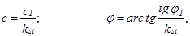
где cI и jI - расчетные значения соответственно удельного сцепления, кПа, и угла внутреннего трения, град, определенные согласно требованиям СНиП 2.02.01-83;
kst - коэффициент устойчивость, определяемый по формуле
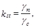
здесь gn и gc - соответственно коэффициенты надежности по назначению и условий работы, принимаемые в соответствии со СНиП 2.02.01-83; для земляных сооружений высотой (глубиной) до 10 м со сроком службы до 5 лет допускается принимать значение коэффициента надежности по назначению gn = 1,05;
gI - расчетное значение удельного веса грунта, кН/м3, определяемого в соответствии с требованиями СНиП 2.02.01-83. Удельный вес, кН/м3, вычисляется путем умножения плотности, т/м3, на величину ускорения силы тяжести, 9,8 м/с2.
2. Находим число единиц загружения K в заданной нагрузке q, кПа, на поверхности грунтового массива по формуле
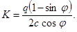
При отсутствии нагрузки на поверхности или ее расположении от бровки выемки на расстояниях, больше установленных в п. 5, принимается К = 0.
3. Определяем параметр устойчивости по формуле
4. Требуемый угол откоса q находим по значениям j, К и Е следующим образом:
при Е £ 0,25 по графикам на черт. 1-5 с интерполяцией для промежуточных значений j и Е;
при Е > 0,25 по формуле
где q0 - предельное значение q (обозначено на верхнем обрезе координатной сетки на черт. 1-5);
q0,25 - значение q, соответствующее Е = 0,25.
5. Для временных откосов (со сроком службы до одного года) минимальное приближение к бровке bf, м, нагрузки, которую допускается не учитывать (К = 0) при нахождении значения q, допускается определять в зависимости от ширины призмы обрушения откоса b, м:
а) при нагрузке от сыпучего материала с удельным весом gm £ 18 кН/м3 (например, от отвала грунта), отсыпанного под углом естественного откоса, но не более 45 от горизонтали
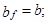
б) при равномерно распределенной нагрузке
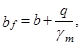
Ширину призмы обрушения откоса b, м, определяем по формулам:
при Е ³ 0,167 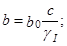
при 0,167 > Е ³ 0,1
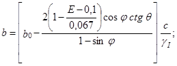
при Е < 0,1 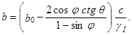
Параметр b0 находим по черт. 6 в зависимости от параметра hk, определяемого по формуле
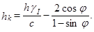
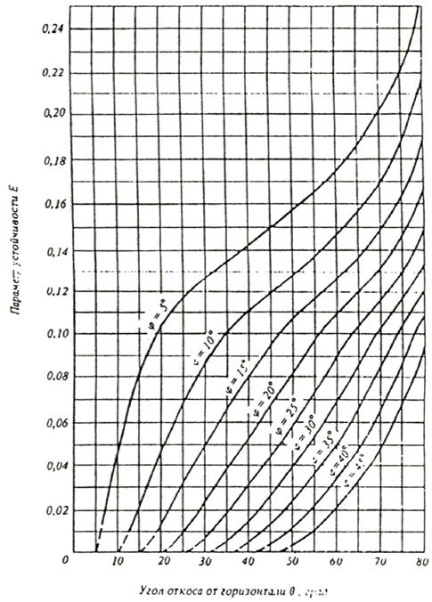
Черт. 1. Графики для определения крутизны откоса при К = 0
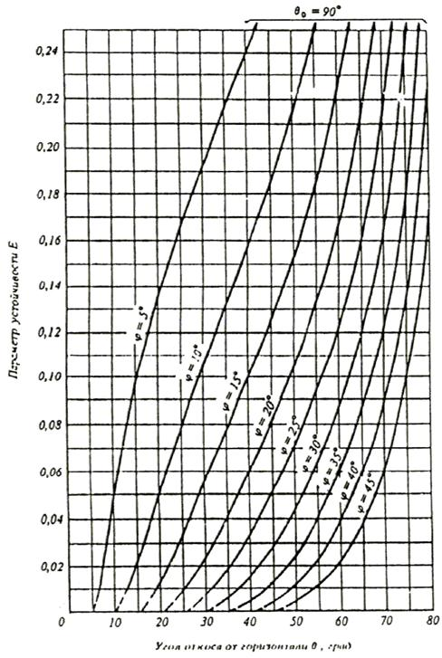
Черт. 2. Графики для определения крутизны откоса при К = 1
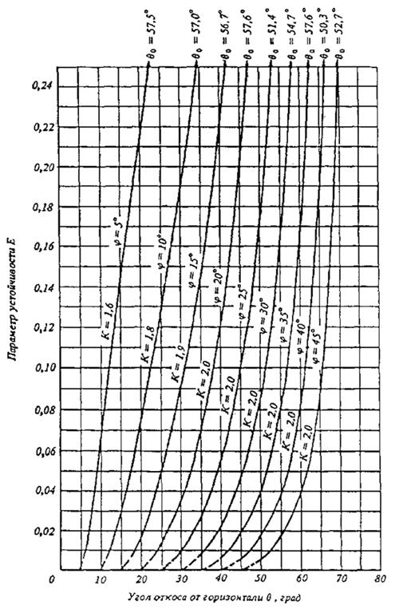
Черт. 3. Графики для определения крутизны откоса при 1 < К < 1
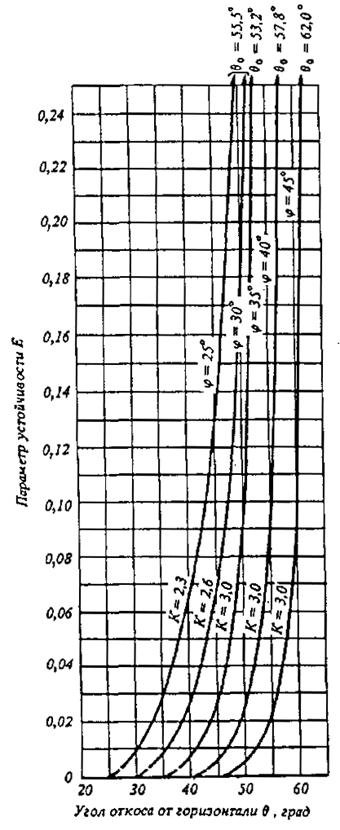
Черт. 4. Графики для определения крутизны откоса при 2 < К < 3
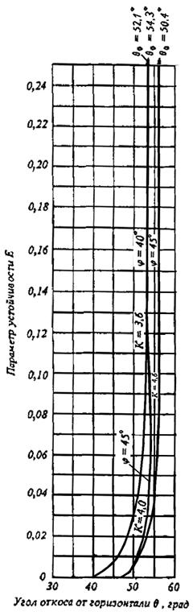
Черт. 5. Графики для определения крутизны откоса при 3 < K <5
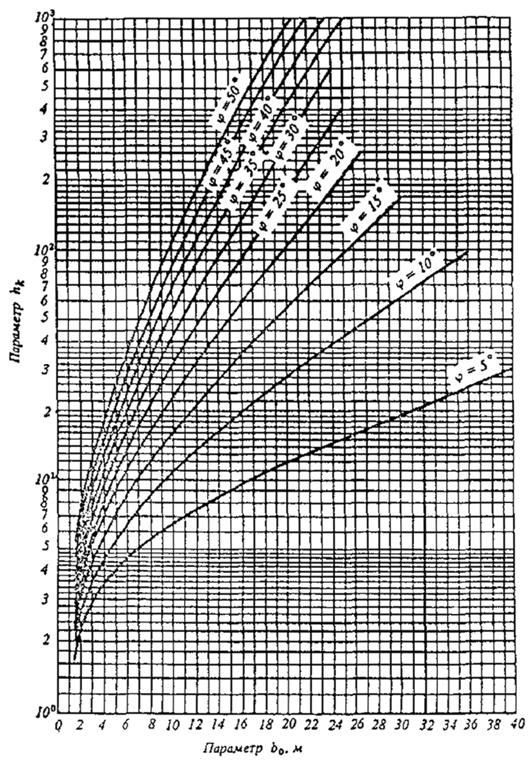
Черт. 6. Графики для определения параметра b0
1. Опытное уплотнение грунтов выполняется с целью уточнения технологических параметров и режимов работы уплотняющих машин: толщины отсыпаемых слоев, глубины уплотнения, расстояний между точками погружения уплотняющих рабочих органов (при глубинном уплотнении), минимальных расстояний от уплотняющих рабочих органов до строительных конструкций.
2. Опытное уплотнение грунтов естественного залегания следует производить в зависимости от геологического строения грунтов на стройплощадке по указаниям проекта:
при однородном напластовании грунта - в одном месте;
при однородном напластовании грунта, но при значительном изменении влажности - в двух местах;
при разнородном напластовании грунтов - в двух местах.
3. Размеры участка для опытного уплотнения должны быть не менее трех диаметров трамбовки или двойной ширины рабочего органа трамбующей машины при уплотнении трамбованием, не менее 6´12 м при уплотнении укаткой и 10´10 м при виброуплотнении. Опытные котлованы следует вытрамбовывать из расчета по одному котловану на каждый типоразмер используемой трамбовки.
4. При глубинном уплотнении просадочных грунтов грунтовыми сваями опытный участок уплотняется не менее чем тремя смежными сваями, расположенными в плане в вершинах равностороннего треугольника на расстоянии согласно проекту.
5. Опытное уплотнение просадочных грунтов предварительным замачиванием, в том числе с применением глубинных взрывов, осуществляется в опытном котловане глубиной 0,8 м, шириной, равной толщине слоя просадочного грунта, но не менее 20 м.
6. При уплотнении грунтов трамбовками через два удара трамбовки (прохода трамбующей машины) по забитым в грунт штырям нивелированием определяется понижение уплотняемой поверхности. Для контрольного определения толщины уплотненного слоя в центре уплотненной площади на глубину, равную двум диаметрам трамбовки (через 0,25 м по глубине), следует определять плотность и влажность грунта.
7. При устройстве грунтовых подушек опытное уплотнение производится при трех вариантах: числе проходов катка 6, 8 и 10 или ударов трамбовки (проходов трамбующей машины) по одному следу - 8, 10 и 12. Уплотнение производится для всех разновидностей применяемых грунтов не менее чем при трех значениях их влажности, равных 1,2 Wp; 1,0 Wp и 0,8 Wp (Wp - влажность на границе раскатывания).
8. После уплотнения грунта на опытном участке надлежит определить плотность и влажность уплотненного грунта на двух горизонтах, соответствующих верхней и нижней части уплотненного слоя по ГОСТ 22733-77.
9. Определение плотности сухого грунта следует производить методом режущих колец по ГОСТ 5180-84. Допускается производить контроль плотности экспресс-методами (зондированием по ГОСТ 19912-81 и ГОСТ 20069-81, радиоизотопным по ГОСТ 23061-78 и др.). При использовании экспресс-методов 5 % общего числа измерений следует выполнять методом режущих колец.
10. Опытное вытрамбовывание котлованов в просадочных грунтах следует производить с замером понижении дна котлована после каждых двух ударов трамбовки. Нивелирование надлежит выполнять по верху трамбовки в двух диаметрально противоположных точках. Для контрольного определения размеров уплотненной зоны в центре котлована отрывается шурф на глубину, равную двум диаметрам или двойной ширине основания трамбовки с отбором проб грунта через каждые 0,25 м. На каждом горизонте пробы берутся в центре и со смещением на 0,25 м в сторону на расстоянии от края котлована, равном удвоенному размеру среднего сечения трамбовки.
11. При опытном вытрамбовывании котлованов с уширением основания в просадочных грунтах фиксируется объем каждой порции и общего количества втрамбовываемого материала (щебня, гравия и т.п.) и размеров в плане и по глубине полученного уширения.
12. Для установления результатов опытного глубинного уплотнения грунтовыми сваями на строительной площадке следует отрывать контрольный шурф на глубину не менее 0,7 просадочной толщи с определением влажности и плотности грунта через каждые 0,5 м на глубину 3 м, а ниже - через каждый метр. На каждом горизонте определяется плотность сухого грунта в двух точках в пределах каждой грунтовой сваи и в межсвайном пространстве.
13. Для наблюдения за просадкой уплотняемого грунта в процессе опытного замачивания и замачивания с глубинными взрывами следует установить на дне котлована и за его пределами по двум взаимно-перпендикулярным сторонам котлована поверхностные марки через 3 м на расстоянии, равном полуторной толщине слоя просадочного грунта, а в центре котлована - куст глубинных марок в пределах всей просадочной толщи через 3 м по глубине.
При выполнении опытного замачивания с применением энергии глубинных взрывов ВВ дополнительно следует осуществлять инструментальные замеры в цепях уточнения радиуса зоны разрушения структуры грунта от одиночного заряда и равномерности осадки массива при взрыве смежных зарядов.
14. Опытное виброуплотнение водонасыщенных песчаных грунтов следует производить в пределах площадки, имеющей наиболее характерный гранулометрический состав грунта, без «рыхления» - в семи точках, с «рыхлением» - в шести. Оценка гидровиброуплотнения производится по показателю плотности сухого грунта с отбором проб.
1. Необходимую минимальную энергию удара молота Eh, кДж, следует определять по формуле
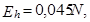
где N - расчетная нагрузка, передаваемая на сваю, кН.
Принятый тип молота с расчетной энергией удара Ed ³ Eh, кДж, должен удовлетворять условию
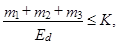
где К - коэффициент применимости молота, значения которого приведены в табл. 1;
m1 - масса молота, т;
т2 - масса сваи с наголовником, т;
т3 - масса подбабка, т.
Таблица 1
|
Коэффициент К, т/кДж, при материале свай |
|||
|
железобетон |
сталь |
дерево |
|
|
Трубчатые дизель-молоты и молоты двойного действия |
0,6 |
0,55 |
0,5 |
|
Молоты одиночного действия и штанговые дизель-молоты |
0,5 |
0,4 |
0,35 |
|
Подвесные молоты |
0,3 |
0,25 |
0,2 |
Примечание. При погружении свай любого типа с подмывом, а также свай из стальных труб с открытым нижним концом указанные значения коэффициентов увеличиваются в 1,5 раза.
2. При забивке наклонных свай расчетную энергию удара молота Eh следует определять с учетом повышающего коэффициента, значение которого принимается для свай с наклоном 5:1; 4:1; 3:1; 2:1 соответственно равным 1,1; 1,15; 1,25 и 1,4.
При выборе молота для забивки стального шпунта значение N определяют расчетом так же, как и для сваи в соответствии с указаниями СНиП 2.02.05-85, причем значения коэффициентов условия работ gc, gcR и gcf при этом расчете следует принимать равными 1,0.
3. Выбранный в соответствии с рекомендациями п. 1 молот следует проверить на минимально допустимый отказ свайного элемента smin, который принимается равным минимально допустимому отказу для данного типа молота, указанному в его техническом паспорте, но не менее 0,002 м - при забивке свай, и не менее 0,01 м - при забивке шпунта.
Выбор молота при забивке свай длиной свыше 25 м или с расчетной нагрузкой на сваю более 2000 кН производится расчетом, основанном на волновой теории удара.
4. Забивку свай до проектных отметок следует выполнять, как правило, без применения лидерных скважин и без подмыва путем использования соответствующего сваебойного оборудования. Применение лидерных скважин допускается только в тех случаях, когда для погружения свай до проектных отметок требуются молоты с большой массой ударной части, а также при прорезке сваями просадочных грунтов.
Значение необходимой энергии удара молота Eh, кДж, обеспечивающей погружение свай до проектной отметки без дополнительных мероприятий, следует определять по формуле
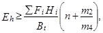
где Fi - несущая способность сваи в пределах i-го слоя грунта, кН;
Hi - толщина i-го слоя грунта, м;
B - число ударов молота в единицу времени, ударов в 1 мин;
t - время, затраченное на погружение сваи (без учета времени подъемно-транспортных операций);
Bt - число ударов молота, необходимое для погружения сваи, принимаемое обычно равным не более 500 ударов;
n - параметр, принимаемый равным п = 4,5 - при паровоздушных механических и штанговых дизель-молотах и h = 5,5 - при трубчатых дизель-молотах;
т2 - масса сваи, т;
m4 - масса ударной части молота, т.
5. Значение контрольного остаточного sa, м, отказа при забивке и добивке железобетонных и деревянных свай длиной до 25 м в зависимости от энергии удара Ed выбранного молота и несущей способности сваи Fd, указанной в проекте, должно удовлетворять условию
Если фактический (измеренный) остаточный отказ sa < 0,002 м, то следует предусмотреть применение для погружения свай молота с большей энергией удара, при которой остаточный отказ будет sa ³ 0,002 м, а в случае невозможности замены сваебойного оборудования - общий контрольный отказ сваи sa + sel, м (равный сумме остаточного и упругого отказов), должен удовлетворять условию
В формулах (4) и (5) приняты обозначения:
h - коэффициент, принимаемый по табл. 2 в зависимости от материала сваи, кН/м2;
А - площадь, ограниченная наружным контуром сплошного или полого поперечного сечения ствола сваи (независимо от наличия или отсутствия у сваи острия), м2;
Ed - расчетная энергия удара молота, кДж, принимаемая по табл. 3;
m1 - масса молота, т;
m2 - масса сваи и наголовника, т;
m3 - масса подбабка, т;
e - коэффициент восстановления удара, принимаемый при забивке железобетонных свай и свай-оболочек молотами ударного действия с применением наголовника с деревянным вкладышем e2 = 0,2;
sa - фактический остаточный отказ, равный значению погружения сваи от одного удара молота;
sel - упругий отказ сваи (упругие перемещения грунта и сваи), определяемый с помощью отказомера, м;
hp и hf - коэффициенты перехода от динамического (включающего вязкое сопротивление грунта) к статическому сопротивлению грунта. принимаемые соответственно равными: для грунта под нижним концом сваи hp = 0,00025 с×м/кН и для грунта на боковой поверхности сваи hf = 0,025 с×м/кН;
Af - площадь боковой поверхности сваи, соприкасающейся с грунтом, м2;
m4 - масса ударной части молота, т;
g - ускорение свободного падения, принимаемое равным g = 9,81 м/с2;
Н - фактическая высота падения ударной части молота, м;
h - высота первого отскока ударной части дизель-молота, а для других видов молотов h = 0, м.
Примечание. При забивке свай через грунт, подлежащий удалению в результате последующей разработки котлована, или через грунт для водотока значение расчетного отказа следует определять исходя из несущей способности свай, вычисленной с учетом неудаленного или подверженного возможному размыву грунта, а в местах вероятного проявления отрицательных сил трения - с учетом последнего.
Таблица 2
|
Коэффициент h, кН/м2 |
|
|
Железобетонные с наголовником |
1500 |
|
Деревянные без подбабка |
1000 |
|
Деревянные с подбабком |
800 |
Таблица 3
|
Расчетная энергия удара молота Ed, кДж |
|
|
Подвесной или одиночного действия |
GH |
|
Трубчатый дизель-молот |
0,9 GH |
|
Штанговый дизель-молот |
0,4 GH |
Обозначения, принятые в табл. 3:
G - вес ударной части молота, кН;
Н - фактическая высота падения ударной части дизель-молота, м.
6. Расчетный отказ для железобетонных свай длиной свыше 25 м, а также для стальных трубчатых свай следует определять расчетом, основанным на волновой теории удара.
При выборе молота для забивки шпунта и назначении режима его работы по высоте падения ударной части необходимо соблюдать условие
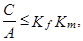
где G - вес ударной части молота, МН;
А - площадь поперечного сечения шпунта, м2;
Kf - безразмерный коэффициент, принимаемый по табл. 4 в зависимости от типа шпунта и расчетного сопротивления шпунтовой стали по пределу текучести;
Km - коэффициент, принимаемый в зависимости от типа молота и высоты падения его ударной части по табл. 5.
Таблица 4
|
Коэффициент Kf при расчетном сопротивлении шпунтовой стали, МПа, по пределу текучести |
||||||
|
210 |
250 |
290 |
330 |
370 |
410 |
|
|
Плоский |
0,70 |
0,83 |
0,96 |
1,10 |
1,23 |
1,36 |
|
Зетовый |
0,80 |
0,98 |
1,16 |
1,37 |
1,57 |
1,78 |
|
Корытный |
0,90 |
1,15 |
1,40 |
1,70 |
2,0 |
2,30 |
|
Высота падения ударной части, м |
Коэффициент Km, МПа |
|
|
Паровоздушный одиночного действия или подвесной |
0,4 |
7,5 |
|
0,8 |
4,5 |
|
|
1,2 |
3,0 |
|
|
Паровоздушный двойного действия |
- |
2,0 |
|
Дизельный трубчатый |
2,0 |
4,5 |
|
2,5 |
3,0 |
|
|
3,0 |
2,0 |
|
|
Дизельный штанговый |
- |
5,0 |
Примечания: 1. Расчетное сопротивление шпунтовой стали по пределу текучести принимается согласно СНиП II-23-81.
2. Для промежуточных значений сопротивлений шпунтовой стали и высот падения ударной части значения коэффициентов Kf и Km в табл. 4 и 5 определяются интерполяцией.
7. При проверке контрольных отказов в случаях, когда в проекте дана только расчетная нагрузка на сваю N, кН, несущую способность сваи Fd, кН, следует принимать равной
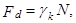
где gk - коэффициент надежности;
gk = 1,4 при расчетах по формуле (4) и gk = 1,25 при расчетах по формуле (5) для всех зданий и сооружений, кроме мостов, если в проекте нет других указаний.
1. Значение необходимой вынуждающей силы вибропогружателя F0, кН, определяют по формуле
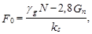
где gg - коэффициент надежности по грунту, принимаемый равным 1,4;
N - расчетная нагрузка на свайный элемент по проекту, кН, а в случае погружения свайных элементов до расчетной глубины - соответствующее этой глубине сопротивление углублению в грунт свайного элемента по проекту;
Gn - суммарный вес вибросистемы, включая вибропогружатель, свайный элемент и наголовник, кН;
ks - коэффициент снижения бокового сопротивления грунта во время вибропогружения, принимаемый по табл. 1.
Необходимое значение минимальной вынуждающей силы вибропогружателя F0 окончательно принимается не ниже 1,3 Gn при погружении свай-оболочек (с извлечением грунта из внутренней полости в ходе погружения) и 2,5 Gn - при погружении полых свай без извлечения грунта.
Таблица 1
|
Коэффициент ks для грунтов |
||||||||||||
|
песчаных влажных средней плотности |
||||||||||||
|
гравелистых |
крупных |
средних |
пылеватых |
мелких |
||||||||
|
2,6 |
3,2 |
4,9 |
5,6 |
6,2 |
||||||||
|
глинистых с показателем текучести IL |
||||||||||||
|
0 |
0,1 |
0,2 |
0,3 |
0,4 |
0,5 |
0,6 |
0,7 |
0,8 |
||||
|
1,3 |
1,4 |
1,5 |
1,7 |
2,0 |
2,5 |
3,0 |
3,3 |
3,5 |
||||
|
Примечания: 1. Для водонасыщенных крупных песков значения ks увеличиваются в 1,2 раза, средних песков - в 1,3 раза, мелких и пылеватых - в 1,5 раза. 2. Для заиленных песков значения ks понижаются в 1,2 раза. 3. Для плотных песков значения ks понижаются в 1,2 раза, а для рыхлых - увеличиваются в 1,1 раза. 4. Для промежуточных значений показателя текучести глинистых грунтов значения ks определяются интерполяцией. 5. При слоистом напластовании грунтов коэффициент ks определяется как средневзвешенный по глубине. |
||||||||||||
По принятой необходимой вынуждающей силе следует подбирать тот вибропогружатель наименьшей мощности, у которого статический момент массы дебалансов Km (или промежуточное значение Km для вибропогружателя с регулируемыми параметрами), кг × м, удовлетворяет условию
(2)
где Mc - суммарная масса вибропогружателя, сваи и наголовника, кг;
A0 - необходимая амплитуда колебаний при отсутствии сопротивлений грунта, см, принимается по табл. 2.
При окончательном выборе типа вибропогружателя следует учитывать, что при равной вынуждающей силе большей погружающей способностью обладает вибропогружатель с большим статическим моментом массы дебалансов Km, а при прочих равных условиях следует выбирать вибропогружатель с регулируемыми в процессе работы параметрами.
Для погружения тяжелых свай-оболочек допускается предусматривать использование спаренных вибропогружателей. В этом случае их моменты дебалансов суммируются.
Таблица 2
|
Характеристика прорезаемых свайными элементами грунтов по трудности вибропогружения |
А0, см, при глубине погружения, м |
|
|
до 20 |
св. 20 |
|
|
Водонасыщенные пески и супеси, илы, мягко- и текучепластичные, пылевато-глинистые грунты с показателем текучести IL > 0,5 |
0,7 |
0,9 |
|
Влажные пески, супеси, тугопластичные, пылевато-глинистые грунты с показателем текучести IL > 0,3 |
1,0 |
1,2 |
|
Полутвердые и твердые, пылевато-глинистые грунты, гравелистые маловлажные плотные пески |
1,4 |
1,6 |
Примечание. При выборе типе вибропогружателя для заглубления полых свай и свай-оболочек с извлечением грунта из внутренней полости указанные значения А0 понижаются в 1,2 раза. При слоистом напластовании грунтов значение А0 принимается для слоя самого тяжелого грунта из числа прорезаемых слоев.
2. В конце вибропогружения висячего свайного элемента при скорости вибропогружения V в последнем залоге не менее 2 см/мин должно удовлетворяться условие
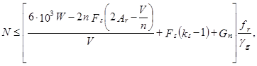
где N - расчетная нагрузка на свайный элемент, кН;
W - мощность, расходуемая на движение вибросистемы, кВт, определяемая по формуле
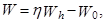
здесь h - КПД электродвигателя, принимаемый по паспортным данным в размере 0,83-0,90 в зависимости от нагрузки;
Wh - потребляемая из сети активная мощность в последнем залоге, кВт;
W0 - мощность холостого хода, принимаемая при отсутствии паспортных данных равной 25 % номинальной мощности вибропогружателя. кВт;
Fs - боковое сопротивление грунта при вибропогружении, кН, определяемое по формуле
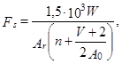
здесь п - фактическая частота колебаний вибросистемы, мин-1;
Аr - фактическая амплитуда колебаний, принимаемая равной половине полного размаха колебаний свайного элемента на последней минуте погружения, см;
A0 - расчетная амплитуда колебаний вибросистемы без сопротивлении, см, определяемая по формуле
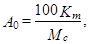
здесь Km - статический момент массы дебалансов вибропогружателя, кг × м, в последнем залоге;
Mc - суммарная масса вибросистемы, кг;
ks - коэффициент снижения бокового сопротивления грунта во время вибропогружения, принимаемый по табл. 1;
Gn - вес вибросистемы, равный суммарному весу сваи, наголовника и вибропогружателя, кН;
fr - коэффициент влияния инерционных и вязких сопротивлений на несущую способность сваи, принимаемый по табл. 3;
gg - коэффициент надежности по грунту, принимаемый равным 1,4.
Таблица 3
|
Коэффициент fr |
|
|
Пески и супеси твердые |
1,0 |
|
Супеси пластичные, суглинки и глины твердые |
0,95 |
|
Суглинки и глины: |
|
|
полутвердые |
0,90 |
|
тугопластичные |
0,85 |
|
мягкопластичные |
0,80 |
Примечание. При прорезании сваей слоистых грунтов коэффициент fr определяется как средневзвешенный.
3. Контроль за погружением свай методом вдавливания следует осуществлять по глубине погружения и усилию вдавливания N. В конце погружения, когда нижний конец сваи достиг отметок, близких к проектным, прекращать погружение сваи допускается при условии
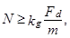
где N - усилие вдавливания, кН;
kg - коэффициент надежности, принимаемый равным kg = 1,2;
Fd - несущая способность сваи, кН, указанная в проекте;
т - коэффициент условий работы, принимаемый при отсутствии опытных данных т = 0,9.
Примечание. Величину коэффициента т допускается уточнить по результатам статических испытаний свай.
СОДЕРЖАНИЕ